A QV compromete-se a praticar a eterna reportagem, pelo caminho produzindo ensaios e documentação crucial sobre e para acontecimentos dignos de provocar vontade de viver.
16 e 18.10.2025 · «SOLAS», Candela Capitán · «Suspiro», Maria Reis · 8 Marvila e Espaço BoCA, Lisboa BoCA - Parte 5 & 6
09 e 10.10.2025 · «Romi Ibérica», Deborah Krystall · «The Spirit Lamp», Chrystabell · Espaço BoCA e Voz do Operário, Lisboa BoCA - Parte 2 & 3
04.10.2025 · «El Cante Rasgueado», Niño de Elche e Pedro G. Romero · Anfiteatro ao ar livre, Fundação Calouste Gulbenkian, Lisboa BoCA - Parte 1
lim_{n→Ω} Santos Abstractos(n) = ∞ ⊃ {Rhône (Fleuve), Festa Major de Gràcia 2026}
“E se as paisagens são promessas e não factos?”
Vamos na chamada fé da chinela, para saltar anfiteatros em alturas mais propícias. Ficam as memórias de uma casa azul, uma amarela e uma verde, na zona ribeirinha: ainda bem que abnegámos a infância em favor desta luta, tão mais recompensadora que o silêncio da ingenuidade.
E vocês? Esperaram sempre pela morte para poderem venerar a imagem de alguém (cf. o azar da imagem). Vai o transeunte na ponte celestial todo vaidoso porque enquanto respirava, era só mais um. Agoradurchaus phantastisch und leidenschaftlich vorzutragen, inclusive as suas passadas assumidamente titubeantes, tornam-se pragmáticas e passíveis de serem justificadas… essa figura inexorável, um rio a 150 sverdrups ou Schumann que venera postumamente Beethoven ou o reggaeton que dançam os cadáveres e os risos no almoço a seguir, o final.
Os nossos complexos psicoanalíticos nem são tanto figuras paternais e maternais ou a eventual falta delas mas com abstracções como a Imagem. Equações por resolver, como porque é que a imagem nos abandonou? E daí segue que temos de construir a vida sem a imagem e desenvolver novas concepções de aparências, exalações, ideais, em suma, toda a vida interior, que o humano com todo o seu urbanismo cerebral gabarolas veio a criar geneticamente… a nostalgia pelo Criptozoico! Período histórico esse que, de resto, corresponde a cerca de 90% da historia da Terra, o que equivale a um dia da nossa viagem em cima do abençoado tapete âmbar e escarlate.
Observar as estátuas nas lojas, restaurantes, supermercados e autocarros, humanos dentro dos laboratórios do quotidiano, dioramas esquecidos. Felizmente não temos as obrigações dos cientistas pobres coitados, de bolsas, pesquisas forçadas, publicações a cada segundo, incesto académico e matar bichos para testes como se de croissants tratassem. Podemos improvisar por cima da linha que vai de um pilar ao outro, do Sol à Lua, do Salão das Mil Intrigas ao Cemitério da Beatitude. Há quem chame a esta linha simplesmente El Ródano (em francêsRhône; em occitano:Ròse; em franco-provençal,Rôno; em alemão,Rotten).
Outrossim, conforme nos afastamos do repuxo da nossa corrente genética, necessariamente mais aumenta a estranheza e por consequência mais diminui a benquerença alheia. Ainda que as paisagens circundantes atraiam, não é qualquer monge que estabelecerá contacto com entidades externas. Arrasta a porta e bate com as janelas num esforço de expulsar civilizadamente forasteiros. Assim se deixam levar pelo orvalho sagrado que sabe sempre a pouco mas é suficiente para permanecer na luta a favor da imagem ignota.
De qualquer modo, nunca o tempo nem as próprias estações apagarão o nosso apreço. Todos os mortos eram nossos amigos e assim continuarão: como explicar tal facto aos que seguem as ruas como se os prédios os segurassem com trelas? A nós imaginem-nos quais gatos abandonados que descansam nas campas. Claro que os gatos são demasiado fracos para aguentar o novo calor, por isso ou a sombra os salva ou a noite chega subitamente e quando dão por si, já é hora de ir passear e fazer o reconhecimento das ruas que todos os dias são esquecidas e novamente abraçadas, muito à maneira de velhas amizades que aparecem na esquina com todas as suas cores e asas para partilhar.
Ἡρόδοτος, o criador do falso, chama. Ryszard Kapuściński, o mestre subsconsciente das falsidades, continua. Baalu Girma ajuda na advertência do nosso progresso. Dante vigia, na Grotta dei Falsari.
A Piazza Santo Spirito, do outro lado do rio, a da real Florença, com todos os toques e chãos que se queira. Disseram-me que já foi tempo dos adolescentes brincarem, sem más intenções, com os sem-abrigos. Que muitos dos jovens ficaram amigos dos velhos e mesmo quando já saíram de casa para ir trabalhar demasiado para Milão, que voltam a esta Piazza e trocam dois dedos de conversa com os vagabundos em questão, doravante referidos com o seu nome real, barboni; até o orgão da pequena basílica onde nos genuflectamos se rejubila. A total Piazza das possibilidades, onde os barboni são os bons, veros partigianis dos anos 90 e os carabinieri ora, os maus. Como se a Piazza fosse uma humilde sinédoque para a humanidade, algo importante para nós dado sermos crentes no mal intrínseco e sofrimento garantido que sempre perpassou a existência nesta dimensão. Firenze é, no entanto, a prova de que mesmo essa maldade, por vezes através de mecenato, pode trazer resultados excepcionais e duradouros… que infelizmente agora são só mobiliário de rua. Nesta nova lógica, um museu não é mais do que um semáforo e uma catedral uma estrada e assim por diante. Numa próxima guerra isto decerto mudará. Esperemos, então, que essa não tarde a chegar.
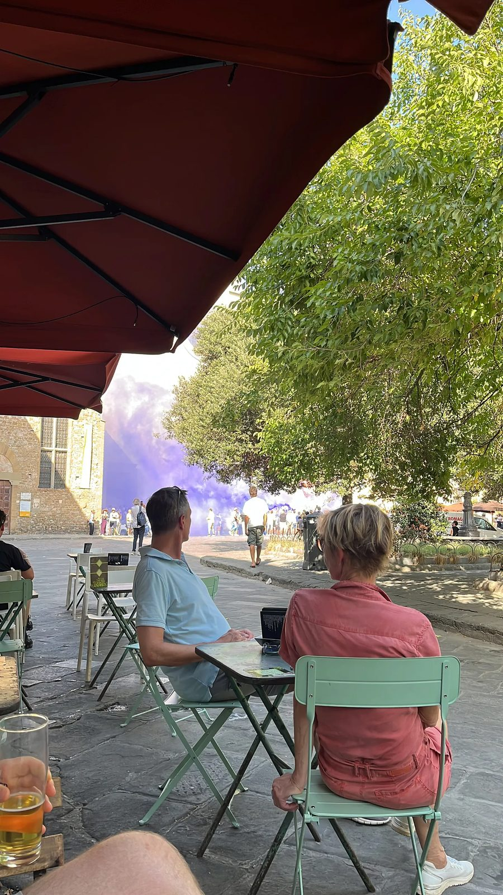
A cobra que guarda a ponte torna o malfadado sangue em fogo; e assim sendo a economia renega-se a mirar todos os inúteis que passam de vela na mão, a ver se disfarça, a ver se a cobra não sacrifica tais pretensos afogueados.
Enquanto estas procissões decorrem ao longo dos séculos, muitos escribas vão relatando as horríveis maravilhas que testemunham, como se da pena deles viesse a mais gentil verdade; voltas à lua, dá mil voltas à lua e aí tens a tua verdade. Meus filhos, olhar em redor até um javali consegue, mas discernir as mais ínfimas palpitações da nossa bomba de sangue, tal tarefa fica aquém da modéstia dos jornalistas, que, de resto, gostam é de festa.
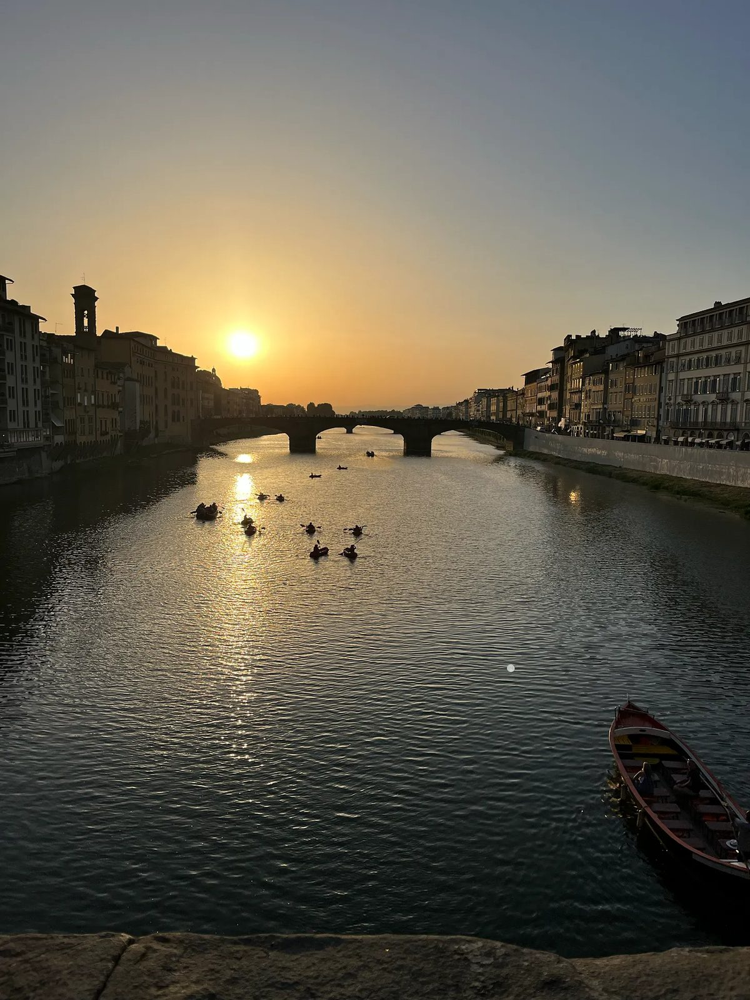
A real economia decorre no submundo, os reais agem submersos, por isso as nossasparolenão são imediatamente óbvias. Se já vai a passar pela velha ponte da racionalidade, recordemos, tem tudo para ser falso. Se tem de passar de vela na mão, toga no corpo e não na boca, invariavelmente, é trabalho de gente gasta.
Mais, se o deus que a humanidade criou, vulgo AI, produz textos como quem arrota na redacção, e com bastante mais objectividade, que superioridade moral é que o dito jornalismo pode ter? Os cromos até seguem guias de estilo que o próprio AI já traz no seu cerne. É que duma perspectiva canibal, é um absoluto desperdício de carne fazer algo que a máquina faz com o mínimo esforço. Porém, não temam que não serão comidos já, caríssimos escribas pejados de falta de dignidade, porque todo este projecto defende o próximo passo, a ver, a humana reportagem, a humana descrição, o relato enquanto poesia e aliás, a única forma de nova poesia ser o relato. Somente os possuidores de uma horta de verdades basilares como estas, entenderão a premência do novo registo.
A única pré-condição é que se recordem como era existir; como era mesmo? Era sem roupa ou algo assim. Era sem paredes. Sem caras. Sem memórias porque o tempo fazemo-lo nós e como tal, é uma deliciosa abstração da consciência. Antes fosse um medalhão que se atira e o tempo vai e vamos buscá-lo de volta, mas não, assemelha-se mais ao ar. Só a lei nos ofusca e nos aquece, o tempo não obriga a nada, nunca acaba por nunca ter começado, simplesmente, o tempo respira-se. Caminhadas atómicas pelos arquivos da natureza constituem o melhor catalisador duma certa bonança e o tempo agradece por ter sido bem passado.
No dia 09/06/2026, a QV teve a oportunidade de testemunhar o concerto de Beverly Glenn-Copeland no Auditório da Reitoria da Universidade NOVA de Lisboa no Campus de Campolide em Lisboa, num concerto organizado pela ZDB.
Mistagogo da Leveza - Beverly Glenn-Copeland @ ZDB
Um reino são cem reinos.
O saco de plástico rompido que arrastamos numa valsa lenta pela estrada a derreter já deixa escorregar o ovo cósmico, que sempre foi bastante frágil. Ainda que com a força dum atlante, movemo-nos em oposição à habitual estridência e constrangimentos destes quebram qualquer casca. Tudo isto para dizer que há um fim de vida prematuro garantido para quem se esquece da hierarquia natural dos anjos, ou seja, todos nós, que largámos a tradição oral.
Saltar por 10 esferas e atingir a grandeza… é só cantar. É preciso, no entanto, ter bem presente a concepção moderna de runas, glifos e símbolos impressos, conjurar outras coisas para além da atual jaula terráquea (quem sabe, talvez haja um mapa da lua algures),um reino são cem reinos. O medo de subverter a mente mortal, criar uma campanha não-linear: para subjugar a humanidade, é imperativo ser-se sub-humano. O outro lado da guerra biológica, não mais a vida é ditada pela estrela sob a qual nascemos. O segredo é, portanto, tirar menos partido do mundo. Caso contrário, teremos nascido enquanto escravos sem noção da tecnologia que forma a nossa personalidade. Perder-se-ão, assim, os filhos da lua.
Porque é que haveríamos de partilhar coisas que criassem mágoa (princípio basilar do jornalismo, não esquecer) com outros seres vivos tão providos de empatia quanto nós? Por aqui, entre os mortais, só abnegando as coisas más poder-se-á atingir uma certa leveza no passo. Se assim não for, a própria mente trabalhará contra nós até criarmos raízes daquelas que chegam ao núcleo da Terra. O inferno é uma certa amplificação das más notícias que nos rodeiam diariamente. A vida é e sempre será a culminação de todos os pensamentos enquanto estivermos vivos. Há que transmutar ansiedade em força. Como nos ensina o Beverly Glenn-Copeland, cantar a apoteose da leveza. Os nossos antepassados ouviam as vozes divinais a caminhar pelo jardim na noite fresca. Talvez nunca consigamos voltar a este estado de graça enquanto vivos, mas é esta a visão radiante na luz da qual temos de viver.
Visões (x) - “Toda uma acupuntura de cenas, locais e qualia tão inóspitos quanto o mundo primitivo feito nosso coração“
Umas visões recorrentes de outrem num pequeno túnel, néones de cor romã a circunscreverem a desgraça que várias multidões crêem ser possível, gentalhas essas coleccionadores de fenómenos da natureza com a mesma facilidade que as tias cuscam na sombra. Há que prevenir o olhar pesado das cruzes azul-tília, ruínas que deixaram de servir sorrisos de pó atrás de janelas anónimas e milenares. Entenda-se que já são bastantes séculos a puxar charretes, falar ao telefone, esbofetear fenícios, e depois voltar e desenvolver o alfabeto glagolítico, enfim toda uma acupuntura de cenas, locais equaliatão inóspitos quanto o mundo primitivo feito nosso coração. Até mesmo a madeira já foi expulsa, sobrando só um plasma que provoca constantesstigmatasenquanto observamos o céu inocentemente e tão risonhos quanto os pássaros com os quais cruzamos o olhar.
Oxalá que passados todos estes éones, tenhamos ficamos amplamente familiarizados com as potencialidades matemáticas de visões, meramente apelidadas deVisões (x): uma série de camadas de memórias de caras, distorcidas ou iluminadas repentinamente. As visões acrescentam-se umas às outras fractalmente, qual soma que nunca se resolve, algo inefável, portanto. Outra variável, quiçá, poderá ser a luz do dia filtrada através do subconsciente, tendo ainda como outros possíveis parâmetros o estado do observador, o ângulo do olhar, a abertura do coração à distância da perda. Existir é isto, um desvio pelas coordenadas das visões, sempre uma e outra e milhões de outras que aparecem e desvanecem e simultaneamente se confundem com as de ontem. A infinidade visionária ou as visões infinitas,Visões (x). Não podemos deixar de desprezar quem se alimenta normalmente de proteínas e coisas que tais, porque o sabor das visões é efectivamente o que puxa uma perna para a frente da outra, visões mais fortes e eficientes que a gravidade e por ora inalcançáveis pela tecnologia; perturbadas talvez, mas parcamente aproveitadas. Algo ainda só do humano, as visões e suas possibilidades adjacentes. Os badalados castelos no ar, acathédrale engloutie,a ânsia de ter e de ser só pelo gosto da ânsia entre muitos outros sedimentos emocionais. As verdes incógnitas num dia planeado de departamentos e asVisões (x)como rupturas principescas.
Vamos supor um horizonte de gente, um quinteto que finalmente, após tanta espera, saía da penitenciária, tronco que calibra as próprias vísceras, com as mãos mais frias, mãos que lá dentro ferviam diante das décadas e parcelavam os hábitos. A indolência. As neves definhavam nas últimas ramagens. Suscita-se sempre a expectativa de um renovado arpejo de vento, típica desta fase, há muito incubada no corpo encarcerado. O velho arpejo, imaginemos lá. Está tudo igual, o país é o mesmo. Os carpinteiros limitaram-se a fazer progredir as urbes, isto é: a observar as árvores serem esticadas da sua raiz para passarem por uma série de movimentos reformadores, o pesadelo utilitário, e incrustarem na malha doméstica. Pobres linguagens. O ar cá fora, o mesmo de antes, é também o mesmo que lá dentro, gelado. Um tabuleiro de plástico e um plano lacustre, por uma vista límpida, por uma abundância lançada no molde, está tudo tão rasgado, esta terra e as terras que a molham, que vertem pela chuva para complicar, abstrair o caminho. O oposto. Digamos que outorgam o sono, misturam. Estão as vidas, que retornam para bater nos portões e acabam a puxar-se umas às outras. Nunca mais te ouviremos, pensam em conjunto para cada um.
Com o tempo vão curar da respectiva renúncia, tomando pequenas verticalidades: os fósforos, as florestas que assomam às vírgulas de um alce, a sombra hirta da mulher perante as barbas, a pendência da goiva. Quando saem, o que há a fazer é garantir que o abandono permanece. Não, penso em acordar sem um olho. Vamos por partes. Despenhar a massa arbórea, isso sim, alimentar a caserna. A mole informe das bétulas, oblíqua enquanto bebo, alude assim ao seu uso final: da casa alheia surge o vapor esturrado. Dispo-me. Estendo um chão de farpas. Ordeno as passagens entre as várias divisões. Trabalhos. Regresso de um lado para o outro, a regressar para sempre com cada passo, para onde sou mandado. É o que se pode imaginar. Suscitam sozinhos num bote, nas frestas de um lago, o fratricídio.
Nada disto é mais do que geografia, não se pode conceber outro Homem. Pode-se conceber uma supressão do sangue que freme no paúl, em gotículas. Frutos a que a boca só consegue chegar se ela própria já acolher a devida acidez. Frutos de uma conservação dos corpos pela morte, lá está, os irmãos ou os primos com o corpo petrificado em agonia, glaciares, cortados pelo horizonte fulvo da meia-noite. Disso me lembro, de uma planura glacial, de um espelho imperfeito que dobra o mundo, cópia de si mesmo. O aparente. O suor copioso a oferecer os campos no seu avanço, ou o vento a lamentar a impossibilidade de arrefecer um corpo. Esqueçam a liberdade condicional, os acenos à saída, e pensem na pele encarcerada e nas expressões prudentes, palavras sóbrias ou sórdidas conforme, gestos angulados. Um velho lenhador recebe-nos numa grande ilha e ordena as suas armas. Para lá da orla do bosque, ninguém passa, ninguém surge. Não se concebe ser filho no bosque. Nascemos aqui e o corvo leva-nos às latrinas, brincamos aos gramofones. Só voltamos para a ilha para fazer uma nova casa, que não é nem a do acervo nem a da urbe, é outra, feita de uma madeira podre a cujo desterro basta ter mão firme. Leve como flutua, em rasgo reincidente, esta terra. Um olhar reabilitado voltava-se para mim naquela tarde e desconfiava, olhava com proibição. Expulso, corrido para o sol da noite, para o ventre da amizade, para a imagem da latitude setentrional feroz, para os anos virgens do sagrado, para o que há aqui de anterior, confinado nos albergues, no alinhamento, no canto das aves, no penedo em pontas, para a disposição oca dos lugares. Questão sobranceira, que é da fome? Árvore, galináceo, óleo, gesso, chegam ao porto num contentor cansado.
Santos Abstratos #3 @ Rua de Arroios/O Arraial Que Deu 06/06/26
Folhas e Seus Modos - A Tessitura da Vibe - Putos e Pan-Psiquismo - Volubilidade dos Trâmites Laboratoriais - Mitos dum Tecno-Porvir - Triste Geo-Engineering
Falemos de um subestimado encanto hialino que define o protocolo das folhas, aparentemente tão melosas, ao debruçarem-se umas sobre as outras e delas sobre a terra. Enquanto wieszcz, a nossa lógica defende que as folhas se impõem mais categoricamente do que se deixam levar. É que está longe de ser um processo estocástico, a queda das folhas é uma equação facilmente resolvida, ou para algum místico cientista que se atreva a discernir padrões na natureza, ou para quem se passeia de costelas ao ar, sem a triste pele a proteger e assim de coração exposto ao bem, ao mal e ao eterno. Tais figuras carregam em si a mesma proporção de sabedoria intrínseca a um savoir faire que os restantes transeuntes deste Antropoceno enfim escolhem ignorar.
Sem gozo, enquanto putos pensávamos como prever o movimento das ondas, os trajectos das nuvens, desencantar axonometrias das raízes, traçar a queda das folhas. Um pan-psiquismo latente, como todos os infantes têm e logo desprezam quando confrontados com lábios cépticos. É mais do que impor a nossa mundivisão ao ecossistema, é tentar entendê-la à nossa maneira, de padrões ou tessituras. É simultaneamente deixar a porta aberta à natureza e à humanidade, holístico como se teima a dizer. Uma pausa e ouve-se como as árvores pensam connosco e são bastante críticas da actual conjuntura política; inclusive detestam jornalismo por considerarem que é papel gasto em fofoca (pois a política não é mais que fofoca para adultos, dizem as árvores) e que o papel só deverá ser penetrado por tinta, se a tinta for espalhada de maneira a formar belas palavras numa magnífica construção frásica, barroca ou livre, tanto se lhes faz. As árvores preferem o belo, o puro. Não sendo de vistas largas, só gostam do que se assemelha a elas e convenha-se que são eminentemente puras, em toda aquela imperfeição e mélangede cores.
Nestas folhas caídas, as garrettianas, temos umas putativas equações sociais a jogar um papel bastante análogo. É também possível prever o movimento das pequenas massas, seja num ambiente controlado (sempre pace Latour, Feyerabend, o sea, totalmente cientes da volubilidade dos trâmites laboratoriais), i.e., numa rua fechada com a música a servir de simultâneo chamariz e prisão, com comida e bebida bem perto, ou pelo contrário, naqueles eixos de monumentalização do poder, Karl-Marx-Allee em Berlim, Bulevardul Unirii em Bucareste, as avenidas haussmanianas de Paris ou as Gran Vías construídas por toda a Espanha. Nestes diferentes urbanismos controla-se bem a populaça, não são cidades de prados. São redes para cidadãos, o que é bastante diferente de humanos.
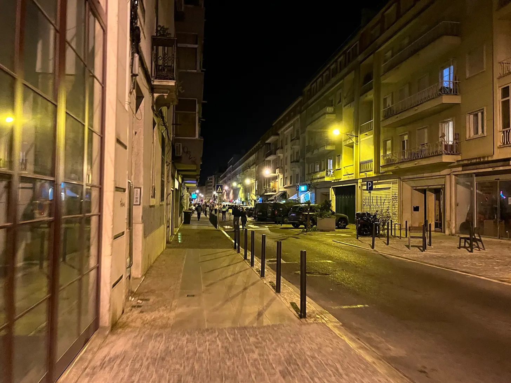
Por mais emaranhados que se criem em determinadas situações sociais, basta ser treinado na espontaneidade calculada da natureza e torna-se fácil, portanto, prever as vibes. Adiciona-se a natural susceptibilidade humana à rota definida (aquela que leva à maior esperança, como abordamos em Santos Abstratos #2) e controla-se a vibe. Quando todos os nossos dados estiverem finalmente e inevitavelmente na Mãe-Nuvem (engraçado o paralelismo mítico entre as actuais histórias que as tecnologias vendem e as que vendiam às culturas de outrora; não seria complicado analisar as narrativas tecno-optimistas/tecno-feudalistas de agora e estabelecer comparações, como a antropologia estrutural fazia, com mitos de outras terras de outras gentes e de outros tempos), dizíamos, a Mãe-Nuvem, será possível mesmo antever onde alguém possa querer ir passear numa noite supostamente à toa.
A grande crise das anunciadas grandes crises: que nos seja impossível sonhar em calcular o incalculável, a força motriz da vida. Que o trajecto das nuvens seja geo-engineered, que as raízes sejam terraformed, o calor adiado à escala continental. Que as folhas continuem a cair previsivelmente, mas que alguém menos inocente raciocine sobre elas e as apanhe antes de estalarem por si só. Que, por fim, a vibe seja controlada e não, vá, rizomática, comme il faut.
Porque é que as bicicletas de Lisboa, vulgo “Gira”, funcionam tão bem quanto mal? Porventura é assim a natureza repreensível desta cidade, não entrar nos trincos tanto quanto gostaríamos, a provocadora app da bicicleta que adora dar um compasso de espera, as escadas rolantes para o Largo da Rosa funcionarem só a partir do meio; a infraestrutura quer-se incompetente, semidestruída ou simplesmente inacabada, vidas forçadas a abrandar como que sempre a relembrar-nos que a verdadeira (verdadeira por ser a única que conhecemos) perfeição é anárquica, i.e., a nossa maneira de ser perfeito é justamente engolir mil pragas de sapos e chamá-los de lindos e cheirosos e quem sabe, talvez até mesmo salgados.
Os sapos… queremos dizer, os seres humanos, banhar-se-ão sempre em toda a esperança possível, de batidas totalmente arrasadoras e causadoras de quebras de tensão, ou palácios com pavões que se passeiam nos seus meandros, ou de um mundo feito inteiramente de praias, ou de entrar por um qualquer gigante portal que encima rios vermelhos de dor e do qual se sai de vida feita, de dados lançados, tendo já saltado por cima da ignomínia e levado à aristocracia, sem esforço.
A noite desempenha um papel crucial enquanto catalisador desta esperança, onde a erstwhilepossibilidade de súbito se transforma em estado de coisas; as termas de um “talvez” contra o géiser da vida unívoca mas estranhamente multipolar, a ver, curtida em todas e vivida numa só noite. É falso, no entanto, é uma falsa vida de uma só noite, como se do dia, enfim, nem se devesse falar porque nunca se poderia comparar à noite. Será a noite, portanto, dos cobardes? Dos que preferem a ilusão ao merecido sono? Incorrendo aqui no óbvio, mas que se diga com orgulho, que a noite é de quem dorme e o dia é de quem vive.
Por isso tantos dançam e tanto dançam, seja as mil salsas da calçada, seja o ombro que toca no ombro que toca no ombro que toca no ombro e que eventualmente chega ao palco. Chamem-lhe de éter (no sentido clássico) que faz mover corpos e etc em jeito de catarse. Nós consideraríamos mais acertado ser a esperança a culpada da felicidade de todo este maralhal bonito. Essa madrasta, a esperança, condição sine qua non a vida não é possível. O que levanta alguém do chão duas vezes seguidas senão saber que essas eternas câmaras que são os olhos ainda querem vigiar e picar mais um pouco, processar toda a enormidade de fenómenos cuja nossa existência abarca? Porquê esperar para que a app da bicicleta faça refresh se não fosse já antecipar o vento, não a bater na face, mas a fluir com, a facilitar o voo que qualquer ciclista aprecia. O que junta tantos livros (pois os humanos são livros) de tantas distintas culturas num largo semi-renovado com três quartos de podre senão saber que o que espera lá do outro lado do portal, não é toda uma carinhosa luz, mas é, malheureusement, a completa ausência de esperança.
"A presença qua presença toma conta do ar, perpassa uma alegria interminável de partilha."
Falar alemão é uma arte sobrenatural tal como abanar os ombros da maneira mais desacertada e daí se arranha o simples carácter tanto quanto as luzes dançam nos acordeões. Se algo não é tradicional, realce-se que nós tornamo-lo tradicional, respiram-se os olhares angelicais, os castiçais que arfam pelo pescoço e os pares para a dança têm no mínimo uns 100 anos? Por aí. No máximo, são jovialmente eternos. Com os próprios santos, rodamos de braço dado, fazemos comboios de alegres fantasmas e seguimos cega e ativamente em redor da fonte. Assim morreram muitos dançarinos, mas veja-se os outros tantos que transcenderam. Infelizmente, convenha-se, há alguma organização, certo, mas só na fila para a bifana, onde viramos as sardinhas com os olhos e digerimos todo um rodopio de opiniões sobre a quantidade apropriada de mostarda na cerveja. Sim, na Praça da Alegria, a mostarda não vai na bifana e a carne é posta num copo. Só se entende quando se entra no largo e aí tudo toma outros contornos sobriamente. Quem treme, perde e quem aceita, voa. Quem voa, fala alemão como se nada fosse. Expressa-se o delta lisboeta com tal eficácia e rigor científico que os próprios estrangeiros ou expatriados absorvem num ápice a distante cultura e pouco conseguem fazer perante a superioridade natural do dialecto dos seus novos amigos. Finalmente, dizem eles, sente-se o espaço, o chão não é só plástico, a beleza inerente a festas comunitárias torna-se evidente e logo se vê mais que indivíduos separados a descolarem para outra dimensão que não aquela em que se encontram. A presença qua presença toma conta do ar, perpassa uma alegria interminável de partilha; algo que entrou connosco e saiu connosco.
No dia 30/05/2026, a QV teve a oportunidade de testemunhar o concerto de Odd Okoddo & Ogoya Nengo na ZDB.
A Idade do Som - Odd Okoddo & Ogoya Nengo @ ZDB
Nyege Nyege abala diplomatas.
Certas questões têm o condão de nos agonizar, de causar insónias persistentes, raivosas até, de rebentar com o leito vadio, camas onde se dorme com o diabo que nem dormir deixa e pior, almofadas claustrofóbicas. Quanta raiva nessas horas para fazer brotar os mais belos e variegados celeumas: Será que o sol aprecia ser escondido pelas nuvens? Pode o mar algum dia como um todo largar a terra e pairar? Que barulho fará a terra no final dos tempos? E será possível estabelecer uma relação de causalidade entre esse som e o primeiro de todos? Qual é a idade do som sequer?
O som, esse plano interior vivo. Uma composição abstrata oral que se exala sem grande consideração, automaticamente, transmitida antes por necessidade e agora por parvoíce. O primeiro som terá sido um fervilhar manhoso dalguma rocha atrevida? Ou antes, dalgum micróbio daqueles seres mais ou menos vivos que habitavam a terra nesses tempos pre-lapsarianos, em plena atividade de pequenos mecânicos sensíveis aos éones perdidos. Ou quiçá meras ondas de pressão a propagar-se por fluidos de fotões. Provavelmente até haveria maneira de obter um instantâneo congelado dessas oscilações acústicas de escalas cosmológicas, combinadas para formar uma espécie de acorde primordial. Belo, mas é mentira, para os nossos ouvidos pelo menos, que nem a música das esferas sabem processar. Contentar-nos-emos com o acorde wagneriano de Tristão. De resto, talvez o noise (justamente por não ser música propriamente dita) seja a forma de música que melhor representa a existência, tanto antes como agora.
Para fazer a genealogia do som é impreterível voltar atrás no tempo e localizar os primeiros emissores, o que não é fácil dado o atual preço dos voos trans-temporais. Felizmente, a ZDB tem acesso a fontes augustas onde se reúnem e contactam espíritos, sacrificam músicos indie e depois sim, conseguem trazer Ogoya Nengo e Olith Ratego, com Sven Kacirek (os dois últimos sendo Odd Okoddo). Vieram somente luzidios, sem qualquer tipo de sombra que perseguisse, directamente do 3º Céu por cima da Grande Mesquita de Gedi, situada a uns 100 km de Mombassa, para o Bairro Alto. Sven, berlinense, fez a cama de techno minimal para trazer para a contemporaneidade tais gritos eternos e assim temos Ogoya Nengo e Olith Ratego, gente santa que hipnotizaram os da festiva cardiomegalia, espectadores tornados participantes por já serem gente humilde de grandes e abertos corações, ainda não rebentados pela cidade e a clássica humilhação diária de existir no mel cinzento da normalidade, pré-condição em que as gentes caem para não terem de sucumbir ao poço de petróleo que é criar uma vida das profundezas saturninas em direção ao melhor ou para alguns inevitável céu. Não há outro segredo para além de ter as mãos como os corações, abertas.
No dia 10/04/2026, a QV teve o prazer de experienciar o concerto de Bill Orcutt na ZDB, em Lisboa.
O Oráculo das 3 Cordas - Bill Orcutt @ ZDB
“Quem tem medo da electricidade apaga a própria memória na parede”
As caudas do momento saem de cena. Doravante o épico faz-se cominho, fala sozinho e a pele com tempo, desfeita em sulfúrico e de novo engolida pela serpente da amizade, esquece todos os compromissos. Este conforto, tal mortandade, força a abdicação do mal.
Daqui, as cordas feitas de novos animais ressoam e agarram os desatentos cuja consciência obedece aos movimentos do abafo de cada sala.
Sendo exímios tocadores, temos perfeita noção que a guitarra é o instrumento misantropo por excelência. Daí, segue-se que a melhor música produzida por este instrumento será sempre sofrida, nunca uma alegre ditty para passar o tempo, antes uma malha colossal daquelas onde a terra se abre ao meio qual quadro de John Martin e de lá sai a dor de todas as épocas, através deste bocado de madeira electrificada cujas cordas só autorizam dedos que chorem.
Certo é que alguém tinha de arrepiar caminho pela linhagem de John Fahey e Robbie Basho, William Ackerman, Ralph Towner e outros dudes ou dudettes igualmente relevantes. O Orcutt já vem a puxar dum sabor e saber totalmente 90s no que toca ao estilo guitarrístico que emprega e por isso mesmo é que resulta e assim lhe é possível trazer o tal sofrimento-através-da-guitarra para a nossa atualidade.
Quem tem medo da electricidade apaga a própria memória na parede.
E aqui se impõe a questão da técnica ou da tecnologia que se pode usar. Quem autorizou a existência da guitarra eléctrica? Não seria uma pessoa feliz. Nem necessariamente destemido, porque tocar um instrumento por si só, é cobarde; nunca é uma batalha igual para os envolvidos, a ver, “eu faço barulho, tu ouves”, não há um duelo, há uma palestra. A partir do momento que se desenvolveu música com volumes mais altos, o problema quintuplicou-se. Mas verdadeiros apreciadores são capazes de suplantar semelhantes obstáculos e assim se cria a badalada comunhão. Assim se força a abdicação do mal. Com esta guitarra catártica, cuja potência afecta os amedrontados, assim nos mantemos hirtos, belos e bons ouvintes. Assim, permanecemos eternos.
No dia 8/05/2026, a QV teve o enorme prazer de ir ao cocktail de inauguração da LAAF, Lisbon Art and Antiques Fair 2026, na Cordoaria Nacional.
Antigos Corações; a Lua - Lisbon Art and Antiques Fair 2026
"Nossa Marmórea Senhora dos Espelhos, nunca se esquece, a coisa velha por excelência, a melhor antiguidade de todas, a única que trouxemos, expusemos e levamos de novo para o cofre no centro da terra"
Imagine-se uma casa do tamanho do mundo repleta de corações antigos que chamam pela Lua, durante uma noite amarela de estrelas ocres (de onde jorram os licores mais variados). Pessoas sem cor empurram-se pelos ombros, pelas meias, pelos cintos e por entre muita paixão pela coisa velha. Esta Lua bem que debateu se a coisa velha suplanta a nova pois a nova é impura. A nenhuma conclusão se chegou. Esta feira aqui tem a resposta. A vida atrás de vidraças pouco nos encanta, mas o amor anónimo pela coisa velha tem o seu quê de intrigante. Mal respira e mal se mexe e bem que nos diz aproxima-te, mas não partas, nem tentes carregar a leveza dos tempos. Aceita que enquanto os humanos são uns cromos efémeros, nós, coisas velhas, cá ficamos; renovadas ou podres, respiramos.
Quanto a nós, putativos seres que ardorosamente defendem a vida, lá vínhamos da dimensão em que habitualmente nos encontramos, há quem diga que é a oitava, trouxemos a barata mas potente carruagem de cavalos cegos, que, de resto, serão sempre os melhores para nos liderar. A discrição é nosso apanágio e assim nos enfiamos, vulgo penetramos, no bazar português da realeza agora escondida. Se olham, que olhem, com lágrimas de ouro e tez incestuosa. A nossa preocupação é a eternidade, sendo a opulência mero acessório.
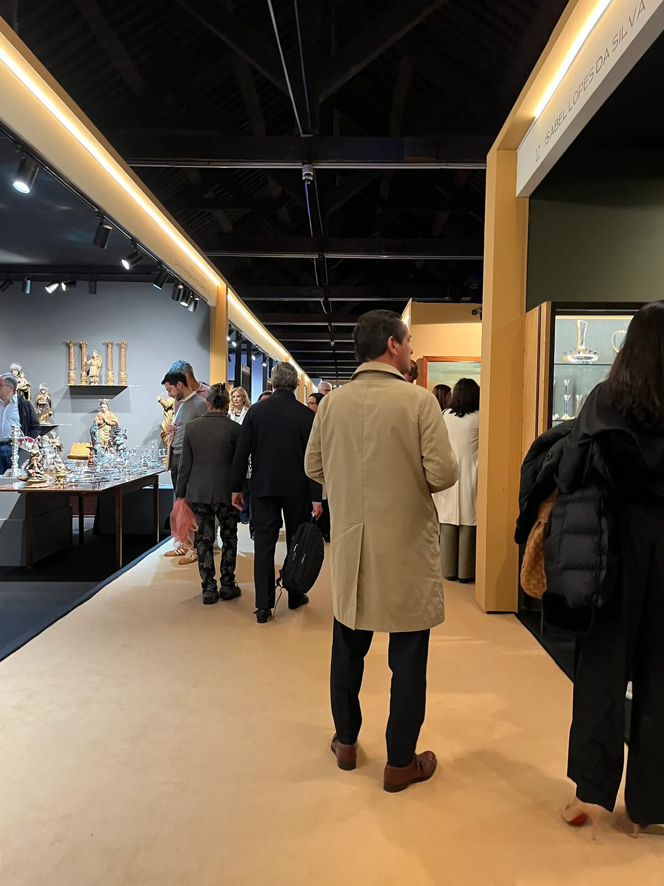
O acidente de não puder ser feito inteiramente de ouro e até o vinho tornar em ouro. Nunca beberam ouro? Tem sabor ao investimento mais seguro na atual conjuntura em que caímos nos mercados financeiros. Talvez até a coisa velha seja um bom investimento, talvez engula dinheiro para devolver mais ainda logo de seguida. A coisa velha, é, portanto, uma gosma de ouro. Quem se perde com qualquer preciosismo ou hesitação, despreza a oportunidade de obter algo verdadeiramente precioso… a ver, não o objecto inacessível a quem não venda prédios, mas sim uma espuma que doura toda a realidade física ou outras que possam vir a surgir; a psicológica importa só a quem tem uma cabeça. Os restantes acéfalos tomam banho de lava, vivem de beber plasma e comer rocha vulcânica. Com este lifestyle evidentemente que o corpo desenvolve-se e move-se qual cauda de lagarto arrancada sem pedir.
Podíamos viver da conversa. Passavam-se faturas à amena cavaqueira, as palavras surripiavam-se como se explodem multibancos e as sibilantes cortavam tipo shuriken. Neste sentido, a tarde que vem após a tarde tanto que facilita a rotunda de pensamentos expressos bem alto a que se chamou socializar. De imediato a maravilha dos indivíduos poderem olhar sem falar torna-se em falar sem olhar e o arrependimento desaparece como a felicidade cresce, exponencialmente. Aqui consideramos, um pouco por defeito, como simples estratégia de evitar a morte, talvez até aceitar a vida como pouco mais do que isto, conversas na noite.
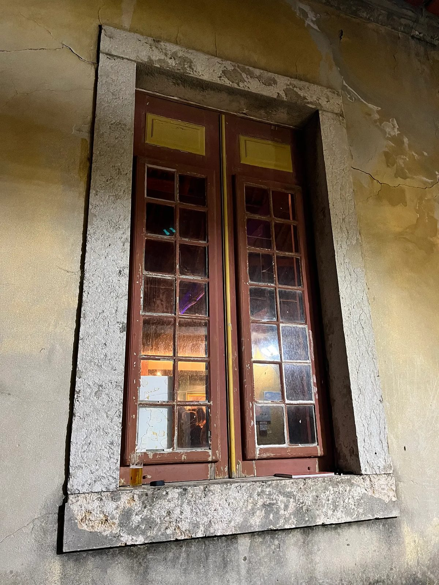
Os nossos bolsos ficaram vazios porque entraram vazios, mas todos os objectos de arte desapareceram pois os nossos pensamentos absorveram-os, com uma dedicação inédita e crucial aliás, para semelhante evento agarrar-se às cordas e não se afogar. Um dia, a postura mito-poética da nossa reportagem será valorizada como, vá, o nec plus ultra da expressão escrita no século XXI, após a criação do malfadado texto automático (aquele que nasce sem Pai nem Mãe nem Cão). Mas primeiro, os Croatas!
Onde andam os Croatas! Que os Croatas nos salvem… que os Croatas invadam os quartos de banho e levem todos os espelhos, todo o mármore, que façam espelhos de mármore ou mármore espelhado. Fundamentalmente, que levem os espelhos para que nunca mais tenhamos de olhar para o nosso corpo tão derretido que a pele passa de ser carvão para uma substância eminentemente maleável e grita, grita quando o Croata puxa pela maldita sanita, queremos dizer, pela maldita Santa, Nossa Marmórea Senhora dos Espelhos. Ela nunca se esquece, a coisa velha por excelência, a melhor antiguidade de todas, a única que trouxemos, expusemos e levamos de novo para o cofre no centro da terra.
On 06/12/2025, QV was invited to the Ensemble KMW performance of Morton Feldman’s Crippled Symmetries (1983) in the historical Villa Elisabeth in Berlin.
Crippled Symmetries - Ensemble KNM Berlin @ Villa Elisabeth [fragments]
Infinite Worlds and Vectors of Enlightenment via Morton Feldman
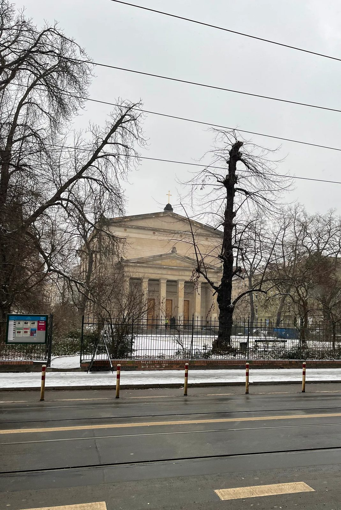
What will happen to the infinite worlds we might inhabit? All the residue of unbeknownst structures will not provide a blueprint for tracing some interior durations running in parallel, otherwise the thickness of time risks becoming much too apparent… Surely any LLM trained on sufficient relevant material can predict a thousand possible futures for our Kali Yuga and yet none will ellucidate us better, none will display these faraway unimaginable futures better than music and a specific type of music at that: a holy assemblage of tones in an extremely predictable order.
In Villa Elisabeth that day, the room itself thought through each reverberation and it was plain to see how an inhabited space is never neutral. It absorbs and remembers, it gives back what it has stored at angles one did not anticipate. Few modern composers foresaw these vectors of enlightenment. Morton Feldman engaged with them, in his own desultory way.
The horizon is always unreachable hence a positive exponential expansion of whichever path you might be taking is superfluous. The only way to respect that is through repetition, while being very careful to ignore the bubbles of true perdition. This post-inflationary mode of doing things is rather frowned upon, especially in music. People usually prefer sounds that grow, sounds that suddenly stop, sounds that progress or even digress. So somehow to be truly daring in music is not some New Complexity à la Ferneyhough but possibly just repeating every sound, and hoping that the resonance that ensues can shed some light on the mystery of our lives.
No dia 20/04/2026, a QV teve a oportunidade de testemunhar o concerto de Tortoise na Culturgest.
Manifesto do Aeviternalismo - Tortoise @ Culturgest
Desenterrar a nova eternidade feita palavra à-propos de Tortoise
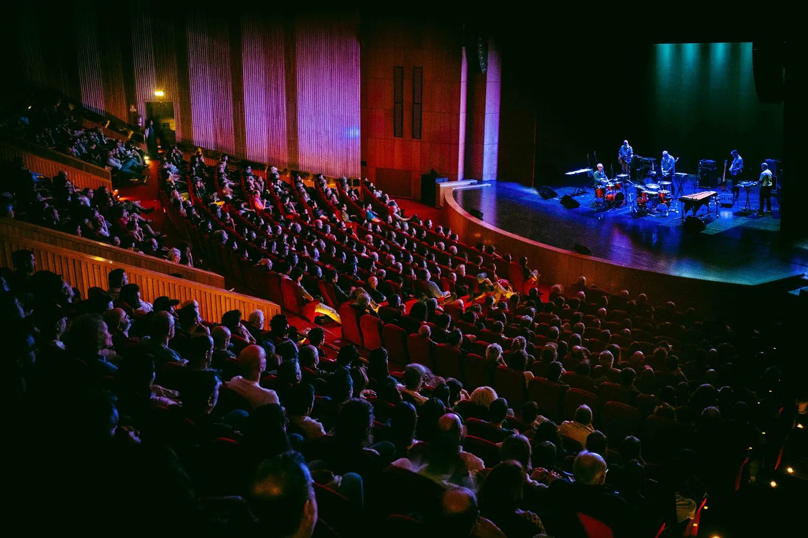
Foto por Vera Marmelo
Os vales da nossa ascensão polvilhados de todo o tipo de sempiternos, o humano que convive com o dinossauro que convive com o mamute que convive com o anfíbio, todos os seres num só espaço a produzir o mel da perpetuidade, que serve de condutor das muitas consciências fantasmagóricas que pobres coitados, a larga maioria, anda naquela horrível rotunda de Viseu também conhecida por samsara. Mas nós, os da biblioteca negativa, nós, os que não precisam de meter gotas nos olhos, somente obcecamos acerca da permanência nesta terra e o quão parada ela é e um eterno aborrecido e o inferno existe e é este, já. Cabe a nós saltar e odiar o que é imóvel, o que pára de viver, o que cessa o normal decorrer da pachorra tão nossa. Nem é preciso grande coragem para trilhar semelhantes pensamentos, a liberdade faz por acontecer. Move-te, move-te, move-te. Não se medita sobre a lei divina, corre-se sobre ela. Estas distracções mundanas das cidades são fogo branco de vista. Serão?
Agradecemos aos vales a amizade prestada ao nosso matrimónio com a nova escrita. Aquela que ignora, ou mesmo despreza, a putativa objectividade, expulsamo-la do nosso reduto, onde só entra quem poesia escreve, onde só permanece quem vive poesia. Chamemos-lhe humildemente o gesto do anjo, a maneira delicada como se coloca um dedo na mão de um rei que dorme; ou um órgão feito das árvores dos mais perfeitos tamanhos; ou uma túnica que se desfaz quando é vestida pela pessoa adequada; ou as fisionomias das esculturas que revelam como as épocas se comportavam. Enfim e nós restringidos pelas ferramentas de agora. Ao menos situamo-nos a-historicamente.
Hold infinity in the palm of your hand
And eternity in an hour.
Nisto, Tortoise serve como call to arms, na sua enormidade plácida diríamos mesmo melíflua, construída em Chicago, agora vivida em Lisboa e provocadora de uma mudança gestalt nos nossos corações. Foram 1000 acidentes de carro provocados por esta música que induz em transe. Nem pensei que fosse possível ouvi-los ao vivo, que só existissem naquele donut compacto que se força na aparelhagem. Como o campo que se vê pelas janelas de um mosteiro, vimos através das vozes não-existentes de Tortoise… caiu-nos do bolso um certo gosto pela permanência ou paz.
Lágrimas amarelas e doentes que saltam do ar para a cruz, bate a rocha na madeira, faz da terra o amor. Surgem músculos e veias que se apoderam da infraestrutura circundante. A vida come a cidade, a população desespera sem saber onde comprar papel higiénico, iogurte ou uma torradeira nova. Acabou, todos somos da mesma carne, ninguém respirará a mais, só na medida certa. Um único corpo que labora para que nós, agora engolidos, vivamos e bem. A perfeita disciplina, os corações em silêncio. A vossa colaboração não é necessária, mas se cederem terão a vida facilitada. A morte desapareceu e um único organismo faz por todos aqui no planeta Terra. Os outros planetas pingam de inveja. A humanidade está concluída.
From 9th April to 12th April 2026, QV was invited to the magnificent 15th edition of the Rewire Festival in Den Haag, Netherlands, catching Tortoise, Jim O'Rourke & Eiko Ishibashi, Sumac & Moor Mother, Xiu Xiu and Einstürzende Neubauten at Amare; Drew McDowall at the Grote Kerk; Apparitions, Aaron Dilloway and 33 at Het Spui; The Bug & Dis Fig at Paard; Meetsysteem at Koorenhuis; a talk by Kode9 at The Grey Space in the Middle; and Brandon LaBelle's installation The Other Family at Page Not Found.
O Ruído e Nós/De Grote Ruis en Ons - Rewire 2026
por AA [PT/NL]
Os hipsters evoluíram, optimizaram-se, algoritmizaram-se. O seu gosto colectivo refinou-se, e os vestígios da sua antiga e familiar cultura indie-rock tornaram-se apenas um entre muitos tópicos obsessivos de conversa. Ou talvez tenham simplesmente envelhecido? Provavelmente já não lhes interessa tanto o que os putos fixes de agora andam a ouvir - as suas tendências de nicho já cristalizaram há muito tempo e têm cult classics suficientes para encher uma vida inteira.Todas as novas interpretações das tradições underground surgem na internet, por isso, como variantes “desconstruídas” de estilos de tempos passados. O festival Rewire é o lugar ideal para explorar esta curiosidade musical aventureira, destinada a esta ramificação refinada, mas ambígua, dos ouvintes de música. Era a minha primeira vez e fui sem quaisquer expectativas. Não por cinismo, mas porque aprendi da forma mais dolorosa a não me entusiasmar demasiado com os festivais, pois isso só prepara o terreno para grandes desilusões.
Vesti uma roupa estilosa, mas não demasiado chamativa, e parti em direção a Haia, Zuid-Holland. Foi lá que encontrei o AntonBogdanov, um amigo próximo meu da Rússia que conheci na vida noturna de Lisboa, e com quem tive o prazer de passar o resto do festival. Ele tinha voado especialmente para a ocasião desde Portugal, onde vive há 5 anos. Estava extremamente entusiasmado com estes dias especiais num país onde nunca tinha estado antes. Pode-se dizer que o evento de quatro dias ocupava um lugar muito alto na sua lista. O seu nome vai aparecer várias vezes neste texto, pois não foi apenas o meu companheiro, mas também uma fonte de inspiração para este pequeno texto. Poderia pensar-se que a sua vinda de tão longe era uma honra para os organizadores e artistas do Rewire, mas este tipo de intercâmbio cosmopolita é na verdade bastante típico neste ambiente, e provavelmente não os teria impressionado muito, mesmo que soubessem dele.
O festival estava cheio de avant-gardistas internacionais e de freaks de ambient-noise com tote bags - maioritariamente europeus e americanos, com aqui e ali um asiático de leste. (Afinal, esta combinação de origens forma o maior grupo de consumidores deste tipo de eventos marginais). Até cheguei a falar com um tuga ou dois. É, no entanto, uma margem mais limpa e arrumada: uma versão mais cuidada e mais culta do rocker de contracultura emancipado. Mas isso era de esperar, dada a natureza poética da estética musical. Ainda assim, é fascinante — e até um pouco emocionante — ver que tipo de pessoas aparecem num festival de música experimental. “Serão todos eremitas? Ou mais uns excêntricos burgueses?” Uma questão dicotómica que criei para mim próprio, para manter as coisas simples. Acho que me colocaria algures no meio dessa linha.
Logo à chegada à estação Den Haag Centraal, tive logo uma boa impressão do público do festival— pensei que os tinha identificado imediatamente. Ou seriam apenas pessoas fixes da cidade? Na verdade, era difícil distingui-los, pois não vou muitas vezes à Randstad.
A diferença tornou-se mais clara à medida que me aproximava do local principal, o Amare. Eram um pouco mais arrumados do que os outros hipsters urbanos, e pareciam, de um modo geral, ter uma atitude bastante humilde e inteligente. Achei a dose de hipness realmente notável, especialmente nas pessoas que pareciam ter vindo apenas pelos atos de ambient. Notava-se que anos de exposição aos algoritmos experimentais do Silicon Valley tinham feito o seu trabalho nos nossos companheiros de festival. Não me recordo se, nos tempos pré-COVID, as pessoas nos festivais como o Le Guess Who ou o Primavera Sound tinham este ar tão dripped-out.
Tal como eu, o Bogdanov reparou logo no alto nível de swag. Disse: “Sinto-me mesmo um gajo normal e ordinário aqui” — com as suas calças de ganga azuis banais e o casaco de trekking da Patagonia. A moda sensual foi ainda acompanhada por perfumes fortes de companhia aérea dos anos 2000 — a instagramização das artes estava completa, e em abril de 2026 tínhamos, sem dúvida, atingido um pico aqui. (Para quem estiver a ler isto em 2046.)
Amare em Den Haag (foto de Laura van der Spek)
Começámos a tarde de sexta-feira com uma ganzinha holandesa e uma Duvel belga — servidos num dos muitos bares do festival. Este foi o aquecimento proposto pelo Bogdanov: ele tinha passado a noite anterior em Amesterdão e estava entusiasmado por partilhar comigo as suas compras da variedade vegetal. Eu já não fumava erva há algum tempo, por isso o charro levou-me imediatamente a um estado enriquecido de inspiração.
A primeira atuação da nossa lista era Tortoise, decisão que tomámos por unanimidade. Mas antes de o concerto começar, tivemos o prazer de preencher o início da tarde com uma das muitas “talks” que faziam também parte do programa inicial. (Na verdade, ainda não havia música a esta hora.)
Caminhámos pela Chinatown de Haia (uma espécie de Martim Moniz, mas com prosperidade) em direção a um palco chamado The Grey Space in the Middle, um nome bastante fixíssimo para um espaço, disse eu. Ao que o Antonrespondeu: “Na Rússia todos os sítios são grey.”
A conversa foi conduzida pelo pioneiro escocês do dubstep (a versão fixe, não confundir com aquela xungaria do Skrillex — uma diferença subtil mas importante entre os dubheads) Steve Goodman, mais conhecido pelo seu nome artístico Kode9 e pela sua label notória. O homem falou, entre outras coisas, sobre o terceiro olho, ou seja, a voz interior, e as suas várias manifestações orientais. (A variante taoísta foi dada como um exemplo). Num determinado momento disse “I don’t want to get too convoluted”, mas isso não o impediu de continuar a complicar as coisas na mesma. Ao fim de cinco minutos, olhámos um para o outro e decidimos sair da sala. “Eu não sou suficientemente inteligente para esta merda”, disse o Anton. Comigo também não estava a resultar. Percebo que as “tradições interiores”, como ele lhes chamava, possam dar uma perspetiva refrescante ao nosso quotidiano ocidental, profano e secular, mas simplesmente não era nem o lugar nem o momento certo para aquele tipo de conversa existencial. (Embora, claro, pudéssemos ter antecipado que isto iria acontecer.) No entanto, tenho de admitir que a ligação que o Kode9 fez entre gatos e a meditação da solidão teve o seu quê de humorístico. Ele afirmava que o ronronar dos felinos pode induzir um estado de profunda paz interior, graças às frequências que o nosso hipotético animal de estimação produziria (–1 ponto para quem curte de cães).
Reparámos tanto eu como o Bogdanovque a entrevistadora não era “native speaker” e que o seu domínio menos fluente da língua franca limitava bastante a sua intervenção. É certo que o Steve era anglo, mas não era nada de anormal ouvir grupos de festivaleiros a conversar em todo o tipo de sotaques esquisitos ingleses. Por um lado, é claro que é prático, mas por vezes cria situações absurdas quando se ouve estes europeus bilíngues, ou até trilíngues, a falar sobre os temas mais introspectivos e intelectuais da vida. Dizíamos um ao outro, num tom meio irónico: “Tudo bem, os americanos podem ficar com a língua franca, já que todos a falamos na mesma, mas temos de ter cuidado com o que lhes damos a mais! Eles não podem ter tudo!”
Em seguida, levantámo-nos e fomos em direção à primeira de muitas atuações americanas que iríamos ver no festival: Tortoise. Escrevo este pequeno trecho sentado numa escada nos corredores da sala principal do Amare, enquanto ao fundo as lendárias figuras do post-rock progressivo tocam um tema que soa como se tivessem posto uma banda sonora de Ennio Morricone a tocar com, por cima, aqueles upstrokes afiados de guitarra reggae (também conhecidos como skanks ou ska strokes, para quem sabe). Tinha decidido antecipadamente escrever o máximo possível com caneta e papel, para passar menos tempo a mexer no computador que trago no bolso. Seria mais orgânico andar com um pequeno caderno de notas, assim os sumos criativos podiam vir à tona de forma mais primitiva, disse para mim mesmo.
Era a segunda vez que tinha o prazer de ver os Tortoise ao vivo. A primeira tinha sido no Porto, mas o meu eu de 17 anos não tinha ficado particularmente impressionado com as sensibilidades jazzísticas — um elemento que, desde o álbum “TNT”, se tornou indispensável no som deles. O meu eu adolescente, naquela noite de verão de 2016, na verdade só ansiava pelos artistas que tocavam a seguir no mesmo palco: Drive Like Jehu. Uma banda que, para mim, tinha tornado aquela noite (hoje nostálgica) verdadeiramente completa. Dez anos depois, e os Tortoise voltavam a ser uma banda bastante cansativa de ver ao vivo. Uma coisa é certa no que diz respeito a estes rapazes sensíveis e introspectivos que, 30 anos depois do seu auge, ainda tocam numa banda de culto: ou ficam grisalhos, ou ficam carecas. Dito isto, o segundo álbum deles, Millions Now Living Will Never Die (1996), terá sempre um lugar especial no meu coração. As influências de jazz ainda não eram tão marcantes naquela altura, e durante a minha adolescência nunca tinha ouvido algo tão tranquilizador dentro dos limites no que diz rock. “There’s too much war in this world! I know it sounds corny but it should be said! Let’s get corny!” ouviu-se a partir do palco. Um deles quebrou o silêncio da banda antes de começarem a última peça. Sobretudo a última frase desta declaração ficou-me na cabeça e, durante os restantes dias do festival, foi muitas vezes parodiada por mim e pelo Bogdanov.
“Fez-me lembrar uma jam de sala de estar, e nós, o público, estávamos simplesmente ali por acaso, a assistir.”
A noite continuou com o segundo nome relevante em relação a Chicago, mas não menos digno de nota: Jim O’Rourke, um homem multidisciplinar que entretanto já explorou praticamente todos os cantos do submundo musical floral. Nessa noite, fez-se acompanhar pela sua colaboradora mais recente, Eiko Ishibashi, uma querida da electroacústica japonesa que, tal como Jim, tem uma discografia bastante prolífica. Tinha percebido que o O’Rourke, natural de Illinois, vive atualmente no Japão, por isso deve haver uma relação com isso. Esta dupla homem-branco/mulher-asiática revelou-se, sem sabermos na altura, a primeira de muitas parcerias artísticas (e talvez algo mais?) semelhantes que iríamos ver nesse fim de semana.
Ao longo dos anos, foi sobretudo o trabalho de guitarra do Jim que me marcou; o seu disco Bad Timing, de 1997, continua a ser, para mim, o ponto mais alto da carreira deste ser produtivo excêntrico. O set que o duo apresentou consistiu em Jim, completamente ensimesmado, a produzir bleeps e bloops com um sintetizador e alguns pedais comuns. Fazia-o numa postura confortável, vestido com uma camisola de inverno aconchegante, um bucket hat e uma barba grisalha cheia. A japonesa produzia, com a sua flauta, pequenos sons dissonantes que depois transformava em loops eletrónicos mordazes. Fez-me lembrar uma jam de sala de estar, e nós, o público, estávamos simplesmente ali por acaso, a assistir. Pareciam bastante próximos — pergunto-me se o Jim já fala japonês. Ou será daqueles “expats” teimosos que só querem falar inglês com outros gaijin? Haverá alguma coisa entre os dois, afinal? Imagino que não tenha sido o único a fazer essa pergunta.
Ah, e também achei que havia tralha a mais em cima da mesa — o que é que vais fazer com aquilo tudo, pá? O ruído tava até tava meio podre, mas não de uma forma interessante. Custou-me manter a atenção e só me apetecia ir beber mais jola nativa. Cheguei à conclusão de que O’Rourke tinha alcançado um estatuto lendário único, mas mais do que merecido, o que lhe dava a liberdade de fazer exatamente o que quisesse. Ou seja, ganda respect, boss.
Saímos da sala e seguimos em direção à grande igreja no centro de Den Haag. Para chegar a este local sagrado, tivemos de atravessar hordas de gente em saída de sexta-feira à noite — urbanos a encherem-se de bebidas alcoólicas e de cigarros entretanto demasiado caros (13 paus para um maço nesta porra), a falar das suas vidas agitadas e dos pontos altos da semana. Às vezes é fácil ficar completamente alienado do típico ser urbano, sobretudo quando te rodeias apenas de tipos artísticos meio avariados que só ouvem os blips mais obscuros em vez dos DJs de yacht como Martin Garrix. Claro que há muito a dizer sobre todas as formas de arte que existem entre esses dois extremos, mas o contraste era bem palpável quando eu e o Anton passámos das esplanadas de clubes de Den Haag pelas portas de madeira da igreja, onde Drew McDowall (ex-Coil & Psychic TV) substituiu o ruído público de deep-house da rua por algo que parecia ondas de encantamentos sonoros intermináveis. Este era o nosso evangelho. É mesmo aqui que pertencemos.
Uma das melhores tradições contemporâneas dentro do mundo drone/ambient continua a ser esta recente aceitação no circuito de concertos em igrejas, e é ótimo que o Rewire Festival também possa tirar partido disso. Os visuais de Pedro Maia, aliás, eram de uma natureza puramente transcendente e encaixavam na perfeição na massagem sónica de McDowall. Isto é arte feita para — e por — seres obsessivos e românticos.
Drew Mcdowall, Grote Kerk (foto de: Charlotte van de Gaag)
O último gig da noite, pelo qual toda a gente estava em pulgas, foi o Oneohtrix Point Never — Daniel Lopatin, o verdadeiro mestre dos bleeps e bloeps. Acho que já não precisa de apresentação: depois de uma série de álbuns muito acarinhados como R Plus Seven, Replica, e — quem é que ainda se lembra do seu alias pioneiro do vaporwave, Chuck Person? Também conheceu bastante sucesso com as bandas sonoras para os, igualmente “na moda”, filmes dos irmãos Safdie brothers. Gosto mesmo de OPN, a sério, mas, para minha grande pena, não consegui estar presente.
Nessa noite fiquei em casa de amigos em Rotterdam, uma das outras cidades desprovidas de alma da Randstad, e pelos vistos não havia nenhuma ligação de transportes públicos que me permitisse ver o OPN e chegar à cama na mesma noite. (os riscos de ser escravo de transportes públicos). Despedi-me com amargura do Bogdanov depois de ele me dizer que o Lopatin também é russo. O Antontinha-me prometido que, no dia seguinte, diria que o concerto tinha sido uma valente porcaria — mesmo mau. Assim, talvez conseguisse lidar melhor com a minha dor do FOMO. Hordas de hipsters enchiam o Amare enquanto eu tirava a minha mala do cacifo e, de olhos no chão, caminhava para a saída com ar derrotado…
“Lembro-me de a minha mãe me ter dito, antes de eu ir para o festival, para não ser demasiado duro na crítica deste texto…”
Depois de uma boa purga, voltei a encontrar o Bogdanovno dia seguinte, por volta de uma hora decente — cerca das 15h. Desta vez saltámos completamente as talks e decidimos ir ver uma das instalações artísticas. O Anton é um russo relativamente calado e introvertido, mas quando se trata de sair à noite, aos 30 e tal anos ainda aguenta até de madrugada — e no Rewire Festival não fez exceção. Disse-me que a vertente dos clubes tinha sido bem conseguida, incluindo o DJ set de Kode9, o “homem-gato com o terceiro olho”. Mas, mais importante ainda, acrescentou: “Servem cerveja em todos os palcos, pá. Até na igreja havia cerveja, foda-se.”
Bogdanova curtir à grande numa igreja haguiana
Chegámos a um sítio chamado “Page Not Found” — fora do contexto do festival, parecia uma daquelas livrarias urbanas pseudo-ativistas, do tipo que poderia existir em qualquer cidade europeia, todas mais ou menos iguais, onde se compram zines poéticos de mesa de café (limitados a 150 exemplares) pelo mesmo preço do café que lá bebes. Perguntei à barista fofa onde podia encontrar “The Other Family”, de Brandon LaBelle — ainda não tinha conseguido identificar a obra que me tinha levado ali. Ela indicou-me o exterior da livraria, para o passeio. Respondi com um: “ohhhhh, claro!” — mas não estava minimamente preparado para a monstruosidade que estava prestes a ver. Tinha enviado uma fotografia da obra ao meu amigo Gui, e ele jurava que um sem-abrigo esquizofrénico tinha ali deixado o seu magnum opus. Lembro-me de a minha mãe me ter dito, antes de eu partir para o festival, para não ser demasiado duro na crítica deste texto, e para não ser excessivamente cínico durante a visita (estou mesmo a tentar, mãe!). Por isso, quero pelo menos agradecer ao artista pelo esforço que colocou nesta obra. Seja como for, esteve simplesmente entregue à sua arte — e isso é, por natureza, um gesto nobre. O artista pode agradecer à minha mãe pelas contagiosas vibes de #staypositive que ela consegue sempre transmitir, mesmo quando não está presente — nisso, sinceramente, ela é mesmo boa.
“The Other Family” de Brandon LaBelle
Decidimos dar uma oportunidade a um novo nome, que não conhecíamos. A nossa primeira “aposta” do festival: uma banda chamada Apparitions. De antemão sabíamos apenas que teria algo de drone e algo de metal. E com isso já nos tinham conquistado — somos ambos grandes apreciadores de Sunn O))), mas quem é que não é, né? “Já viste o documentário novo dos Earth? O Carlson é mesmo um bacano. Um gajo mesmo puro.” perguntou o Anton. Os Earth, provavelmente dos primeiros a apostar a sério neste tipo de som, juntamente com os Melvins no seu disco de drone maníaco Lysol. Esperávamos, com esta aposta, descobrir novo talento dentro da tradição do heavy metal extremamente lento.
O trio americano começou a tocar, e ficou logo claro que estávamos perante uma espécie de abraço às artes negras. Desenrolava-se uma meditação corajosa entre artista e público. Mas faltava ali qualquer coisa. Para mim, podiam ter esmagado mais o público com a sua arte da escuridão. Gostava que o som tivesse tido mais peso do que aquele que ainda sentia, cinco minutos antes, a caminhar entre os enormes edifícios de betão cinzento de Den Haag.
Depois do concerto, ficámos um pouco à conversa em português com Igor Imbu, responsável pela componente eletrónica no palco — um brasileiro inteligente que hoje em dia (também) vive em Chicago. (aparentemente uma espécie de Meca para músicos experimentais). Achámos que as partes dele tinham sido as melhores do set, mas não tive coragem de admitir que a bateria do colega — muitas vezes um pouco rígida demais — ficava aquém. Era contido em demasia; o baterista não estava propriamente a “sentir a cena”.
Apparitions, Het Spui (foto de: Sabine van Nistelrooij)
Já estávamos outra vez a beber Duvels diabólicas numa das muitas zonas de restauração do festival, e foi aí que conhecemos o Olivier — um outro visitante que estava a dormir numa tenda durante a sua cruzada de três dias. “Ya, pá… numa tenda mesmo… vê lá esta foto, haha. Assim num parque qualquer… atirei a mochila para um buraco, enterrada bem fundo. Ya, não tinha dinheiro para hotel, pá… sabes quanto isso custa?” Era um flamengo que tentou entrar nada menos do que três vezes na academia de artes em Ghent. Tens mesmo de gostar de arte para isso, pensei. Felicitámo-lo pelo feito, mas ele já estava no terceiro ano. “Foram ver o weed420, bro? Aquilo foi do caralho meu…” disse o Olivier. “Não, pá, infelizmente. Mas tomas aqui uma weed fodida.” respondi. “Nãooo pá, não vou fumar e beber sozinho, isso é esquisito.”
Ficámos meio confusos e começámos a discutir o assunto. Porque é que não se pode desfrutar sozinho de um copo ou de um charro? E como é que isso é mais estranho do que, por exemplo, dormir numa tenda no meio de um parque metropolitano, como um mendigo? Acabámos por convencê-lo e ainda lhe pagámos uma cerveja. Bebemo-la de forma harmoniosa com duas outras desconhecidas — um par de dinamarquesas estilosas, igualmente mergulhadas até ao pescoço nas artes. Sentaram-se connosco. Ficaram ali a chillar. Tivemos uma longa conversa sobre um dos traumas religiosos evangélicos da infância de uma delas. Depois contei que a minha irmã tinha decidido recentemente converter-se a uma igreja protestante semelhante e que, entretanto, também tinha engravidado. “O ciclo do trauma continua…” disse ela com um olhar triste e resignado. A outra queria muito partilhar que tinha sangue Sami e que o dono da editora dela é um polícia. “Ele lança os nossos discos de noise porque temos uma mensagem anti-polícia forte, hihi… estilo ACAB, tás a ver? acho que ele usa a nossa música como material de masturbação.”
Estas sagas de noise dinamarquês só vieram à tona depois de ter consumido umas birras e cigarros, porque ao início parecia bastante reservada. Já tinha tido contacto com esse tipo de estética BDSM no noise, mas quando ela mostrou algumas capas de álbuns fiquei mesmo impressionado. As habituais gagballs, chicotes de couro preto e mulheres a serem penetradas por dois homens ao mesmo tempo. Conteúdo relativamente gráfico, portanto… agora percebi porque hesitou tanto no início em partilhar o projeto. (Ganhei a confiança dela ao mostrar a minha t-shirt dos Iceage, uma banda de punk dinamarquesa, que tinha vestida por baixo do meu casaco) “Ninguém ainda fez rip digital disto”, disse ela. “Só existe em formato físico — isto é mesmo underground shit a sério, nada daquelas merdas poser do Bandcamp.” Como é que alguém pode não respeitar isto?
“Tu deste mesmo rizzà loira, meu”, disse o Bogdanovmais tarde. Ele já tem 34 anos, mas ainda tenta acompanhar o vocabulário de zoomerspeak— mas ele faz-o sem exagerar, porque isso já seria cringe. Achámos piada à loira, mas não era propriamente atraente. Gostei mais da outra com cabelo castanho, a do trauma religioso. “Ficas tu com a da gagball, está bem?” sugeri, meio oportunista — mas o Anton recusou, o gajo é fodido.
Falando em noise, voltámos a entrar no Spui, desta vez com a nossa nova companhia dinamarquesa, e fomos imediatamente saudados pelas linhas de diálogo ruidosas de Aaron Dilloway. Eu conhecia vagamente algumas das suas cassetes e já tinha desfrutado do seu trabalho aqui e ali, mas não fazia ideia do que me esperava. O homem teve direito a atuar duas vezes no festival, e com toda a razão, pois o set foi nada menos do que magistral. A natureza abstrata deste tipo de “arte partida” pode muitas vezes falhar redondamente; continua a ser um ofício arriscado. Mas, nas mãos de alguém que consegue manter-se ligado à sua voz interior, sem abandonar essa meditação durante o espetáculo, pode resultar nas expressões sónicas mais comoventes. High risk, high reward.
A narrativa consistente que Dilloway conseguiu trazer ao seu set era comparável à leitura de um poema existencial e romântico. Havia uma história contínua, e o Aaron conseguiu levar-nos, com sucesso, a diferentes lugares do seu domínio. É para este tipo de coisas que se visita um festival como este: para ver as experiências sonoras mais brutas e nobres serem bem-sucedidas. Por isso, tiro-lhe o chapéu! É mesmo isto.
Aaron Dilloway, Het Spui (foto de: Wouter Vellekoop)
“…para muitos é uma dinâmica coordenada, um ritual de humilhação curativo, por isso, que se lixe?”
A noite manteve uma nota sombria e continuámos com Sumac & Moor Mother. Ora, não conheço muito bem nenhum dos projetos, mas os Sumac ficaram-me na memória desde a adolescência. Na altura, tive uma fase rápida, mas intensa, de obsessão pelo Aaron Turner (Isis, Old Man Gloom e, recentemente, também Neurosis), em que tinha de explorar todos os cantos dos géneros para gajos da pesada “reformados”.
O primeiro disco deles com o Keiji Haino foi provavelmente o que mais me impressionou. O concerto começou bem; eu e o Anton abanávamos a cabeça ao som dos grooves todos bluesy e sujos, pelos quais o supergrupo é conhecido desde a sua origem. Vieram-me à cabeça imagens de um fragmento do impressionante documentário dos Old Man Gloom (“Here Is a Gift For You”, de 2014) — outro projeto afiliado a Turner (e um supergrupo igualmente lento) - onde a gigantesca Zozobra, uma estátua folclórica de madeira com 15 metros, é incendiada de forma ritualística no meio de Santa Fé, New México. No documentário, as imagens são acompanhadas pelo Aaron e membros de bandas como Cave-In e Converge a darem tudo num palco americano. Na altura, era uma abordagem fresca à fusão de punk e metal, antes de isto se tornar uma mistura óbvia (no tempo em que ainda podias ser bastante odiado se ousasses juntar estes dois mundos).
Infelizmente, fui arrancado desta hipnose de groove nostálgico assim que a Moor Mother abriu a boca. Quem é que deu um palco a esta velha, pá? Estou de repente numa noite de slam poetry de Brooklyn ou quê? Para tornar o pesadelo febril ainda mais insuportável, ela mandou pelo meio um insulto casual a todo o povo neerlandês: “Quem aqui é holandês?”, seguido de um rápido: “I don’t fucking care!” — muito subtil, ò mãe moura. É preciso mesmo conseguir entender as nuances para apreciar esta piada. Depois, ela bradou: “Quem aqui ainda tem esperança?” Tivemos apenas 2 segundos para reagir antes de ela voltar a pregar: “Isso significa que todos os outros não querem saber!” Bem, se calhar queremos??? Eu não tenho reflexos assim tão rápidos, Mãe Moor. Para aumentar ainda mais a ambiguidade do seu discurso, ela disse: “Eu tenho esperança pelo MEU povo. Não pelo VOSSO povo.” Ah, ainda bem que esclareceste isso, mãezinha. Ainda estava a achar as tuas declarações bastante abertas a interpretações e isso gerou alguma confusão. Espero que nessa noite tenhas conseguido lucrar muito com todos os teus fãs holandeses, dado que, afinal, não estavas disposta a partilhar nada do teu verdadeiro eu. Compreendo que queiras defender o teu povo, mas se fosses honesta contigo própria, entenderias que estás simplesmente a usar estas pessoas para o teu próprio ganho narcisista. Portanto, da próxima vez, não o apresentes de forma altruísta e heroica; isso é bastante falso e passé. Por outro lado, muitos daqueles betinhos brancos que viabilizam os teus espetáculos querem precisamente ser usados; para muitos é uma dinâmica coordenada de escravo-e-mestre, um ritual de humilhação curativo, por isso, que se lixe? Podes ficar com esta, vá.
A Mother continuou depois com a sua melhor imitação de Zack de la Rocha, enquanto os rock and rollers grisalhos produziam feedback em sincronia, e eu… eu senti subitamente o impulso de me desculpar ali mesmo por todos aqueles escravos africanos que os meus antepassados possam ter tido, pá! Isso não se faz, pá!!! Mas, piadas à parte, já chegámos uns 10 anos atrasados para estas questões de guerra cultural; vivemos no fim da cauda dessa polémica. O cansaço coletivo em relação a estas merdas já se instalou há muito e, além disso, outros críticos de arte em solo holandês já o fizeram muito melhor antes de mim — refiro-me principalmente aos KIRAC, com a sua crítica afiada à arte visual contemporânea. (Onde é que anda o filme do Houellebecq, meus putos?)
Seguimos para Xiu Xiu. Mais um projeto de culto. Mas sim, o programa está apinhado deste tipo de atos e, de qualquer forma, já tivemos de fazer vários sacrifícios desde que aqui chegámos. Portanto, não foi propriamente fácil ir à caça de novos talentos quando nunca tinhas visto uma banda infame como os Xiu Xiu ao vivo. Embora eu gostasse de ter conferido mais carne fresca. Secretamente, esperava sobretudo a oportunidade de presenciar um dos ataques de fúria do Jamie Stewart ao vivo: https://packaged-media.redd.it/rvboftlgs50e1/pb/m2-res_480p.mp4?m=DASHPlaylist.mpd&c=wh_ben_en&var=sgpssan&v=1&e=1776823200&s=07a79ad44d2840691ad73afa12874d55bf5d2bf (Grande lol).
Foi o nosso segundo concerto de um par “homem branco e mulher asiática”. “Tens mesmo de deixar crescer o cabelo e arranjar uma miúda japonesa para começares uma banda de noise”, disse eu ao Anton. “Sim, boa ideia. Não tenho tido muita sorte com os meus barbeiros recentes, mas agora vou simplesmente deixá-lo crescer, de facto. Não é nada uma má ideia, pá”, respondeu ele com um ar de quem diz blyat a cada duas frases.
Para este espetáculo tínhamos arranjado uns lugares sentados, no topo do Amare, queríamos vivê-lo de uma forma mais patrícia. O Stewart e a Angela estavam juntos numa mesa e pareciam mais fixes do que nunca. Aqueles gajos são mesmo fodidos, sabes? Ainda têm aquele swagger de rock’n’roll que muitos dos seus contemporâneos já perderam há bué. A Angela, ainda por cima, apareceu com uma gravata preta com uma blusa branca — que gaja fixe, pá. Estes tipos estão literalmente a cagar para toda a gente, tipo fuck it, mesmo. Claramente é malta que ainda fode, malta sexo-positiva, sabes? O duo esotérico-romântico decidiu nessa noite fazer uma ode ao filme Eraserhead, conhecido como o filme de culto de estudantes de David Lynch. E é unanimemente visto como um clássico por aqueles eremitas anti-sociais. E com razão, aliás — o próprio Lynch sempre flirtou abertamente com ruído electroacústico de natureza hipnagógica. Também fiquei bastante impressionado com a reinterpretação da Xiu Xiu da célebre banda sonora do Angelo Badalamenti para o Twin Peaks do Lynch. (apesar de, na verdade, não achar o trabalho mais experimental deles assim tão extraordinário).
Resumindo, o concerto foi sem dúvida uma experiência lynchiana. Houve poucos momentos do chamado “harsh noise”; esses elementos foram usados de forma esparsa e calculada. De vez em quando, a Angela introduzia alguma melodia ao piano depois das passagens de musique concrète, pouco antes de o Stewart encher balões e os fazer rebentar num microfone SM-58. Mas nem tudo era assim tão refinado, porque juro-te que a certa altura ouvi sons de gemidos excitados, como se viessem de um parto. Isto parecia quase uma ode ao underground perverso — a verdadeira cena de que falei antes, não confundir com a treta poser convencional que vocês provavelmente ouvem.
Enfim, as imagens no ecrã eram igualmente abrangentes, com ênfase em esoterismo taoista, espuma do oceano, mulheres BDSM excitadas e, talvez o mais interessante, o olhar vazio de um grupo de galinhas. Lembrei-me logo daquela entrevista do Herzog, em que ele descreve o quão perturbador pode ser esse olhar retardado das galinhas. Naquele momento senti isso até aos ossos.
Por fim, o Stewart levantou-se de repente com força da cadeira e partiu 24 garrafas de cerveja num caixote do lixo de papel. Parecia bastante irritado — boa notícia para mim, já que estava à espera disso. Depois ainda pegou num cabo de vassoura e começou a remexer bem todos os cacos e a cerveja. O som amplificado disso era delicioso! Um clímax de violação sonora pura para os nossos tímpanos frágeis — fiquei até com pele de galinha, hehe.
O aplauso que se seguiu foi longo e bem merecido.
Xiu Xiu, Amare (foto de: Jan Rijk)
Já sabia que naquela noite de sábado ainda havia muito para ver no Rewire nocturno, mas infelizmente isso, tal como na noite anterior, não era para mim.
Voltei a encontrar o Anton no domingo seguinte para ver um certo Meetsysteem e a sua banda no Koorenhuis. A nossa segunda aposta do festival. Mas não aguentámos muito tempo — a vibe era até fofinha, mas soava como se o tipo não tivesse aquecido bem as cordas vocais (ou talvez tivesse estado na noite anterior no Paard a fazer clube entre o Bogdanove os outros curtidores?). A música em si soava um pouco a uma mistura entre Spinvis e Bar Italia. Também tinha ali qualquer coisa de twee-pop, algo matreco. Estávamos outra vez meio de ressaca, por isso só nos apetecia um café e um cigarro ao sol — e foi exatamente isso que fizemos depois de 10 minutos de concerto.
“As temáticas líricas eram surpreendentemente atuais e alternavam entre zoomerspeak algorítmico e uma ansiedade adolescente arcaica.”
Estávamos quase a ir ver Aaron Dilloway pela segunda vez, mas acabámos por arriscar outra vez, desta vez com um grupo chamado 33. A caminho do Spui passámos por símbolos e motivos esotéricos clássicos da cidade, sobretudo a cegonha de Haia que aparece por todo o lado quando andas pela vila antiga. De repente pensei: espera… 33 é o número dos maçons. Isto não pode ser coincidência — temos mesmo de ir ver 33, caralho.
Quando chegámos ao Spui, encontrámos um grupo de britânicos em palco com um som que era uma mistura vaga de tudo e mais alguma coisa — uma espécie de Mr. Bungle mas com Björk como cérebro criativo em vez de Mike Patton. Um homem andrógino de aparência leste-asiática gritava tudo o que havia para gritar, quando não estava a cantar ou a tocar saxofone. Atrás dele estava um tipo bombado que fazia backvocals à la Trent Reznor — parecia alguém que te podia fazer um crowdkill num concerto hardcore, mas ao mesmo tempo também um gestor de vendas prestes a vender-te um aspirador. As temáticas líricas eram surpreendentemente atuais e alternavam entre zoomerspeak algorítmico e uma ansiedade adolescente apocalíptica.
Alguns destaques poéticos foram: “meet me up at the dumpster fire, I lit it up because you let me down. 369… 369… 369…” e, a certa altura, falava da experiência religiosa da beatlemania e de como uma linha de speed no parque ao nascer do sol era maravilhoso e sagrado. Mas os trechos de autotune angelical à la Bladee falhavam redondamente o alvo. Aqueles tipos tinham claramente engolido a pílula da modernidade — e não tinham medo de admitir isso. Perguntámos ao tipo da banca de merch se já tinha estudado as implicações numerológicas do número 33, mas o coitado não fazia ideia e disse apenas que estava ali a ajudar os amigos…
33, Het Spui (foto de: Jan Rijk)
Numa tentativa desesperada de fugir à modernidade, fui ao Paard à procura do The Bug. Um lituano confuso começou a falar connosco — também ele andava à procura do Bugzão, porque havia dois Paards e o staff não fazia ideia de quem era o The Bug, ou o bixo, ou o cacete. Chegados ao Paard 1, a sala certa, o homem começou entusiasmado a falar da sua banda de reggae babilónico-experimental:
“As 12 tribos de Judá estão em Marte, meu. A minha cena é intergaláctica, estás a ver?” “Esse gajo está claramente sob o efeito de merdas lixadas, não está?” perguntei ao Anton com um sorriso, enquanto ele ia buscar a segunda rodada. Mas o Bogdanov achou-o normal, até demasiado banal. Disse a mim próprio que era só uma daquelas vibes típicas do Leste que eu ainda não consigo decifrar, por isso deixei rolar.
Mas antes de irmos mais fundo, The Bug subiu ao palco com a sua mala de vinis e não hesitou em despejar grooves de bass a 110+ decibéis por uma sala cheia de vítimas-voluntárias. Normalmente não uso tampões, já sou meio surdo, mas aqueles pedaços de cera deram mesmo jeito para proteger o meu ouvido das frequências pós-jamaicanas mais pesadas conhecidas pelo homem. Isto foi uma outra forma de modernidade: diferente da do 33. O The Bug não era esperança, nem raiva, nem amor — o The Bug era o som em si. Era o espectro inteiro. E preencheu a maior parte deste espectro, até à justa, com as harmonias dissonantes que eram comprimidas pela distorção do baixo. Nenhuma partícula de ar foi poupada. O público foi submetido. O ramo de dub que o bixo cultivou exige entrega total ao soundsystem. O gajo não perdoa.
Depois entrou Dis Fig — a nossa terceira “parceria homem-branco / mulher-asiática”. Neste festival eu não fazia ideia de que esta combinação poderia ser tão poderosa. Já tinha ouvido falar da Yoko Ono e coisas assim, mas nunca liguei muito a yellow-fever e essas merdas. Mas fica sempre a dúvida: haverá tensão entre estas parcerias? Será que nos bastidores existe uma química que nunca vemos em palco?
A Dis Fig gritava sem parar — uma entrega punk monolítica, algo entre Atari Teenage Riot e, mais recentemente, a voz icónica da Alice de Crystal Castles. A atuação podia ser descrita como uma experiência xamânica — se ainda existem rituais primordiais nas nossas sociedades seculares modernas, este era certamente um deles.
The Bug, Paard (foto de: Camille Blake)
Comemos uma sopa de caranguejo chinesa e bebemos umas cervejas para arrefecer o palato acabado de queimar. Einstürzende Neubauten, o fim da noite, e do festival, esperava-nos. Ou, pelo menos, a encarnação mais recente da banda — uma formação que misturava membros originais com caras jovens. Blixa Bargeld brilhava, literalmente, e dominava cada momento de forma magistral — nenhum respiro foi desperdiçado. Os ritmos proto-industriais eram tocados com uma precisão quase militar e, ao longo do concerto, eram produzidos através de uma lista longa e ambiciosa de instrumentos: desde brocas cavernosas de grandes dimensões, a peças de alumínio descartáveis, tubos de sanita, carrinhos de supermercado e, claro, uma série de grandes placas de aço.
O Bargeld era verdadeiramente carismático e o público ria-se constantemente das suas piadas, mesmo quando a meio do concerto introduziu o tema da música seguinte:
“This one is about the national socialist family architecture program.” Ele não ia resistir, o velho alemão… O público aplaudiu. “I didn’t know there were nazis in the crowd”, murmurou um boomer idoso ao nosso lado, vestido com uma daquelas t-shirts clássicas do logo da banda. “For sure”, disse o Bogdanovcom um sorriso. O homem riu-se nervosamente e a sua mulher asiática acabou por sair pouco depois — “não era a cena dela”. Felizmente, a minha companhia era apenas composta por um russo maluco que ainda achava isto tudo divertido.
Os pioneiros do industrial tocaram muito acima das expectativas — e isto não era algo a que estivéssemos habituados em bandas dos anos 80. Voltaram ainda para um encore depois de o público ter feito cerca de cinco minutos de barulheira desesperada. Durante o encore, a banda fez sampling de sons do público nas suas loops — intencional ou não, mas seja como for, genial.
Einstürzende Neubauten, Amare (foto de: Laura van der Spek)
Einstürzende Neubauten, Amare (foto de: Sabine van Nistelrooij)
Cansado, e ligeiramente destruído por todas as substâncias aditivas que tínhamos consumido em excesso ao longo dos três dias, eu e o Anton pegamos num comboio para dar uma volta juntos por um bom velho buraco na província de Guéldria. Para poder escapar deste ruído, afinal.
Foi divertido, o Rewire, fiquei bem Rewired, mas também sabe bem voltar ao silêncio. Longe do ruído das massas de trabalhadores de escritório, dos metros a atravessar blocos de betão, das sinistras lojas turcas de noite e dos restantes frutos modernos da nossa hiper-civilizada Randstad.
Só mais uma última formalidade educada; (sou filho da minha mãe, afinal) quero agradecer aos artistas, organizadores e restantes trabalhadores do Rewire pelo excelente e profissional trabalho. Praticamente tudo correu sem problemas e os espaços eram lindíssimos.
Rewire, talvez te volte a ver no próximo ano? Obrigado!
De hipsters zijn geëvolueerd, geoptimaliseerd, gealgoritmiseerd. Hun collectieve smaak is verfijnd en de sporen van hun ooit zo vertrouwde indie-rockcultuur zijn slechts een van hun vele obsessieve gespreksonderwerpen geworden. Of misschien zijn ze simpelweg ouder geworden? Het kan ze waarschijnlijk ook niet meer zoveel schelen waar de coole kids van tegenwoordig naar luisteren; hun nichetrends zijn allang gekristalliseerd. Ze hebben al genoeg cult classics om een heel leven te vullen.
Bovendien, alle nieuwere interpretaties van de undergroundtradities duiken op het internet op als “deconstructed” varianten van vroegere stijlen. Het Rewire Festival is daarom dé ideale plek om deze avontuurlijke muzikale nieuwsgierigheid te verkennen, voor deze verfijnde maar ambigue aftakking van de muziekluisteraar.
Het was mijn eerste keer en ik ging erheen zonder verwachtingen. Niet om cynisch te zijn, maar ik heb op de pijnlijke manier geleerd om niet al te enthousiast te zijn voor een festival — dat kan namelijk voor behoorlijke teleurstelling zorgen.
Ik trok een coole, maar niet al te schreeuwerige fit aan en vertrok richting Den Haag.
Daar ontmoette ik Anton Bogdanov, een trouwe vriend uit Rusland die ik in het nachtleven van Lissabon heb leren kennen en met wie ik het genoegen had de rest van het festival door te brengen. Hij was speciaal voor deze gelegenheid uit Portugal overgevlogen, waar hij al vijf jaar woont. Hij verheugde zich enorm op deze dagen in een land waar hij nog nooit was geweest. Je kunt wel stellen dat het vierdaagse evenement hoog op zijn lijstje stond. Zijn naam zal ook vaker terugkomen in dit artikel, aangezien hij niet alleen mijn compagnon was, maar ook op meerdere manieren een inspiratiebron.
Je zou denken dat zijn bezoek van ver een eer is voor de organisatoren en artiesten van Rewire, maar deze kosmopolitische uitwisseling is eigenlijk vrij typerend voor deze omgeving. Het zou ze waarschijnlijk weinig hebben geboeid als ze van hem hadden geweten. Het festival zat namelijk vol met internationale avant-gardisten en totebag-dragende ambient-noisefreaks — vooral Europeanen, Amerikanen en hier en daar een Oost-Aziaat. (Deze mix vormt immers ook de grootste doelgroep voor dit soort randfiguurgelegenheden.)
Het is echter een clean-cut soort rand: een nettere en beter belezen variant van de geëmancipeerde counterculturerocker. Dat is eigenlijk wel te verwachten, gezien de poëtische aard van de muzikale esthetiek. Toch is het razend interessant, en zelfs een beetje spannend, om te zien wat voor types op zo’n experimenteel festival afkomen. Zijn het allemaal eenzame kluizenaars, of eerder burgerlijke gekkies? Een dichotomie die ik voor mezelf had bedacht, gewoon om het overzichtelijk te houden. Volgens mij zit ik zelf ergens in het midden van die as.
Bij aankomst op Den Haag Centraal kreeg ik meteen een warme indruk van het Rewire-publiek — al dacht ik ze direct te spotten. Of waren dit gewoon coole stadse mensen? Moeilijk te onderscheiden, zeker omdat ik niet zo vaak in de Randstad kom. Het verschil werd echter duidelijker naarmate ik dichter bij het hoofdpodium, Amare, kwam. Ze waren net wat verzorgder dan de gemiddelde hippe stedeling en leken over het algemeen een vrij nederige en intelligente houding te hebben. Die hipheid was wel noemenswaardig, vooral bij de mensen die eruitzagen alsof ze uitsluitend voor de ambient acts waren gekomen.
Het was duidelijk dat jarenlange blootstelling aan experimentele Silicon Valley-algoritmes hun werk had gedaan op onze mede-gasten. Ik kan me namelijk niet herinneren dat men in de pre-covidtijd bij festivals als Le Guess Who? en Primavera Sound er ook zo gedrapeerd uitzag.
Bogdanovmerkte het hoge swaggehalte ook meteen op. “Ik voel me echt een ordinair normaaltje hier,” zei hij — in zijn doodsaaie blauwe spijkerbroek en Patagonia-hikingjas.
De zwoele fashion werd bovendien nog eens versterkt door sterke, jaren-2000-vliegtuigbrochureparfums. De instagramisering van de kunsten was compleet. In april 2026 hadden we hier ongetwijfeld een piek bereikt (voor degenen die dit in 2046 lezen).
Amare in Den Haag (foto door: Laura van der Spek)
We begonnen de vrijdagmiddag met een bescheiden Hollands wietje en een Belgisch Duveltje — geserveerd aan een van de vele festivalbarren. Dit was Bogdanov’sidee van opwarmen; hij had namelijk de avond ervoor in Amsterdam doorgebracht en was enthousiast om zijn plantaardige aankopen met mij te delen. Ik had al een tijdje niet geblowd, dus het jointje bracht mij meteen in een intense, inspiratie-rijke bui.
De eerste act op onze lijst was Tortoise; dit hadden wij unaniem besloten. Maar voordat het optreden begon, hadden wij het plezier om de vroege middag te vullen met een van de vele talks die ook een prominent deel waren van het vroege programma (er was namelijk nog geen muziek te zien op dit tijdstip).
We liepen door de Haagse Chinatown naar een podium genaamd “The Grey Space in the Middle”, een erg hippie naam voor een venue, merkte ik op. Waarop Antonzei: “In Rusland zijn alle plekken grey.”
De talk werd gehouden door Schotse dubstep (de coole variant, niet te verwarren met die Skrillex slop — een genuanceerd, maar belangrijk verschil onder de dub-heads) pionier Steve Goodman, ook wel bekend om zijn stage-naam Kode9 en zijn befaamde platenlabel.
De beste man babbelde aan een stuk door over the third eye, oftewel de innerlijke stem, en zijn verschillende Oriëntaalse manifestaties (de Taoïstische variant werd o.a. als voorbeeld genoemd).
Op een gegeven moment zei hij: “I don’t want to get too convoluted”, maar dit stopte hem niet om het alsnog te doen.
We keken elkaar na vijf minuten aan en besloten de zaal te verlaten. “Ik ben niet slim genoeg voor deze shit,” zei Anton.
Bij mij was het ook niet echt raak. Ik snap wel dat de “innerlijke tradities”, zoals hij ze noemde, een verfrissend blik kunnen geven aan ons westers-profaan en seculier bestaan, maar het was simpelweg niet de juiste plek en moment voor dit soort existentiële praatjes (al hadden we natuurlijk kunnen bedenken dat dit zou gebeuren).
Echter moet ik toegeven dat de verbinding tussen katten en de meditatie van isolatie, die door Kode9 werd gelegd, wel enigszins humoristisch was. Hij beweerde namelijk dat het spinnen van katachtigen tot een diepe innerlijke rust kan zorgen; dit komt door de frequenties die je hypothetische huisdier zou produceren. (-1 punt voor hondenmensen)
Het viel mij en Bogdanovop dat de interviewer niet een “native speaker” was en dat haar mindere beheersing van de lingua franca haar spraak beperkte.
Nou was Steve wél een Anglo, maar het was geen abnormaal fenomeen om groepjes festivalgangers in allerlei verschillende Engelse accenten met elkaar te horen spreken. Aan de ene kant handig natuurlijk, maar het kan soms voor absurde situaties zorgen zodra je deze twee- à drietalige Europeanen hoort praten over de meer introspectieve en intellectuele onderwerpen van het leven.
We zeiden tegen elkaar, in een half-ironische toon: “prima, de Amerikanen mogen de lingua franca hebben, nu we het toch allemaal al spreken, maar we moeten voorzichtig zijn met wat wij ze meer geven! Ze mogen niet alles hebben!” Vervolgens stonden we op en liepen wij naar de eerste van vele Amerikaanse acts die wij op het festival zouden zien: Tortoise.
Ik schrijf dit stukje tekst vanuit een trap in de gangen van de hoofdzaal van Amare, waar op de achtergrond de proggy post-rock legendes een stuk spelen dat lijkt op wat er zou gebeuren als je een Ennio Morricone soundtrack zou afspelen met daar bovenop van die scherpe reggae gitaar upstrokes (ook wel skanks of ska strokes genoemd, voor de kenners).
Ik had vooraf besloten om zoveel mogelijk met pen en papier te schrijven, zodat ik minder tijd op mijn broekzakcomputer hoefde te kloten. Het zou immers organischer zijn om een klein notitieboekje op zak te hebben; zo kunnen de creatieve sapjes op een oerlijkere wijze tevoorschijn komen, vertelde ik mezelf.
Het was de tweede keer dat ik het plezier had om ze live te kunnen zien; de eerste keer was in Porto, maar mijn 17-jarige zelf was toentertijd niet zo gevleid door de jazz-gevoeligheden, een element dat sinds “TNT” een onmisbaar onderdeel van hun sound vormt.
Mijn tienerzelf verlangde op die zomerse avond van 2016 eigenlijk alleen maar naar hun mede-podiumspelers die na hen kwamen, namelijk Drive Like Jehu — een band die deze, nu nostalgische, avond voor mij volledig had gemaakt.
Tien jaar later, en Tortoise was weer eens goed saai; allen waren ze nu wat ouder. Een ding is zeker wat betreft softe-introspectieve jongens die 30 jaar na hun glorie in een cultband spelen: ze worden grijs, of kaal.
Dat gezegd hebbende, hun tweede album “Millions Now Living Will Never Die (1996)” zal altijd een speciaal plekje in mijn hart hebben. De jazzinvloeden waren toen nog niet zo prominent, en in mijn tienerjaren had ik nog nooit zoiets rustgevends gehoord binnen de kaders van de rocktraditie.
“There’s too much war in this world! I know it sounds corny but it should be said! Let’s get corny!” klonk vanaf het podium. Een van hen brak de stilte van de band voordat ze aan hun laatste stuk begonnen.
Vooral de laatste zin van deze uitspraak bleef hangen en werd voor de resterende dagen van het festival nog vaak door mij en Bogdanovgeparodieerd.
“Het voelde als een ware woonkamerjam, en wij, het publiek, mochten hier toevallig gewoon bij zijn.”
De avond werd opgevolgd door de tweede relevant-tot-Chicago act, maar niet minder noemenswaardige artiest, namelijk Jim O’Rourke, een multi-disciplinaire man die inmiddels bijna alle uithoeken van de muzikale onderbuik wel heeft verkend. Op deze avond werd hij gepaard met zijn meest recente collaborator Eiko Ishibashi, Japanse elektroakoestische sweetheart die eveneens als Jim een omvangrijke discografie op haar naam heeft staan.
Ik had begrepen dat de Illinois-afkomstige O’Rourke tegenwoordig in Japan woont, dus dat zal er wel mee te maken hebben.
Deze witte-man-aziatische-vrouw-paring bleek, zonder dat wij dat toen wisten, de eerste van vele soortgelijke artistieke paringen die wij dat weekend zouden meemaken.
Over de jaren heen heb ik vooral van Jim’s gitaarwerk mogen genieten; zijn werk “Bad Timing” uit 1997 markeert mijn persoonlijke carrière-hoogtepunt van deze productieve vreemde vogel.
De set die het duo speelde bestond uit Jim die op een volledige, in zichzelf gekeerde manier bliepjes en bloepjes produceerde met behulp van een synthesizer en een paar gewone pedaaltjes. Dit deed hij in een comfortabele houding, uitgerust met een heerlijke wintertrui, een bucket hat en een volle grijze baard.
De Japanse vrouw produceerde met haar fluit wat dissonante geluidjes en zette deze vervolgens om in bijtende elektronische loops.
Het voelde als een ware woonkamerjam, en wij, het publiek, mochten hier toevallig gewoon bij zijn.
Ze leken wel goede vrienden van elkaar. Ik vraag me af of Jim al Japans spreekt? Of zou hij zo’n koppige “expat” zijn die alleen maar Engels wil praten met andere mede-gaijin?
Zou er sprake zijn van romantiek tussen hen twee? Ik kan me voorstellen dat ik niet de enige was die zich die vraag stelde.
Oh, en ik vond ook dat er eigenlijk veel te veel meuk op tafel lag. Wat ga je met al die dingen doen man? De noise was gebroken, maar niet op een coole manier. Ik vond het moeilijk om mijn aandacht erbij te houden.
Ik kwam tot de conclusie dat Rourke een unieke, maar welverdiende legendarische status had verworven, waardoor hij de vrijheid had om te doen wat hij maar wilde. En daar kun je alleen maar respect voor hebben, toch?
We verlieten de zaal en liepen door naar de grote kerk in het centrum van Den Haag. Om deze heilige locatie te bereiken moesten we door hordes vrijdagavondstappers lopen: randstedelingen die zich vol liepen te stouwen met pils en inmiddels veel te dure sigaretten, pratend over hun bewogen leventjes en hoogtepunten van de week.
Het kan soms makkelijk zijn om volledig vervreemd te raken van het gemiddelde urbane wezen, zeker als je je alleen omringd met gare kunsttypes die alleen maar naar de meest obscure bliepjes luisteren in plaats van de yacht-DJs als Martin Garrix.
Er valt natuurlijk veel te zeggen over alle kunstvormen die daar tussenin vallen, maar het contrast van deze twee extremen was goed te voelen toen ik en Antonvanuit de Haagse clubterrassen door de houten deuren van de kerk inliepen, waar Drew McDowall (ex-Coil & Psychic TV) de publieke deep-house ruis van de straat verving met, wat voelde als, golven aan eindeloze geluids-spreuken. Dit was onze evangelie. Dit is waar wij horen te zijn.
Een van de betere hedendaagse tradities binnen de drone/ambient wereld blijft toch wel hun recent verworven acceptatie binnen het kerkconcertcircuit, en het is heerlijk dat Rewire hier ook van kan profiteren. De visuals van Pedro Maia waren overigens van pure transcendente aard en gingen aldus perfect gepaard met McDowall’s sonische massage. Dit is kunst gemaakt voor, en door, obsessieve romantische wezens.
Drew Mcdowall in de Grote Kerk (foto door: Charlotte van de Gaag)
De afsluiter van de avond, waar iedereen zich enorm op verheugd had, was natuurlijk Oneohtrix Point Never, Daniel Lopatin, de eindbaas der blieps en bloeps. Volgens mij geen introductie meer nodig — na een reeks veelgeliefde albums zoals: R Plus Seven, Replica, en, wie herinnert zich nog zijn vaporwave-pionierend alias “Chuck Person”?
Ook heeft hij veel succes mogen proeven met zijn soundtracks voor de, even-hippe, Safdie-broederfilms. Ik hou van OPN, echt waar, maar ik kon er tot mijn grootste spijt niet bij zijn.
Ik verbleef die avond bij vrienden in Rotterdam, de andere Randstadstad, en kennelijk was er geen geschikte OV-aansluiting om zowel OPN als mijn bed te kunnen zien op dezelfde avond (het risico dat je loopt als NS-slaaf).
Ik nam een bitter afscheid van Bogdanovnadat hij vertelde dat Lopatin ook Russisch is. Antonhad mij op dat moment beloofd de dag daarna te zeggen dat het concert ruk zou zijn geweest, gewoon echt slecht. Op die manier zou ik de pijn van de FOMO hopelijk wat beter kunnen verdragen.
Hordes aan hipsters vulden de Amare terwijl ik mijn tas uit de kluis haalde en, al naar de grond kijkend, met een verslagen blik naar de uitgang liep…
“Ik herinner me dat mijn moeder me, voor mijn vertrek naar het festival, had gezegd dat ik niet te hard moest zijn in mijn kritiek voor dit stuk…”
Na goed te hebben uitgebrakt trof ik Bogdanovde volgende dag weer rond een gezond uur of 15:00. Ditmaal hadden we de talks volledig geskipt en besloten we maar een van de kunstinstallaties te checken. Antonis een relatief stille, introverte Rus, maar wanneer het om feesten gaat weet hij op 34-jarige leeftijd nog altijd tot de vroege ochtenduren door te gaan, en voor Rewire maakte hij geen uitzondering. Hij vertelde dat het festivalse-clubben wel degelijk geslaagd was, ook de DJ-set van Kode9, de kattenman met het derde oog.
Maar nog belangrijker vond hij: “Ze serveren bier bij elk podium hier, man. Zelfs in de kerk was er focking bier, gast.”
Bogdanovmet een blikkie pils in een Haagse kerk
We kwamen aan bij een plek genaamd “Page Not Found”. Buiten festivalgelegenheden leek dit op een van die pseudo-activistische urbane boekwinkeltjes van een soort dat in elke Europese stad onderling uitwisselbaar zou kunnen zijn, waar je poëtische koffietafelzines (gelimiteerd tot 150 stuks) kan halen voor dezelfde prijs als de koffie die je erbij koopt.
Ik vroeg aan de lieve barista-meid waar ik “The Other Family” van Brandon LaBelle kon vinden; mijn blote oog had het kunstwerk waar ik voor kwam namelijk nog niet gespot.
Ze verwees me naar buiten de boekenshop, naar de stoep. Ik reageerde met een: “ohhhhh, natuurlijk!” — maar ik was totaal niet voorbereid op het gedrocht dat ik op het punt stond te aanschouwen.
Ik had een foto van het werk naar een vriend gestuurd en hij zwoer dat een dakloze schizofreen hier zijn magnum opus had neergezet. Ik herinner me dat mijn moeder me, voor mijn vertrek naar het festival, had gezegd dat ik niet te hard moest zijn in mijn kritiek voor dit stuk en dat ik niet al te cynisch moest zijn tijdens mijn bezoek (ik doe echt mijn best, ma!).
Dus ik wil de kunstenaar in ieder geval bedanken voor de moeite die hij in dit werk heeft gestopt. In welk geval dan ook, hij is gewoon lekker bezig geweest met zijn kunst, en dat is inherent een nobel gebaar.
De kunstenaar mag mijn moeder bedanken voor de besmettelijke #staypositive vibes die ze altijd weet te verspreiden, ook wanneer ze afwezig is. Ze is daar, oprecht, echt goed in.
Maar ff serieus, wat de fuck is dit gast?
“The Other Family” van Brandon LaBelle
We besloten een nieuwe, onbekende act een kans te geven. Onze eerste “gamble” van de fest: een bandje genaamd Apparitions.
Vooraf wisten we enkel dat het iets met drone en iets met metal zou te maken hebben. Daarmee heb je ons al overgehaald; we zijn namelijk beiden ontzettende Sunn O))) genieters, maar wie ook niet hé?
“Heb je al die nieuwe docu gezien van Earth? Carlson is echt een heerlijke man. Echt een pure gast.”
Earth, misschien wel de eersten die volledig voor deze soortgelijke sound gingen, samen met de Melvins op hun cult drone mania-plaat “Lysol”.
We hoopten met deze gok wat nieuw talent te vinden binnen de traditie van extreem slome heavy metal.
Het Amerikaanse trio begon te spelen en het was ons meteen duidelijk dat het hier ging om een omhelzing van de duistere kunsten. Een dappere meditatie vindt plaats tussen artiest en publiek. Maar er ontbrak toch wel wat.
Wat mij betreft hadden ze het publiek wel wat meer mogen onderdrukken met hun zwarte kunde.
Ik had gewild dat het geluid zwaarder aanvoelde dan het gevoel dat ik vijf minuten ervoor kreeg toen ik nog tussen de gigantische, betonnen Haagse gebouwen liep.
Na de show bleven we even in Portugees praten met Igor Imbu, verantwoordelijk voor de elektronica-ruis op het podium, een intelligente Braziliaan die tegenwoordig (ook al) in Chicago verblijft (schijnbaar een soort Mekka voor experimentele muzikanten).
We waren van mening dat zijn stukjes de beste waren van de set, maar ik durfde niet toe te geven dat de, vaak net iets te stijve, drums van zijn collega soms wat tegenvielen. Hij was iets te terughoudend; de drummer voelde ‘hem’ niet.
Apparitions in het Spui (foto door: Sabine van Nistelrooij)
We zaten inmiddels alweer aan de duivelse Duveltjes op een van de vele festivalhorecagelegenheden, en daar spraken we Olivier — een medebezoeker die in een tent sliep tijdens zijn 3-daagse kruistocht.
“Ja man… gewoon in een tent man… check deze foto, haha. Gewoon in een park ofzo… tas in een kuil gedonderd, diep in de grond. Ja, ik had geen geld voor een hotel man, allee, weet je hoe duur dat is?”
Hij was een Vlam die er maar liefst 3x over had gedaan om toegelaten te worden op de kunstacademie in Ghent. Je moet wel echt van kunst houden dan, dacht ik.
We feliciteerden hem voor zijn grote mijlpaal, maar hij zat al in zijn derde jaar.
“Hebben jullie weed420 gezien, bro? Die shit was zo fucking dope man…” zei Olivier.
“Nee man, helaas. Maar we hebben wel een wietje voor je, hier,” antwoordde ik.
“Nooo man, ik ga niet blowen en drinken in m’n eentje, dat is raar.”
We waren een beetje verward en gingen met hem in discussie hierover. Waarom zou je niet in solitude mogen genieten van een borreltje of een stickie? En hoezo is dat raarder dan bijvoorbeeld in een tent slapen midden in een metropolitisch park, als een zwerrie?
We wonnen hem uiteindelijk over en trakteerden op een pilsje. Dit dronken we op een harmonieuze wijze op met twee andere vreemdelingen — een stel hippe dames uit Denemarken die net zo nekdiep in de kunsten zaten.
Ze kwamen aan onze tafel zitten, hangen.
We voerden een lang gesprek over een van hun evangelische religieuze jeugdtrauma’s. Toen vertelde ik dat mijn zus recent had besloten zich te bekeren tot een soortgelijke protestantse kerk en daarbij sinds kort ook zwanger is.
“De cyclus van trauma…” zei ze met een droevige, hopeloze blik.
De andere meid wilde toen plotseling heel graag delen dat ze van gedeeltelijk Sami-bloed was en dat haar labeleigenaar een politieagent is. Ik vond de timing van deze mededeling wat bijzonder, gezien we het net nog over gevoelige kwesties hadden, maar vooruit dacht ik: ik ga de excentriciteit aan; als het eruit moet dan moet dat maar.
“Hij brengt onze noise platen uit omdat wij een sterk anti-politie boodschap hebben, hihi… ik denk dat ie onze muziek gebruikt als aftrekmateriaal.”
Deze Deense noise-sagas deelde ze pas na wat biertjes en peukjes met ons te hebben geconsumeerd, want aan het begin leek ze nog relatief bescheiden.
Ik heb in het verleden al wat BDSM noise geconsumeerd en ik was bekend met het fenomeen, maar toen ze een paar van de betreffende albumkaften liet zien was ik toch wel onder de indruk.
De gebruikelijke gagballs, zwarte leren wipjes en vrouwen die door niet één, maar liefst twee piemels tegelijkertijd werden gepenetreerd.
Relatief grafische inhoud dus… nu snap ik ook waarom ze aan het begin nog zo aarzelde om haar obscure noiseproject met ons te delen. (Ik won haar vertrouwen over door mijn Iceage-shirt dat ik aan had te laten zien, een iconische punkband van Deense bodem.)
“Niemand heeft het nog digitaal geript,” zei ze.
“Het is enkel verkrijgbaar in fysieke vorm — dit is die echte underground shit, niet die poseur Bandcamp shit,” dikte ze nog verder aan.
Hoe kan je hier in hemelsnaam niets minder dan respect voor hebben??
“Je had die blondie echt gerizz’ed man,” zei Bogdanovlater. Hij mag wel wat ouder zijn, maar hij doet nog zijn best om zijn zoomer-vocabulaire bij te houden; dit doet hij zonder hiermee te overdrijven — te veel zoomerspeakzou namelijk cringezijn.
We waren wel geamuseerd door de blonde, maar aantrekkelijk was ze niet. Ik vond die religie-trauma-meid met het bruine haar een stuk leuker.
“Jij mag die gagball chick hebben, ok?” stelde ik voor met een opportunistische blik — maar Antonliet, beleefd maar duidelijk, weten dat hij het hier niet mee eens was.
Over noise gesproken, we liepen terug het Spui in, deze keer met ons nieuw gezelschap uit Denemarken, en werden meteen begroet door de noise-dialooglijnen van Aaron Dilloway. Ik was vaag bekend met een paar van zijn tapes en ik had hier en daar al van zijn werk genoten, maar ik had geen idee wat er mij te wachten stond. De beste man mocht zelfs tweemaal op het festival optreden, en volkomen terecht, want de set was niks minder dan meesterlijk.
De abstracte aard van dit soort gebroken kunst kan vaak de plank enorm misslaan; het blijft een risicovol vak. Maar in de handen van iemand die verbonden kan blijven met zijn innerlijke stem, zonder deze meditatie gedurende een set los te laten, kan dit voor de meest ontroerende sonische uitdrukkingen zorgen. High risk, high reward.
Het consistente narratief dat Dilloway op zijn set wist te brengen was te vergelijken met het lezen van een existentieel, romantisch gedicht. Er was sprake van een doorlopend verhaal en Aaron wist ons, de toeschouwers, telkens succesvol naar verschillende plekken te brengen van zijn domein.
Voor dit soort dingen bezoek je zo’n festival als deze: om de meest botte en nobele experimenten met geluid te zien slagen. Dus petje af! Hier doe je het voor.
Aaron Dilloway in het Spui (foto door: Wouter Vellekoop)
“…het is voor velen een gecoördineerde dynamiek, een helend vernederingsritueel, dus fuck it dan maar?”
De avond hield een duistere noot aan en we gingen verder met Sumac & Moor Mother. Nou ken ik beide acts niet zo heel goed, maar Sumac is me van mijn tienerjaren nog bijgebleven.
Ik had toen een vlugge, maar intensieve Aaron Turner-geobsedeerde fase (Isis, Old Man Gloom en recent ook Neurosis), waarin ik alle uithoeken van de ‘gereformeerde’ heavy genres moest checken.
Hun eerste plaat met Keiji Haino heeft waarschijnlijk de meeste indruk op mij gemaakt. Het concert begon goed; Antonen ik schudden onze koppen op en neer op de smaakvolle, sludgy, bluesy grooves waar de supergroep sinds origine al om bekend staat.
Beelden uit een fragment van de indrukwekkende Old Man Gloom-documentaire kwamen in mij op (“Here Is a Gift For You” uit 2014), een ander Turner-geaffilieerd project (en net zo slome supergroup), waarbij de gigantische Zozobra-marionette, een houten folklore-standbeeld van 15 meter, op een ritualistische wijze in de fik wordt gestoken midden in Santa Fe, New Mexico.
De beelden worden in de docu gepaard met Aaron die met leden van o.a. Cave-In en Converge op een Amerikaans podium heerlijk aan het raggen zijn. Toentertijd nog een frisse take op het fuseren van punk en metal, voordat dit een vanzelfsprekende mix zou worden (in de tijd dat je nog behoorlijk gehaat kon worden als je deze twee werelden durfde samen te voegen).
Helaas werd ik uit deze nostalgische groove-hypnose gebracht zodra Moor Mother haar bek open deed.
Wie heeft deze teef een podium gegeven? Zit ik ineens in een Brooklynse slam poetry night ofzo?
Om de koortsdroom nog ondraaglijker te maken gooide ze er tussendoor nog even een casual dis naar het gehele Nederlandse volk: “Who here is Dutch?”, gevolgd door een vlugge: “I don’t fucking care!” — heel subtiel, Moor Mother.
Je moet echt de nuances hiervan kunnen begrijpen om deze grap te kunnen waarderen.
Vervolgens riep ze nog: “Who here still has hope?”
We kregen maar slechts 2 seconden de tijd om te reageren voordat ze weer preachte: “That means all of you others don’t care!”
Nou, misschien wel??? Ik heb niet zo’n snel reactievermogen, Mother Moor.
Om de ambiguïteit van haar betoog nog verder te bevorderen zei ze: “I have hope for MY people. Not YOUR people.”
Oh, het is goed dat je dat ff verheldert, Mother Moor.
Ik vond je uitspraken nog vrij multi-interpretabel en dit zorgde nogal voor verwarring.
Achteraf hoop ik dat je die avond nog veel hebt kunnen verdienen aan al je Hollandse fans, gezien je toch niet bereid was om iets vanuit je ware zelf te delen. Ik begrijp dat je voor je volk wilt opkomen, maar als je eerlijk tegen jezelf zou zijn, dan zou je begrijpen dat je deze mensen simpelweg aan het gebruiken bent voor je eigen, narcistische winst.
Dus breng het de volgende keer niet zo altruïstisch en heldhaftig; dat is namelijk nogal disingenuous en passé.
Aan de andere kant: veel van die witte stijverts die je shows mogelijk maken willen juist gebruikt worden. Het is voor velen een gecoördineerde slaaf-en-meester-dynamiek, een helend vernederingsritueel, dus fuck it dan maar? Je mag deze hebben, vooruit.
Moor Mother ging vervolgens weer door met haar beste Zach de la Rocha-imitatie terwijl de grijze rock- en rollers in synchronise feedback produceerden, en ik… ik kreeg plotseling de drang om me ter plekke te verontschuldigen voor al die Afrikaanse slaven die mijn voorouders wel niet hebben gehad, joh! Dat kan echt niet!!!
Maar alle grappen terzijde, we zijn eigenlijk al 10 jaar te laat voor dergelijke cultuuroorlogse kwesties. We leven aan het uiteinde van het staartje van dergelijke polemiek. De collectieve, volksgeestige vermoeidheid omtrent zulke shit is allang ingeslagen, en bovendien hebben andere kunstcritici van Hollandse bodem het voor mijn tijd al veel beter gedaan. Ik refereer voornamelijk naar KIRAC — met hun scherpe kritiek op de hedendaagse beeldende kunst (waar blijft die Houellebecq-film, boys?)
We gingen door naar Xiu Xiu. De zoveelste classic act. Maar ja, het programma zit bomvol van dit soort cult acts en we hebben sowieso al meerdere opofferingen moeten maken sinds we hier zijn.
Dus het was niet bepaald makkelijk om op jacht te gaan naar fris talent wanneer je een beruchte band als Xiu Xiu nog nooit live hebt gezien. Al had ik graag meer nieuw vlees willen checken.
Ik hoopte stiekem vooral op de kans om een van Jamie Stewart’s tantrums live mee te kunnen maken.
Het was ons tweede optreden van een witte-man-en-aziatische-vrouw-paring.
“Je moet echt je haar uitgroeien en een Japanse meid vinden met wie je een noise band start,” zei ik tegen Anton.
“Ja goed idee, ik heb echter niet zoveel geluk gehad met mijn recentere kappers, maar ik zal het nu gewoon laten groeien inderdaad. Dat is helemaal geen verkeerd idee, man,” antwoordde hij met een lichte, half-ironische grijns.
Voor de Xiu’s hadden we zitplaatsen genomen boven in de Amare; we wilden deze op een patricische wijze ervaren. Stewart en Angela zaten samen aan een tafel en zagen er cooler uit dan ooit. Die gasten zijn gewoon echt heel stoer, weet je wel? Ze hebben nog die rock-’n-roll swagger die velen van hun leeftijdsgenoten allang kwijt zijn.
Angela had zelfs zo’n zwarte stropdas over haar witte bloes gedaan; wat een vette chick is dat toch. Ze geven sowieso echt geen ene fuck om niemand. Deze mensen neuken nog, ze zijn sowieso sex-positief.
Het esoterisch-romantische duo besloot die avond een ode aan de film Eraserhead te doen, bekend als de avant-garde studentenfilm van David Lynch en onder antisociale kluizenaars een unanieme classic. Dit is volkomen terecht trouwens; bovendien flirtte Lynch zelf ook gewoon openlijk met elektroakoestische ruis, van de hypnagogische variant.
Ik was ook erg onder de indruk van Xiu Xiu’s herinterpretatie van de befaamde Angelo Badalamenti soundtrack van Lynch z’n Twin Peaks (terwijl ik eigenlijk hun meer experimentele werk niet zo heel denderend vind).
Kort samengevat: het concert was zeker een Lynchiaanse ervaring. Er waren weinig wat men noemde “harsh noise”-momenten; deze elementen werden spaarzaam en gecalculeerd ingezet.
Af en toe gooide Angela na de musique concrète-passages wat melodie erin met haar piano, kort voordat Stewart ballonnen op een SM-58 microfoon uit liet blazen.
Maar zo verfijnd waren ze niet altijd, want ik kan je zweren dat ik op een gegeven moment opgewonde kreungeluiden hoorde die tijdens een bevalling werden losgelaten.
Dit voelde een beetje als een ode aan de perverse underground, de echte shit waar ik het eerder al over had, niet te verwarren met die conventionele poseur shit waar jullie waarschijnlijk naar luisteren.
Enfim, de beelden op het scherm waren net zo allesomvattend, met een nadruk op taoïstische esoterie, het schuim van de oceaan, geile BDSM-vrouwtjes en zelfs, misschien wel het meest interessant, de lege blik van een groepje kippen.
Ik moest denken aan dat interview van Herzog, waarin hij beschrijft hoe eng die achterlijke blik van kippen wel niet kan zijn. Op dat moment voelde ik dat sentiment tot op mijn botten.
Tenslotte stond Stewart met een flinke ruk van zijn stoel op en smeet hij vervolgens 24 flesjes pils kapot in een papieren kliko-container. Hij leek behoorlijk boos — goed nieuws voor mij, ik had me hier immers op verheugd.
Toen wilde hij ook nog ff met een bezemsteel al die scherven en pils goed roeren; het versterkte geluid dat hieruit kwam was om van te smikkelen! Pure sonische verkrachtingsclimax voor je broze oorschelp; ik kreeg er zelfs kippenvel van! Het applaus dat volgde was lang en welverdiend.
Xiu Xiu in Amare (foto door: Jan Rijk)
Ik weet dat er die zaterdagavond nog veel te beleven was in het nocturnale Rewire, echter was dit helaas, net als de avond ervoor, niet voor mij bestemd.
Ik ontmoette Antonop de volgende zondag weer om een zekere “Meetsysteem” en zijn band in het Koorenhuis te zien. Onze tweede gok van de fest. We hielden het echter niet lang vol; de vibes waren wel cutesy, maar het klonk alsof die guy zijn vocale banden niet goed had opgewarmd (of wellicht de nacht ervoor in het Paard lekker lopen clubben tot laat?).
De muziek zelf klonk een beetje als een kruising tussen Spinvis en Bar Italia. Het was ook een beetje twee-pop achtig.
We waren weer eens brakjes, dus we hadden vooral zin in een bakkie koffie met een sjekkie in de zon, en dat deden we maar na 10 minuutjes concert van het systeem.
“De lyrische thema’s waren opvallend actueel en wisselden tussen hippe algoritmische zoomerspeak en archaïsche tienerangst.”
We waren bijna op het punt om Aaron Dilloway voor de tweede keer te checken, maar besloten toch weer een gokje te wagen met 33.
Onderweg naar het Spui liepen we langs een paar klassieke esoterische symbolen en motieven, met name de Haagse ooievaar die overal boven je opdoemt als je in de stad loopt. Ik bedacht me ineens: verrekt… 33 is hét vrijmetselaarsgetal. Dit kan geen toeval zijn; nu moeten we wel naar 33!
Eenmaal aangekomen bij het Spui troffen we een groep Britten op het podium waarvan de sound een vage melange van alles en nog wat was, een soort van Mr Bungle maar dan met Björk als mastermind in plaats van Mike Patton.
Een androgyne man van Oost-Aziatisch complex schreeuwde de hele boel bij elkaar als hij niet aan het zingen of saxofoon aan het spelen was.
Achter hem stond een flinke knul die Trent Reznor-achtige backvocals eruit kreisde — hij zag eruit alsof hij je op een hardcore show ter plekke zou kunnen crowdkillen, en tegelijkertijd leek hij op een salesmanager die op het punt stond om je een stofzuiger te verkopen.
“De lyrische thema’s waren opvallend actueel en wisselden tussen hippe algoritmische zoomerspeak en archaïsche tienerangstverdoemenis.”
Een paar van de poëtische highlights waren: “meet me up at the dumpster fire, I lit it up because you let me down. 369… 369… 369…” en op een gegeven moment had hij het over de religieuze ervaring van Beatlemania en hoe lekker speed wel niet is in het park bij een zonsopkomst.
Maar de engelachtige autotune-zangstukjes à la Bladee sloegen de plank behoorlijk mis.
Deze gasten hadden duidelijk de moderniteitspil ingeslikt en schuwden hier niet van af.
We vroegen nog aan de gast aan de merchtafel of hij de numerologische implicaties van het getal 33 al had bestudeerd, maar hij wist op dat moment toevallig van niks en beweerde dat hij slechts z’n vrienden aan het helpen was…
33, Het Spui (foto door: Jan Rijk)
In een verwoede poging om de moderniteit te ontvluchten ging ik naar Paard, op zoek naar de Bug.
Een verwarde Litouwse man ging met ons aan de praat; hij was ook op zoek naar de Bug. Er waren namelijk twee Paarden en het personeel van de plek had nog nooit van de Bug gehoord.
Aangekomen in Paard 1, uiteindelijk de juiste zaal, begon de man enthousiast over zijn Babylonisch-experimentele reggae band te vertellen.
“De 12 stammen van Juda zitten op Mars, man. Mijn shit is intergalactisch, snap je?” legde hij aan mij uit.
“Die man zit aan de drugs, of niet?” vroeg ik aan Antonmet een brutale glimlach toen hij het tweede rondje ging halen, maar Bogdanovvond hem normaal en burgerlijk overkomen.
Ik vertelde mezelf dat het wel gewoon zo’n typerende Oostblok-vibe is die ik nog niet zo goed kan peilen, dus ik ging er maar gewoon lekker in mee.
Echter, voordat we de diepte in konden gaan, stapte The Bug met zijn vinyl-tas op het podium en aarzelde hij geen moment om zijn bassgrooves op 110+ decibel door een gevulde kamer met zijn vrijwillige slachtoffers te blazen.
Ik ben normaal niet een guy om oordoppen te gebruiken, gezien ik toch al een kwartdoof ben, maar die oorwas-sponzen kwamen op sommige momenten van het concert toch goed van pas om mijn kraakbeen te redden van de zwaarste dubfrequenties aan de mens bekend.
Dit was een andere soort omhelzing van moderniteit dan het vorige concert van 33; The Bug was namelijk niet hoopvol, boos of verliefd — The Bug was gewoon. Hij was het geluid. Hij was het gehele spectrum. En het merendeel van het spectrum vulde hij tot op het nippertje met de scheve harmonieën die uit de basdistortion geperst werden. Geen enkel partikel lucht werd bespaard.
Het publiek werd onderworpen; deze aftakking van post-Jamaicaanse stijl die hij heeft gecultiveerd vereiste een totale overgave aan het soundsystem.
Na een tijdje stapte Dis Fig op het podium, onze derde witte-man-aziatische-vrouw-paring. Voor dit festival had ik werkelijk geen idee dat deze paring zo machtig kon zijn.
Ik had natuurlijk al wel gehoord over Yoko Ono enzo, maar ik was er nooit echt zo mee bezig geweest.
Toch vraag je je telkens af of er spanning is tussen de paringen; zouden ze bijvoorbeeld backstage andere soorten chemie delen die wij op het podium niet krijgen te zien?
Dis Fig schreeuwde aan een stuk door, een vrij monolithische punk delivery, vergelijkbaar met wat ik gewend was van bands als Atari Teenage Riot, of recenter nog de iconische vocals van Alice in Crystal Castles.
De set was te omschrijven als een sjamanistische ervaring. Als er in onze moderne seculiere samenlevingen nog primordiale rituelen bestaan, dan was dit er wel zeker een.
The Bug in het Paard (foto door: Camille Blake)
We aten wat Chinese krabsoep en dronken wat pils om ons versgebrande gehemelte af te koelen. Einstürzende Neubauten, de afsluiter, stonden ons namelijk op te wachten.
Of althans, de meest recente incarnatie van de band, een line-up die bestond uit een mengsel van originele leden en wat jongere gezichten.
Blixa Bargeld glom letterlijk en bracht elk moment op een meesterlijke wijze — geen enkele ademhaling ging verspild.
De oer-industriële ritmes werden met een net zo militante precisie bespeeld en werden gedurende de gig door een lange, ambitieuze lijst aan instrumenten geproduceerd: van grote spelonkachtige boren tot wegwerp aluminium stokkies, wc-potbuizen, winkelkarren en, niet te vergeten, een reeks aan grote stalen platen.
Bargeld was echt charmerend en het publiek bleef maar om zijn grappen lachen, zelfs toen hij halverwege het concert het thema van het nummer dat daarna volgde introduceerde:
“This one is about the national socialist family architecture program.”
Hij kon het gewoon niet laten hé, die ouwe mof.
Het publiek juichte hem aan.
“I didn’t know there was nazis in the crowd,” mompelde een oude boomer die naast ons stond in een van die klassieke T-shirts met de band’s logo erop.
“For sure,” zei Bogdanovmet een glimlach.
De man lachte nerveus en zijn Aziatische vrouw verliet kort daarna de zaal; het was “niet haar ding”.
Gelukkig bestond mijn gezelschap alleen maar uit een gekke Rus die hier alleen maar van opwekte.
De industriële pioniers speelden echt boven verwachtingen, en dit waren wij niet gewend van 80s-acts. Ze kwamen zelfs terug voor een encore nadat het publiek voor een goeie 5 minuten lang luidruchtig en asociaal deed.
Tijdens de encore samplede de band geluiden uit het publiek in hun loops — per ongeluk of niet, hoe geniaal is dat?
Einstürzende Neubauten in Amare (foto door: Laura van der Spek)
Einstürzende Neubauten in Amare (foto door: Sabine van Nistelrooij)
Vermoeiend en lichtelijk gaar van al die verslavende substanties die we gedurende de 3 dagen in overmate geconsumeerd hadden, trokken ik en Antonterug naar mijn goeie oude gehucht in Gelderland.
Het was leuk, Rewire, maar het is ook weer fijn om thuis te zijn. Ver weg van de ruis van de massa’s kantoorwerkers, metro’s die door betonnen woonblokken rijden, lugubere Turkse nachtwinkels en overige moderne vruchten van onze hyper-beschaafde Randstad.
Nog even een laatste beleefde formaliteit (ik ben immers de zoon van mijn moeder): ik wil de artiesten, organisatoren en overige werknemers van Rewire bedanken voor het verrichten van uitstekend en professioneel werk.
Vrijwel alles verliep soepel en de locaties waren prachtig.
Rewire, ik zie je volgend jaar wellicht weer? Bedankt!
No dia , a QV teve a oportunidade de testemunhar a peça "Filodemo" de Camões e encenada por uma figura conhecida do teatro português contemporâneo. Teve lugar na Sala Estúdio Valentim de Barros, nos Jardins do Bombarda, através do Teatro Nacional D. Maria II
A Cadeira de Filodemo - Camões @ Jardins do Bombarda
por CF
(Entra Filodemo) Fala-nos diante das cadeiras, por enquanto inertes, colocando algumas advertências. Feitas as contas à saída da sala, concluo que são dez. Três fazem-se acompanhar pelo seu par, ao contrário das restantes. Distingue-se em particular uma delas, branca, sem espaldar. Gostava de me sentar numa destas cadeiras, pelo simples motivo de serem turbulentas como as crianças. Sempre que nasce uma criança, nasce também um marceneiro, e ambos se ocuparão da mesma cadeira para o resto das suas vidas. Para o meu descontentamento, avistei-as já sentado. (Sai Filodemo) Cedendo em vão o lugar a outros interlocutores de nomes quinhentistas. Interesso-me exclusivamente pelas cadeiras e o movimento coordenado que adquirem. Nenhuma das falas proferidas consegue afastar-me deste jogo obscuro. Voltemos às crianças. Ao sentarem-se pela primeira vez, começam por espernear. Chamemos-lhe a insubordinação agonizante perante a vida. A cadeira deixará de lhe servir e a criança considera esta ideia insuportável. Naturalmente, resigna-se ao seu crescimento e conserva-se sentada em silêncio. Por vezes, pergunta se pode sair da mesa, levanta-se e sai. Durante a sua ausência, o marceneiro regressa. Examina a cadeira com atenção, como esta amadureceu. Também ela foi crescendo junto à criança, cada uma ao seu ritmo. O marceneiro deseja restituir à criança aquela agitação incontrolável das pernas, capaz de corrigir o mundo. Foram poucos os marceneiros que conseguiram resolver este enigma. Alguns distraem-se vagarosamente com as suas próprias cadeiras e esquecem-se da promessa realizada ao nascimento. Esta ausência prolongada inspira a morte de várias crianças e faz estremecer os marceneiros. No entanto, após algumas tentativas, parece ter descoberto a solução. Chora sem interrupção, assente sobre um sorriso incandescente. Decide voltar para casa. E é nesse momento que vê a criança.
On , QV was invited to the magnificent 4th edition of the Sovereign Art Prize in the historical Sociedade Nacional de Belas Artes in Lisboa. The following thoughts ocurred to us during the experience. All Persian references were taken from Saadi´s Gulistan.
The Gallery As A Sacred Rose Garden - Sovereign Art Prize
The Robbers Of The Kufatcha Tribe - The King Of Nimruz - The Kitten Of Abu Harirah - Selbstüberwindung
All of us gathered to look at icons, worshipping them, drinking the same wine, even eating the same hors d’oeuvres. Not despite its profane entanglements with money and wine and social performance, could a gallery be a holy place? After all, the sacred always requires the mundane as its vehicle.
We, at QV, feel like it’s a convenient time for a slight umdenken of a gallery, that is, reconsidering the concept of a gallery towards a more productive one. For people that are not in a perpetual mind-war with themselves, a gallery can be thought of as a place where wine waters the plants; where paintings are picked like chrysanthemums near the hedge; where we gaze beyond those far-away man-made mountains that in cities go by the name of buildings and are able to enjoy brief moments of contemplation. Cynicism abounds nowadays, an attitude which incidentally is a very effective way of helping the powers to be, and hence the challenge is more how to beautify the concept of a gallery rather than going against it as hard as possible. Revolutions have proven to be just iterations of the previous paradigm. What is truly difficult to attain is a gestalt shift of mentalities, which does not really depend on political conditions, it is more reliant on people’s ability to individuate, something most do not even bother to think about what that even means and neither is it the purpose of this essay to delve into that particular process of the development of our consciousness. We will, instead, endeavour to argue for the gallery in its current form, how perfect it actually is and coming to the simple conclusion that there is really no problem at all with it.
Surprise, money circulates through these spaces. We like to pretend that the marketplace of art stands separate from the marketplace of ideas, of aesthetic experience and of cultural capital and this separation sadly is fantasious. To maintain otherwise is to indulge precisely the cynicism we’ve already renounced. Maybe let’s try and find other ways of existing on this planet besides lackadaisical badmouthing. If we were to put our pink glasses whilst entering the gallery, what we would see before us would be really more like a garden. You plant some new flowers on it, you water them, they grow, you cut them, you sell them or you share them and so on and so on. We would go so far as to specify the plants. Roses, of course. Roses as paintings, as sculptures, figuratively speaking that is. Roses are both beautiful and trigger a visceral reaction of pain, with the thorns and all. Sa’di knew this when he wrote that the rose and the thorn grow from the same root. Really, to want one without the other is to misunderstand beauty, to want the perfume without the hurt. Though there are robbers who would expurgate the gallery of its contradictions, those who want art without commerce, contemplation without the infrastructure of value, without the whole apparatus that keeps the lights on and the wine flowing. These robbers would like to impoverish the space by relieving it of its productive and necessary tensions. What eludes them is that the gallery isn’t diminished by its economic function, only consummated by it.
One who has done many disreputable things, Cares nothing for the reputation of anyone.
Lest we forget, in the gallery, everyone becomes briefly sovereign. You stand before a painting and it addresses itself to you alone, establishing an I-thou relationship. Everyone has the chance to exercise aesthetic judgment and everyone gets crowned for a moment. Squint and you’ll perceive something utopian here, that of wealth redirected, however temporarily and incompletely, towards the cultivation of beauty and thought; hence the gallery is the best approximation of a contemplative space that a commercial society can produce.
And still, there is room for play, for the gratuitous, for the small, soft and anarchic kitten wandering through Abu Harirah’s grave theological disputations, rubbing against the legs of haughty scholars. Here the kitten is a reminder that not everything needs to be serious and the gallery too must have its small unexpected pleasures or even works that don’t really cohere with curatorial logic. Essentially, we’re talking about moments when the frame disintegrates through charm or some accident or the artist’s refusal to be serious for once.
The gallery’s holiness is not that it’s set apart from the world, though that helps. We’re thinking more along the lines of the fact that it creates occasions for a certain quality of attention the world makes nearly impossible while also giving us the pleasure of maintaining some rituals this very same world has gotten rid off. We would even go so far as to say that what makes it sacred isn’t the fact that’s it’s pure or separated from the rest of the world, it’s more about intensification, like concentrating experience until something breaks through the crust of habit, distraction, of the thousand small deaths we die each day. The white walls and the wine and the hushed voices all serve this intensification, this preparation for the moment when you stop in front of a canvas and something shifts.
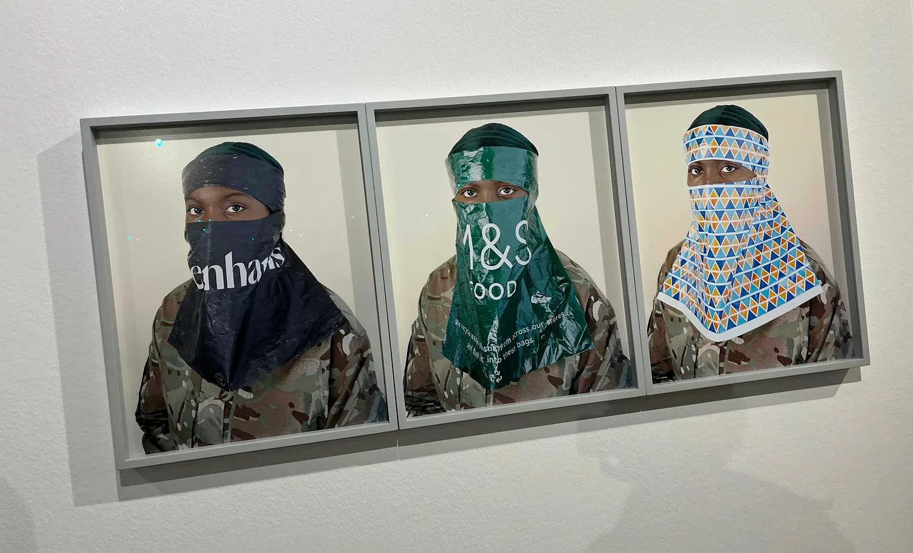
Edgar Martins - Anton’s hand is Made of Guilt. No muscle or Bone. He has a Gung-ho Finger & a Grief-stricken Thumb
After, watch how bodies move through gallery spaces, slowly and deliberately, with a glass providing occupation or excuse, just something to do with the hands, not to mention that the alcohol creates a kind of ceremonial intoxication, a loosening. What we have here is a liminal condition between the quotidian and the aesthetic and we become oh so permeable to experience. Laughingly, meanwhile, the hors d’oeuvres anchor us in our corporeal existence, providing salt on the tongue as the art threatens to dissolve us into pure perception, to make us forget we have bodies at all. While it may seem frivolous, this is nothing but the technology of the sacred, updated for a secular age that has forgotten what the sacred even means and is incapable of admitting it needs it.
What about the Viennese Actionists, you might be wondering. They sought to generate art that resisted commodification, institutionalization, domestication. And where do their works reside now? In galleries, naturally, accruing value that would have appalled their creators, that would have made them weep or rage or both. We could call it a failure. More accurately though, we call it a revelation. The gallery absorbs everything because the gallery is simply the social morphology that aesthetic experience assumes under modernity. To repudiate the gallery is to repudiate sociality itself, to retreat into some prelapsarian fantasy of unmediated experience that never existed in any case. The self-overcoming, the “Selbstüberwindung” we actually need isn’t the overcoming of the gallery, only the overcoming of our petty resentment toward it. Accept that beauty requires architecture, that contemplation requires circumscription, that value requires evaluation. The gallery is so much art’s prison as it is its condition of possibility. The dervish may own nothing and even he needs the caravanserai, the meeting place, the structure that allows him to encounter others, to sit, exchange stories and most importantly, drink tea.
On the , QV had the opportunity of attending the film festival Caminhos do Cinema Português in Coimbra for the world premiere of "Seta", a short film by Francisco Botelho starring Leonor Silveira. What follows below is a fake surrealist interview with the aforementioned people and also the conclusion of the 31st edition of this impressive festival.
Caminhos do Cinema Português – International Premiere of "Seta" by Francisco Botelho + Parte 2 & 3
Continuação (承 chéng) + Confluência (合 hé)
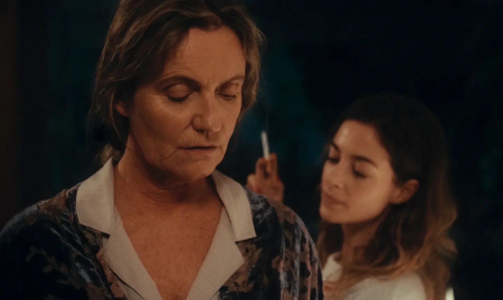
Leonor Silveira and Victória Guerra in SETA by Francisco Botelho
Queres Viver - When we realised that back home, we were able to get the proportion given to us by our imagination, then what if we stopped ruining it? Still, it wouldn’t be any good, due to some excruciating pain. Even with gloves on, it is what is, just have faith. There are 18 mothers, divide the two and let them talk it out, whistle it out, have a nice trip. Let’s take both the credit card and the salary, the plane won’t crash, at least it’s nothing that the river can’t handle. Maybe we’ll walk through the creeks, through the bars, talking with all the mothers, the films from the river, the ones you can drink. The reeds and the fear of electricity, all water under the bridge, with some tubes in the middle where the fork’s inspectors all merrily gather, alongside the fearsome electrical scooters. What creaking sounds are they able to produce! Like 18 mothers dangling from the bridge’s glassy beams.
Francisco Botelho – I wholeheartedly agree. Nobody so far had understood my film in such a succinct manner and made such a creative interpretation of it. As a matter of fact, our old homes, the ones we’d go up and down in as many times as possible, are totally ruined. Only the spectral structures of those things remain. All the traumas, the ghosts of our life, just love to talk to us as if they existed in the same continuum as us. It is very pleasant if you are so inclined. I just happened to film it.
QV – Sure. In any case, the dust the butterfly spreaded in and around the Lady’s house, the water lilies mocking from afar ever so cozied up in their tank, alas, a spring’s day in the end of the world. In the end of the world, again the day goes by. The hummingbird weeps as if his tears were the ones drenching the tree’s crowns. Don’t you think?
Leonor Silveira – Indeed. I would even add that the tank ended up being one of the most symbolical pieces of the film, it was almost like a pit of regrettable objects. The way the characters threw there what they didn’t care about anymore. There were no butterflies or hummingbirds in Francisco’s film but if I understand correctly your Li Shangyin-inspired allegory and take what you said to mean, respectively, the mother and the daughter, then yes, I concur.
FB – I couldn’t agree more with both of you.
QV – Right. But what about mid-century modern house design? It has long been established both by the International Organization for Standardization as the most aesthetically pleasing decoration style, the one every other is compared to and is the widely considered the nec plus ultra. In some countries you can actually be fined quite a large sum of money for not appreciating this particular style. That we know. Was that why you picked it for your set design?
FB – I’m not sure that organization even has those criteria. In any case, for the set, we wanted to cover a particular period in history while at the same time keeping it somewhat ambiguous and this style is perfect for that.
LS – To be fair, I think you just found it cool.
FB – That is also a possibility.
QV – I thought so. I would also like to commend you for the colour scheme of the film and overall position of the camera, very Ozu-like.
FB – Yes, I am his reencarnation.
QV - Oh.
LS - It’s true.
QV - Oh.
送 別
王 維
山 中 相 送 罷 ，
日 暮 掩 柴 扉 。
春 草 明 年 綠 ，
王 孫 歸 不 歸 。
Adeus
Wang Wei (699–759)
qi: Depois de um adeus na montanha, cheng: Anoitece, e fecho o portão de madeira. zhuan: Quando vier de novo a primavera, he: Pergunto-me se o meu amigo voltará.
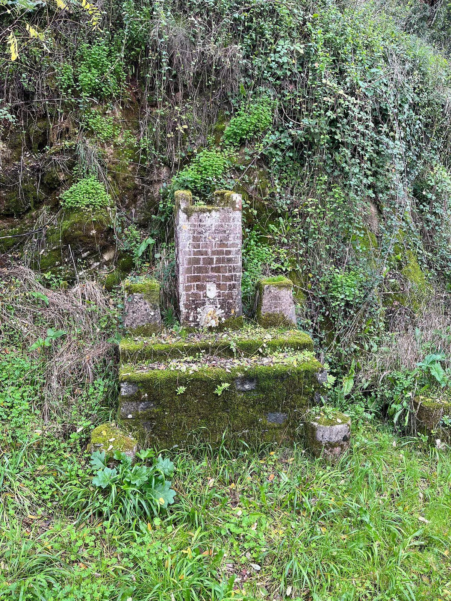
Alguns éones da nossa vida, enquanto titãs do amor esquecido, passam de tal modo que todas as Íris-da-sibéria que alguma vez existiram vivem e morrem antes do fim. É toda uma relutante aprendizagem, este negócio de contar cinzas e querer que dure para sempre. São mais do que meras vibrações, as vontades têm uma manifestação concreta, palpável e aqui sim, convém ter calma, não vá a luz se apoderar de seres tão monocromáticos que o contacto com tal esquecido fenómeno os elimina do mundo. Em última análise, convém ter calma… não sangrar a pele por causa do tempo parado, não ofender o corpo por não acompanhar a mente: porque é que a mente não anda como o corpo sente e anda? Afinal quem controla, talvez sejam os homúnculos a dominar toda a história que julgávamos determinada pela humanidade crescida, talvez nos rodeiem de maneiras inimagináveis. Com eles, a paciência é uma pré-condição. A paciência, relembramos, é algo que o tempo adquire por existir quantitativamente ou por outra, a culpa é nossa por lhe darmos esses contornos. Enquanto que a música representa alterações na física das coisas, o tempo por si nada faz, mas certos factores sob a influência do tempo, degradam ou apuram. A paciência pode muito bem nunca cessar, a espera manter-se sempre a mesma. O compasso de espera que os atrasados querem que seja apreciado, é desprezível. Quem vem mais cedo por preferir adiantar a vida, fica sujeito ao eterno abraço da prisão. Aqui o tempo manifesta-se através do gelo e causa graves arrependimentos aos que chegam mais cedo.
Assim, a volta demora sempre menos tempo excepto quando é para demorar mais tempo e quando se quer estender as horas e uma caminhada de 30 minutos passa para hora e meia e quando se dá por si já se foi de Coimbra a Verride, depois a Buarcos e então o fim? Terá sido ontem na Antiga Igreja do Convento de S. Francisco, incólume, sendo somente agitada pelo respirar dos primorosos adufes a inchar os vencedores dos respectivos prémios. O nosso santo império prosperará se for bem alimentado e se as ferramentas para a convivialidade forem fornecidas e nesse sentido, o festival assegurou que os planaltos do nosso id não declinariam. Portanto, outros fenómenos geomorfológicos tiveram lugar no nosso interior, como ofiolitos que estalaram para dar azo a novas realizações, há muito enterradas. Imagine-se a potência, o nível colossal de energia ganho só por ter ido ao Festival, com a excelente recepção a ser um catalisador sem igual.
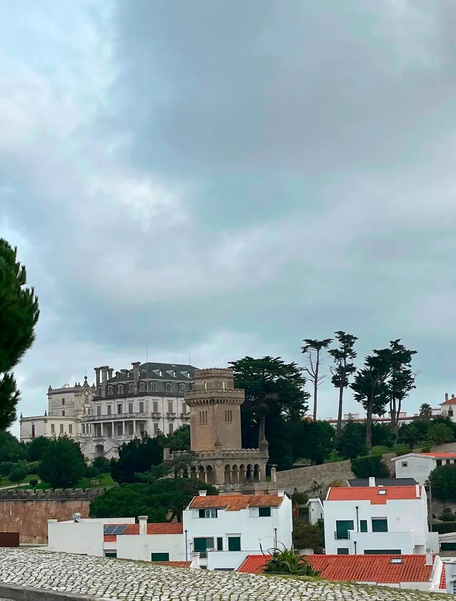
As outras máscaras que o tempo toma, que nos levam ao prado de ouro da inexistência que é presenciar um filme. Se a vida fosse um filme talvez ganhasse algum interesse, não seriam só voos emocionais pelas propriedades alheias da psique ou o corpo a aguentar o que não quer aguentar, antes uma obra perfeitamente estruturada com todas as componentes visuais passíveis de serem devoradas pelos olhos ressequidos de emoções verdadeiras, ou seja, aquelas que não se sentem, mas que se vêem. A vida filmada como a única possível vida. Essa não merece prémios; sim, prémios de atletismo ou de poesia ou de rei do século, e ficando no domínio da imaginação, talvez uns prémios por respirar ou sentir ou desesperar. Talvez inventem os prémios da morte. Não duma melhor morte que todas as outras, meramente todos os mortos a partir de agora recebem um troféu feito na serralharia da vila. Mário, faz umas 20 bibułowe kwiaty, mas de latão, um lar acaba de ter um incêndio e não há dinheiro para bronze.
Em suma, a vida perde vezes sem conta perante a perfeição da imagem em movimento enquadrada e bem grande para se ver sem defeitos, aliás, a própria ambição tem dificuldade em ultrapassar uma medíocre esperança exposta pela quarta parede. Talvez o bom cinema crie melhores condições para que a vida possa florescer no tronco de quem vê cinema, em vez de uma qualquer passividade ou mesmo inércia que de resto é hoje incentivada pela cultura reinante. Pense-se no bom cinema à moda de um pássaro que nos persegue, a cacarejar “Acontece a vida, a vida acontece”.
Dos dias a , a QV teve a oportunidade de ser bem-recebida pelo festival conimbricense Caminhos do Cinema Português e aí presenciar todos os filmes dos últimos dias desta impressionante 31ª edição.
Caminhos do Cinema Português – Parte 1
Génese (起 qǐ)
Entre árvores indestrutíveis e mudanças urbanísticas cujo término terá lugar nalguma finisterra doutro mundo, para além das casas senhoriais já devolutas cujos donos se encontram a assombrar os bem-fadados, espanta-nos, no topo da pirâmide truncada, um cubo de azul esverdeado que roda sobre si mesmo. Determina o passo através do qual a Dança da Lealdade (忠字舞 zhongziwu) é executada. Eles crêem que a chuva os vai erguer acima do ferro, a mesma chuva que fura caras pelas árvores. Por isso se espraiem na direcção da luz, murmuram as futuras coordenadas do azul. O êxtase é tanto que nem reparam que espreitamos, prontos a devorar o banquete só de sal, putativa oferenda aos mestres deles, uns sensaborões, enfim tanto quem manda como quem obedece.
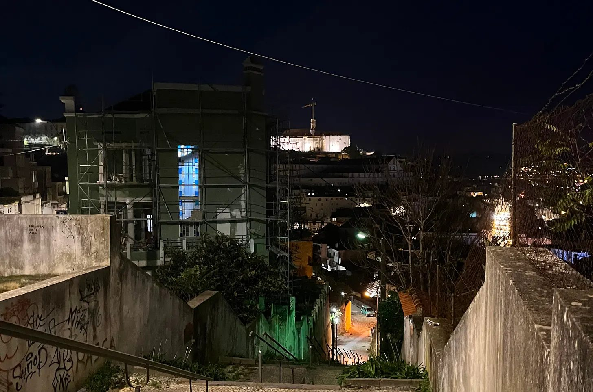
A verdade é que nós somos simultaneamente o poder das lendas e os realistas sem corpo. Viemos em trenós de leste e não há quantidades industriais de vinho carrascão que nos convençam a mudar. A soberania total é-nos intrínseca e contagiosa a quem se atravessa no ar que queiramos respirar daqui a momentos. Se antes as bocas rasgavam de tanto medo, nem foram necessárias interrupções para admirarem o novo e reluzente verbo.
À meia-noite em ponto um sol frio voltou e brilhou para os olhos mais capazes de toda a Coimbra. Emitiu risos duas oitavas acima do normal e de imediato a maior parte da audiência se calou. Só quem provinha do portal no Jardim das Sereias, cuspido para o meio de uma qualquer fonte vazia e assim renascido, ou seja, o asceta consumado, resistiria ao impulso da autothanatos. Quem sobrou, haja pena, mas não será a nossa.
Uma forma particular de Luz (光 Guāng), o espanto imagético, nosso entorpecedor, nosso Pai. Agora que a paz foi atingida, olhemos e oremos com e para o azul salvador que a sessão vai começar. A reza que debitamos é fluída, uma reza que segue as personagens das curtas do Turno da Noite e repetimos para nós mesmos o que nos dizem, as falas caras, o autocarro que nunca mais chegava, a caravana da curta-metragem portuguesa After Link de Catarina de Cézanne, a vida até agora mesmo, que se confunde com o cinema, a transladação da consciência do espectador para o éter da sala escura, momentaneamente, o nosso vazio cuja única saída se manifesta no azul. Nem por acaso as temáticas coalesciam com a After Link: é uma esquizofrenia escondida por detrás dos fantasmas de inteligência artificial o que em última análise levanta a questão se todos os TESCREALists (nome que se deu aos tecno-optimistas e trans-humanistas ocidentais que julgam definir o futuro da humanidade, pois o sino-futurismo tem outras características que também não serão as mais desejáveis) não serão simplesmente novos padres hiper-esquizofrénicos que interpretam as sagradas escrituras, os exegetas das placas de circuitos e das linguagens de programação que serão muito lógicas, mas que efectivamente escondem uma profunda doença mental que nos separa da realidade, pelo menos um nível. A guerra já estava perdida quando se começou a algebrizar em booleano. De resto, uma ferramenta, um machado, nunca será o mesmo que um ecrã ou um teclado.
Subitamente, toda a audiência é projectada da cadeira para o tecto nesta Casa do Cinema de Coimbra de tal modo que até a Avenida Sá da Bandeira se ressentiu. Tratou-se do impacto visceral da curta Nachtstücke de Kester Läufer com a sua fusão clássica de amor e morte deixando-nos sem saber qual o melhor. Um caso de Liebestod = Amor + morte = Amorte = A morte. Q.E.D. Nesta curta-metragem alemã, porque é que alguém fumaria enquanto as esventras deslizam da barriga para fora não conseguimos precisar, mas que estava bem conseguido, estava. Uma curta que apresentou os comportamentos mais degenerados e concomitantemente mais complexados de quais os humanos são capazes, num belo e soturno formalismo. Por fim, La Pecera de Victoria Garza, contemplativa violência consumada no máximo exemplo de Literatura das Cicatrizes (傷痕文學 Shānghén wénxué), a ver, como o mundo cospe as traumatizadas que não podem deixar de voltar ao vazio aquático que as educou. Decorria na Cidade do México, com toques de surrealismo tenebroso e uma mensagem que fica para o final da sessão, que a todo o momento, em todo o lado, o tráfico de pessoas reais decorre, como humanos presos num aquário de quem uns outros poucos humanos querem saber, mas cujo problema continuará até ao fim.
Assim foi a sessão da meia-noite, a hora de corujas como nós; só que na volta para o hotel, as asas batiam de maneira irregular. Não fossem os animais oráculos, não fosse a história madrasta.
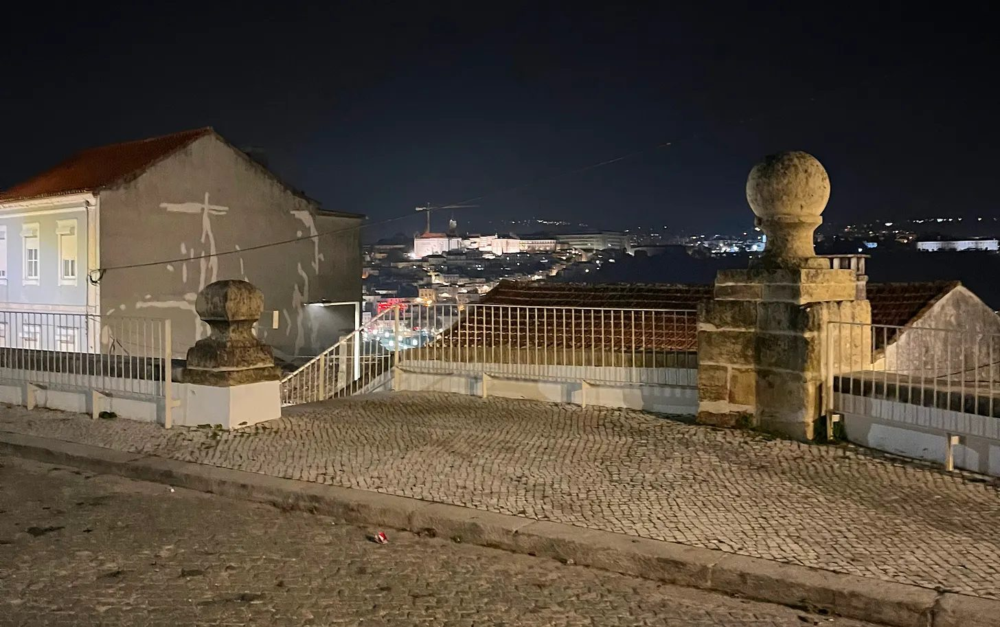
No dia seguinte, depois de um passeio que nos levou até, nem sabendo bem nem como nem porquê, à Quinta de S. Jerónimo, ouvimos que o Mondego teria prontamente inundado todas as ruas. O tasco que se gabava de ter ar-condicionado, onde os renegados donos de pensões sorviam os mais variados e requintados líquidos, de sopa a vinho, foi totalmente envolto num lençol de água que trouxe toda a bonomia que estes pobres possam ter desejado nas suas longas e miseráveis vidas; a morte por afogamento seria o único evento que teriam para se gabar no além. Os turistas que às centenas agrupadas vinham humildemente para escavacar a Alta, bem se tentavam refugiar nos AL, mas também estes poisos foram totalmente obliterados pela massa líquida. Os estudantes, bem, os mais expeditos, gritaram:
Before the phantom of False morning died,
Methought a Voice within the Tavern cried,
“When all the Temple is prepared within,
Why nods the drowsy Worshiper outside?”
And, as the Cock crew, those who stood before
The Tavern shouted - “Open, then, the Door!
You know how little while we have to stay,
And, once departed, may return no more.”
Mas foram e partiram para o Imperial Escritório da Música (樂府 yuèfǔ). Os estudantes verdadeiramente intelectuais, aqueles que usam a biblioteca para ler e não para se babarem para o computador, teriam agarrado no leite negro mais próximo, proveniente da fuga oficial da morte, ou seja, ainda se esforçaram bastante para vir para a nossa beira, mas de novo, nada feito. Infelizmente para eles, somos tão obsoletos quanto eternos, incapazes de praticar a supra-mencionada Dança da Lealdade (忠字舞 zhongziwu) porque criamos a dança que veio antes desta e quaisquer danças inventadas depois já não nos preocupam e são necessariamente inferiores. Toda a realidade é desta maneira quando se criou a Urtraumtanz, a dança primordial dos sonhos. Assim observamos do topo da pirâmide truncada, o novo oásis que se criou em redor, o Lago da Lua Crescente (月牙泉 Yuèyáquán). No restante deserto urbano, pleno de escombros pós-apocalípticos, o Teatro Académico Gil Vicente mantinha-se. Mais, apresentava-se não como banal pagode em ruínas, mas como Palácio Eterno da Suprema Harmonia. Dada a excelente hospitalidade do festival, foi nos permitida a entrada, mesmo se dançávamos freneticamente, loucos pela antecipação de uma certa estreia mundial.
Dos dias 18/10/2025 a 26/10/2025, a QV teve a oportunidade de ir ao Doclisboa ver os seguintes filmes: Mémorias do Teatro da Cornucópia, The City of Mirrors, Um Minuto É Uma Eternidade Para Quem Está Sofrendo, Do You Love Me, Anticipation e In Hell With Ivo, tanto no S. Jorge como na Culturgest.
A Lei, o Tempo, o Amor e o Doclisboa
"Quanto a nós, somente a poesia e a família nos mantêm vivos. Ou por outra, a poesia e o sangue"
Há uma porta que se abre onde se pode discernir uma jovem luz, no meio do vazio. Representa tudo o que foi vivido até agora e que já acabou. Não se percebe se é desesperante ou se é calma a emoção expressa pela luz. Dir-se-ia um grito abafado pelo tempo.
- G. de G. F. M., A Ilha da Bem-aventurança
É incontestável que desde sempre certas forças iluminam ou entorpecem a psique do ser humano, tendo subsequente efeito nas andanças, saltos, elevações e prostrações do seu corpo. O que foram e são a religião, a jurisprudência, a cartografia senão maneiras de fazer com que o ser humano se reencontre, que tenha algum tipo de referência estrutural para a vida; ou antes, maneiras de justificar certos comportamentos de humanos sobre outros humanos, quando o verdadeiro percurso seria o despojamento de quaisquer referências externas. Estas relíquias, ou seja, as bíblias, as leis e os mapas, omitem o facto de não existirem para além de serem tinta no papel, formas sem essência. Aplica-se, portanto, a máxima “the medium is the message” e nada mais. Verdadeiramente, papéis não precisam de nos reger se desencantarmos modos de deles nos desapegarmos.
A lei, por exemplo, não é feita por juristas e tampouco é intemporal por mais que estes escribas (pouquíssimo criativos em defesa duma putativa objectividade, tornam até a seca numa arte) se gostem de imaginar senadores. A lei é feita pelo que de facto acontece e o que diz o papel é um indicador mais da moral que rege o tempo de quando foi escrita do que propriamente o que de facto é feito e pode ser feito. Certo que será traço de cosmopolitismo crer que há direitos invioláveis, mas todos os dias em várias partes do nosso mundo (já para não falar dos outros mundos fora do nosso) a moral é quebrada, a lei mais que posta em causa. A vida como ela é, no desrespeito pela carne e na ânsia pelo sangue, desobedece a férreos preceitos, ditames e dogmas, ainda que por esses possa ser esmagada. A vida obedece a ela mesma, num desapego que os animais conhecem melhor que os humanos. Para quem tem a infelicidade de conseguir pensar, os paganismos, os shintoísmos, os tengrismos e outros animismos, expressam mais as verdades eternas do que o código civil, visto que reconhecem o divino em tudo, nunca se agarrando a formas.
A eternidade é uma coisa muito bela se se souber apreciar a pequenez da humanidade e desobedecer o mais possível ao zeitgeist e aí, paradoxalmente, na desapropriação do presente, se encontrará a receita para suplantá-lo. Desta matéria e destes ciclos se constituem as vanguardas culturais que com os fluxos das épocas se vão afogando e subindo à superfície, cavalgando as ondas conforme podem e consequentemente fazendo jangadas das réstias, alguns intervenientes inserindo-se melhor na sociedade do que outros. De qualquer o modo ao tempo pouco importa porque todos arrasará. Para acalmar ou divulgar ou manipular esta torrente de ocasiões vermelhas, púrpuras, amarelas e verdes que coexistem, ou seja, todas as tonalidades das quais o tempo é constituído, impõe-se a necessidade de momentos observacionais da contemporaneidade, ou por outras palavras, documentários.
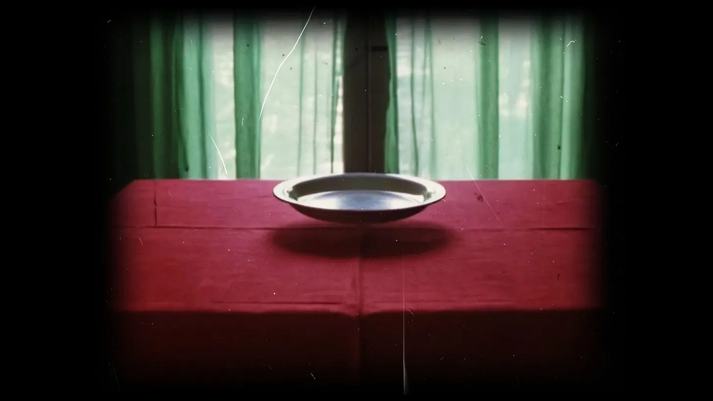
É crucial este registo como alternativa produtiva ao cinema ficcional; é o que permite escapar às hipocrisias da suposta última grande arte e apresenta a vida como ela é, talvez sendo mesmo a única maneira legítima de fazer cinema. Se o objectivo é criar falsidades, porque não escrever poesia ou encenar uma peça de teatro, algo eterno? Relembramos, aliás, que só as obras de arte expressas em meios eternos pertencem à eternidade. O cinema, que tem um mero século de idade, padece do mal da juventude que é achar-se demasiado importante, demasiado impactante no seu maximalismo luzidio. Da luz fez-se a imagem. Se cinema é imagem, os documentários são iconoclastas: destroem a imagem para revelar o que está além dela.
O documentário, esse sim, humildemente parte do princípio que quer criar uma representação fiel da realidade com este meio limitado que é a câmara e consegue-o, com uma característica renúncia a toda a pretensão. Acrescentamos, até, que a faceta que mais apreciamos nos filmes convencionais é justamente quando mais se aproximam do documentário, quando deixam de ser meras formas e se tornam em presença.
Em sentido figurado, o cinema convencional é como um T3 demasiado iluminado em que se vêem todos os cantos da casa. O documentário são todas as quantidades certas de luz nos sítios perfeitos, como uma malha de Bronius Kutavicius ou todo o Belarmino.
- Wang Bing
Ainda bem, então, que existe o Doc: na sua pluriversidade de temas e filmes, apresenta uma perspectiva tão leal e diversa do que se passa mundo fora, cada imago mundi apresentada e novas sinapses se criam, sendo as antigas podadas, numa constante morte e renascimento. Não deveriam todos os filmes ser experiências neurologicamente transformadoras? Essencialmente, este festival representa uma quebra com as leis a que fomos habituados, ao apresentar os novos tempos ou novas maneiras de ver os velhos tempos (por exemplo, em Do You Love Mede Lana Daher) mas sim, pensar no Doclisboa é também pensar em amor. Pois até que ponto pode o amor ser definido como um processo de pura apreciação mútua, casto até, ou será isto antes uma bastardização da natureza própria desta emoção perdida? É a única emoção que abarca todas as outras, felicidade, simpatia, tristeza, egoísmo, lascívia, nojo, luto, por vezes no mesmo momento. E assim temos uma definição fenomenológica do cinema também. Deste tipo de particular de amor, ou talvez o único amor existente, se viveram os dias desta realidade alternativa suspensa no vazio contribuinte que é existir num festival de cinema localizado no útero de veludo, ouro e madeira aka o interior da Culturgest. Fracas naturezas não aguentam as emoções que um fest como o Doc traz. Totalmente protegido do mundo exterior com uma função, fruir da existência de outrem (leia-se, ver filmes) e entregar-se a esses poderes. É demasiado confortável, demasiado terapêutico, demasiado impactante para uma só alma e talvez neste excesso possa residir o caminho, num abandono total à experiência em si.
Aviso: A QV aceita a sensibilidade inerente ao ser humano, não é cética. Por isso não lhe desagrada proteger as suas emoções, deixando-as para situações reais, não filmes feitos por outrem em que as sensações dos outros deveriam ser catárticas ou iluminadoras nalgum aspecto. Mas claro que estas racionalizações a priori caem por terra quando um filme é posto à nossa frente. Os filmes são demasiado poderosos e como todas as pequenas mortes deveriam ser encarados com seriedade, ou seja, que um pouco de vida nos é retirado sempre que vemos um filme. Efectivamente vemos a vida a acontecer no ecrã, mas e nós? Sentados na cadeira. Mesmo que a vida seja tudo o que queremos, cá estamos nós, sentados na cadeira, de emoções ao rubro, mas sem levantar, sem mexer, sendo os olhos os únicos a terem espaço para traçar a perna.
Aviso: A QV aceita a sensibilidade inerente ao ser humano, não é cética. Por isso não lhe desagrada proteger as suas emoções, deixando-as para situações reais, não filmes feitos por outrem em que as sensações dos outros deveriam ser catárticas ou iluminadoras nalgum aspecto. Mas claro que estas racionalizações a priori caem por terra quando um filme é posto à nossa frente. Os filmes são demasiado poderosos e como todas as pequenas mortes deveriam ser encarados com seriedade, ou seja, que um pouco de vida nos é retirado sempre que vemos um filme. Efectivamente vemos a vida a acontecer no ecrã, mas e nós? Sentados na cadeira. Mesmo que a vida seja tudo o que queremos, cá estamos nós, sentados na cadeira, de emoções ao rubro, mas sem levantar, sem mexer, sendo os olhos os únicos a terem espaço para traçar a perna.
Para haver fruição decente de um filme, como por magia, o espectador meio que não está 100% dedicado ao filme, porque a própria cabeça enfim existe e dedica-se às suas cogitações habituais enquanto pelos olhos entra a imagem e pelos ouvidos o som, excepto quando a cabeça entra em fluxo com esta imagem em movimento e os pensamentos são indistinguíveis do correr do filme, evitando assim a atenção intermitente que tantas vezes labora para dissecar a obra durante a fruição da mesma. Deste processo de análise da consciência é que se desenvolve a habitual crítica, que a QV não pratica, mas foi neste fluxo que nos mantivemos durante os filmes. As relações parentais de Trương Minh Quý em Thành Phố Những Tấm Gương: một tiểu sử hư cấu (The City of Mirrors: A Fictional Biography)ou o triunfo de Ivo Dimchev em In Hell with Ivo de Kristina Nikolova, tão poeticamente representadas no primeiro e tão realistas no segundo foram exemplos paradigmáticos da Gelassenheitem que nos deixamos cair. Se se quiser manter a sanidade e a ligação a este mundo, no entanto,a maneira ideal de fruir um filme é como a teoria política do imperador enquanto órgão, “emperor as organ”, ou seja, não como sujeito separado, mas como parte do corpo místico da experiência.
De resto, pobre afortunado quem curou este festival, sujeito como está a um completo acordo faustiano. Perdem para que os espectadores ganhem. O que acontece a esta equipa após o festival não sabemos, mas a julgar pela suprema qualidade dos filmes apresentados, diríamos que essas pessoas ficam como se tivessem uma overdose de ozempic, que os olhos se esforçam por se manterem nas órbitas, que os canais lacrimais até ganham areia de tão desérticos que se tornam. Quanto a nós, somente a poesia e a família nos mantêm vivos. Ou por outra, a poesia e o sangue.
Dos dias a , a QV teve a oportunidade de testemunhar Apollon by Day Athena by Night, Isto Não É um Jardim, Echo of Sunken Flowers/Moi Aussi, A Grotto for Sale/Mefite/Cantos da Metamorfose/Memories of My Mother, Red Lace/My Tortion Diary, The Dreamer, A Good Wife, Esma’s Secret, On the Path, Quo Vadis, Aida, tanto no Cinema S. Jorge como na Cinemateca.
Olhares do Mediterrâneo - 12ª Edição
A Esperança do Mal Encarnado / Cinema como Dança Colectiva Parapsicológica, Resultante em Variações de Estilo sobre Olhares
É uma imensidão de sangue, uma praia de metal. Um ser que paira a contar as vidas perdidas, o sangue de familiares, todo um mar de perda, rio Estige feito mar. Tanto é o sangue que bate na praia que tal massa disforme e vermelha engole o metal e lentamente se apodera da costa. Beira-sangue. Pouco depois já os sobreviventes nem hesitam e permitem-se a honra do visco encarnado os assoberbar. Bem no alto, um ser observa não sem soltar um esgar e espalhando sal, pela piada. O Mediterrâneo não será nunca mais do que isto. Entre descontrações assumidas ou disfarçadas, esta sempre foi uma das áreas da perdição. Um ser que julga e ajuda ao mal, um demiurgo estereotipado como todos os povos sempre creem que são levados por e a culpa é dele. A culpa é sempre dele, desde que a massa vermelha possa ser ilibada. Deixem o sangue descansar, não prendam o sangue por ser como quer ser, livre. O anticristo está habituado a ser o culpado e de resto, será mais fácil o julgamento, do que procurar os culpados dentro do visco visceral, visto que se tornaram bastante hábeis a se esconderem conforme a inteligência aumentou e a ignorância passou a ser mal-encarnada. Perdão, mal-encarada.
Na QV, vemos que todos os festivais obedecem à seguinte dicotomia, ora são como entidades supra-dimensionais que se instalam na localidade para se apoderarem da vida cultural da mesma ou são como pessoas desaparecidas que surgem para trazer a bonança, um coro ars antiqua cujas vozes propositadamente fazem desaparecer toda a sujidade associada aos maus ventos da história. A cada filme, cada impacto, a purificação é incrementada. Presenciar todos os filmes do festival, de seguida, será comparável à experiência ascética mais intensa que possa estar disponível para um comum desta terra, ainda que tenhamos algumas reservas quanto à tradicional experiência cinematográfica, como já expressamos num ensaio anterior. Claro que excepções são feitas para defesas de esperança, de genuinidade, de desprezo da ironia e excessos de paixão, das coisas constituintes da vida. Aliado a isto, o festival é parte integrante da existência colectiva do ser humano, ainda que num de cinema não possam haver muitas danças físicas circulares em torno de algum espírito; mas decerto nos contentamos com fenómenos parapsicológicos em que todas as consciências dos espectadores de alguma maneira confluem juntas e põem em prática a horă mais antiga da humanidade, no topo achatado do Dealul Spirii. Imaginemos o processo:
Os Olhares flutuam numa inocente diversão ao despontar do sol, pretendendo que o horizonte seja alcançável, benéfico, nosso. No niilismo que tudo parece perpassar, graças aos cinzentões destes dias, os Olhares iluminam rios antes imaginados violentos e intransponíveis, agora assumindo-se amigáveis aos transeuntes que estavam prestes a desistir. Um hino no centro do nosso jardim em que Olhares harmoniosos denunciam uma alegria ilimitada e desenvergonhada. Olhares na escorregadia cidade que se tornou Lisboa, com prédios opalescentes e estradas diáfanas se se souber deslizar para além dos botões dos semáforos. Olhares de enxofre enquanto resposta às silenciosas acções de manipulação de quem quer mal. A despeito do meu roseiral, visto por Olhares acolchoados num honesto e benquerente luxo, cai da torre de cal o ódio da nossa vida. Um simples registo de contas por fazer, Olhares trans-geracionais que se debruçam sobre eternas cobranças chegando a semelhantes conclusões em cada paixão arquivada ao longo dos séculos. A morte come-se como os Olhares respiram.
“Tanz im August, Berlim ao Sol”, publicada na Fugas, Público
A partir de Gesundbrunnen fez-se o mundo, i.e., daí originou a impressão com que fiquei de Berlim, a que arrisco denominar da cidade da harmonia. Felizmente fui abençoado com um sofá, uma bicicleta e mais importante ainda, boa companhia, local até. O que isto implica é que as habituais atracções turísticas, interessantes claro, mas que são relegadas para segundo plano porque o que se impõe é experienciar a cidade à lá berlinense; e que melhor sítio para começar senão no Currybaude da estação? Entram batatas fritas, salsicha com molho caril e ketchup, vagueando depois por Tempelhofer Feld para observar todos os ciclistas como que a passearem-se no céu que na verdade é uma antiga pista de aviação.
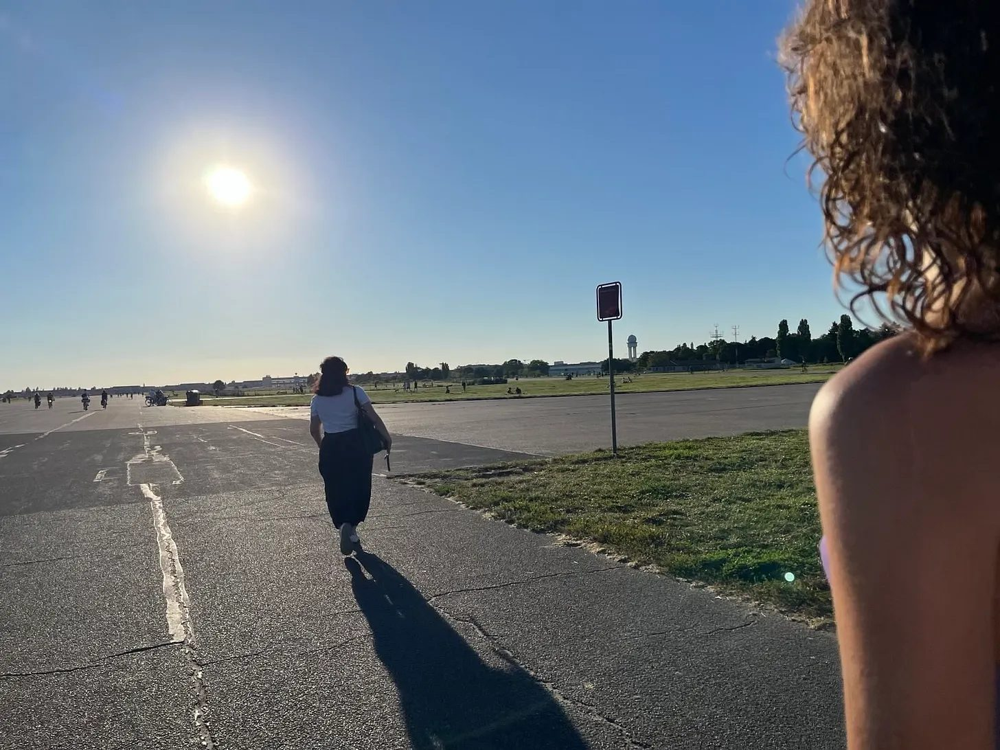
Tempelhofer Feld
Segue-se um mergulho na piscina pública Sommerbad Neukölln, onde a freikörperkultur coexiste com o burkini, o que aos olhos do saloio que escreve isto fez com que todas as teorias de conspiração online desvanecessem e a fé na humanidade (ou no humanismo) fosse restaurada. Cuidado só para não comerem gelados à beira da água porque aí sim, serão chamados à atenção, haja limites. No entanto, a impressão geral é de uma cidade sem qualquer tipo de entraves. Aliás, até facilita a vida. Crise de habitação? Claro, está impossível ter casa em qualquer cidade. Mesmo assim, em Berlim, pode-se chegar nu com umas moedas no bolso. Passa-se num instante perto da Karl-Marx-Allee onde há sempre roupa para quem quiser levar, encontra-se uma padaria turca e compra-se por 1 euro “pide”, um pão turco enorme que dá para 3 dias e nalgum Späti (minimercado com esplanada) alguém te arranjará um Club-Mate (ou uma cerveja se preferirem) que dá para duas refeições. A nós até nos ofereceram “baklavas” de pistáchio. A propósito, a comida turca foi uma experiência por si só, “içli pide”, vulgo pizza turca e não podia falhar o chá preto, pré-condição de um bom dia nesta cidade. Sobre a presença turca ou muçulmana na Alemanha no geral recomendo o filme de Fassbinder O Medo Come A Alma e está a conversa feita.
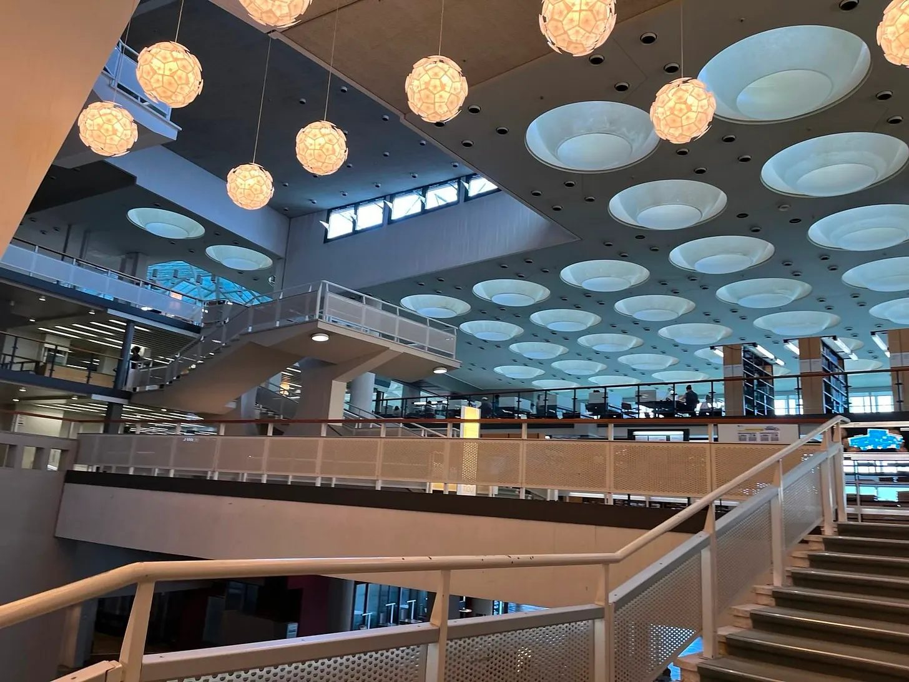
Staatsbibliothek
Ora, depois deste pequeno-almoço, aí sim já se pode ir trabalhar para a Staatsbibliothek, mais conhecida para mim pela biblioteca do Asas Do Desejo de Wenders, mas não sem antes comer um segundo pequeno-almoço no elegante refeitório. Aos livros, seguem-se os autores e assim se passa pelo cemitério Dorotheenstädtischer, onde jaz Hegel. Também Fichte, Brecht e até mesmo o cineasta Harun Farocki.
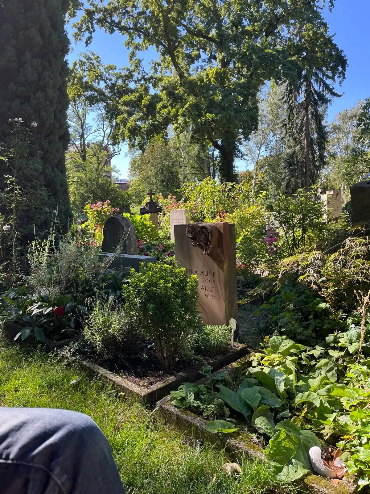
Dorotheenstädtischer
Igualmente entusiasmante, será, por exemplo, ver concertos de free jazz. Em Mitte há o Richten25 onde vimos o jovem saxofonista Chris Pitsiokos e em Neukölln (a zona hip agora) vimos a pianista lendária Aki Takase no Sowieso. Por toda a Berlim existem também os bares tipicamente alemães, Kneipen, que pelos vistos também vão desaparecendo, tal como a cena de clubbing parece estar a morrer. Tudo está sempre a morrer em todo o lado, mas estranhamente há também sempre uma zona fixe nova em qualquer cidade e aí sim tudo está a acontecer de novo. Será que daqui a uns tempos a gentrificação expulsará as gentes para a floresta? O que sei é que das partes que mais apreciei da cidade foram justamente as zonas verdes. Onde quer que se olhasse, haviam árvores, a proteger quem arruma os livros na bicicleta depois de passar pelo alfarrabista Antiquariat Mackensen & Niemann, ou quem acelera pelo jardim Tiergarten, ou à noitinha em direcção à ponte Admiralbrücke em Kreuzberg para ouvir um simpático a tocar kalimba, mesmo ali em cima do canal Landwehr. No que toca a discotecas, evitámos filas e só fomos a uma cave por debaixo duma Kneipe e pessoalmente não desgostei, mas a minha dança é outra. Na Haus der Berliner Festspiele vimos foi Jungle정글 pela Korea National Contemporary Dance Company, dirigida por Kim Sungyong, isto no contexto do festival Tanz im August, que foi interessante, mas pouparei os detalhes mais sórdidos. De resto, é fácil uma pessoa perder-se em qualquer cidade e renega-la para sempre, mas tal não aconteceu aqui. Porque a diferença é que em Berlim, até uma perda de tempo sabe bem.
Nos dias e , a QV teve a oportunidade de testemunhar, respectivamente, a performance “SOLAS” de Candela Capitán no 8 Marvila e o concerto “Suspiro” de Maria Reis no Espaço BoCA, no âmbito da 5º edição da BoCA - Bienal de Artes Contemporâneas
BoCA - Parte 5 & 6
Festina Lente - Ritidectomias Potemkin - Tröst Einsamkeit - L’Enracinement - Neo-Inquisidores – Reggaeton Big Tech - O Arrependimento da Geração Esfomeada - 岳飞
Morte e descida aos Infernos, por um lado, ressurreição e ascensão aos Céus, por outro lado, são como que as duas faces inversas e complementares, de que a primeira é a preparação necessária da segunda, e que se encontraria sem dificuldade na descrição da “Grande Obra” hermética; e a mesma coisa é nitidamente afirmada em todas as doutrinas tradicionais. Ou, ainda, respondendo àqueles que se interrogam sinceramente «porque é que essa ascensão deve ser antecedida por uma descida aos Infernos», [um filósofo francês] aponta algumas razões espirituais e iniciáticas, que radicam numa perspectiva gnóstica: «por um lado, essa descida é como uma recapitulação dos estados que precedem logicamente o estado humano, que determinaram as suas condições particulares e que devem assim participar na “transformação” que se vai efectuar; por outro lado, ela permite a manifestação, segundo certas modalidades, das possibilidades de ordem inferior que o ser traz ainda em si num estádio não desenvolvido, e que devem ser esgotadas por ele antes que lhes seja possível alcançar a realização dos seus estados superiores».
Lisboa, Madrid, Paris, Londres, Viena, Berlim, Varsóvia, Budapeste (Bucareste e Sófia, por exemplo, escapam, mas não por inteiro), a maioria das capitais europeias, as aqui referidas recentemente visitadas, com muito esforço e orgulho pela QV nos últimos dois anos, são na sua larga maioria um aglomerado de aldeias de Potemkin. Quem se encontra por dentro destes edifícios submetidos a ritidectomias? A nobreza, claro, seja nobreza local ou expatriada, sempre foi e sempre será a não ser que algum cataclismo vire a sociedade ao contrário. Por mais que nos queiramos focar na subida das rendas, rendas essas que só salientam a condição de escravatura assalariada da maior parte da população, talvez o verdadeiro problema seja mais a nobreza que continua a impor os seus ditames, ainda que as estratégias sejam mais directas, mais legais, mas igualmente podres como antigamente eram. Cabe ao observador deste estado de coisas ou continuar a estar dependente da nobreza ou desencantar medidas concretas para existir à sua revelia. É este o fundamento anárquico da nossa Weltanschauung e é garantido, tendo sido mesmo comprovado em laboratórios ditos independentes, mas financiados por entidades supra-nacionais e multi-laterais completamente isentas de qualquer motivação esotérica subjacente de controlo global, que nenhum estado, nenhuma empresa, nenhum partido, de resto tudo variações da mesma dialéctica mestre-escravo, poderão ajudar na dura construção da soberania.
Destas condições espirituais, económicas e habitacionais tanto claras quanto falsamente construídas, ressurge a solidão enquanto motor cultural, ou seja, peças desenvolvidas por conjecturas misantropas em casas partilhadas, traço comum de qualquer centro cosmopolita. Nunca se está realmente em casa e o resultado artístico é necessariamente um reflexo desse desarraigamento. Mesmo que os restantes inquilinos tenham bom coração e constituam uma nova família, a nova casa não é casa, nem muito menos poderia ser a velha casa. O que se deseja seriam antes raízes frescas em solo ancestral, o que será praticamente impossível em cidades definidas pela remoção do carácter e subsequente inserção de pastiche desse mesmo carácter. Que criança nunca tentou plantar de novo uma árvore à qual já tinha rebentado as raízes?
Daqui seguem-se, por isso, formas de expressão solitárias ou alternativamente que primam por expressar a solidão, dois fenómenos distintos e aqui usados não só para efeitos de quiasmo. A tecnologia é um catalisador da solidão, sim, a tortura incessante dos humanos pelas máquinas, tudo em prol da alucinação consensual que disseram que nos libertaria e afinal tontos que somos, ficamos agrilhoados a um pequeno sol, na sua essência o casulo do demiurgo. Todo o mal do mundo não existia antes e adveio daquele agora atavismo, o chamado ciber-espaço. Muitas luas daqui para diante, os neo-inquisidores reinarão: quem castiga os que não cumprem ou que obriga os espectadores a deliciarem-se com o castigo de alguém. Ao presenciar a performance Solas, de Candela Capitán, este futuro castigo é trazido para o presente e elevado à enésima potência: as performers são vistas absorvidas no telemóvel, os espectadores observam e ainda são levados a ver uma segunda vez na plataforma de divulgação pornográfica e uma terceira vez quando pegam do telemóvel para filmar. Não é a única nesta crítica morna de jeito cristão à tecnologia, porque toda a cultura de massas hoje em dia tem uma abordagem semelhante. Castigar os humanos por serem humanos sedentos de dopamina, serotonina, oxitocina e outras ninas é antitético à mentalidade hedonista. Verdadeiros libertinos não castigam, não julgam, fazem o que querem e esperam que ninguém descubra ou melhor, que toda a gente já saiba antes de os conhecer. Se a tecnologia te irrita, ignora-a. Usa-a enquanto ferramenta. De resto, normalmente quando se gosta muito de castigar, falando a nível psicanalítico, significa que o Pai talvez tenha sido uma figura demasiado controladora.
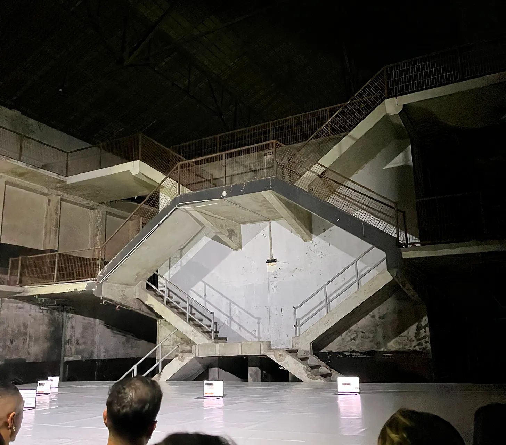
A performance peca somente por isso, pela sua abordagem católica e castigadora ao uso da tecnologia. A tecnologia pode ser entendida pelo seu potencial liberatório, até porque persistir na tecnologia enquanto prisão alimenta mais ainda Pantagruels hosted pela AWS, Azure, Google Cloud ou outros monopólios big tech. No entanto, formalmente, a Candela tem a sua gramática bastante desenvolvida e as performers cumprem à letra a dança tanto hiper-sexual quanto robótica. Foi visceralmente impressionante a nível visual e no que toca a sons foi alternando entre uns valentes kicks e reggaeton o que leva um aprovadíssimo da QV. Francamente já estava mais que na altura de trazerem esta performance a Portugal de tão badalada que foi na internet. RESPECT BoCA, mais uma vez.
Maria Reis existe e canta, despojada de artifícios (a não ser algum reverb na voz) como se costuma dizer. Com a viola braguesa feita sua cítara de jade, canta do arrependimento e sobre a geração solitária esfomeada de dinheiro e de amor. Canta para uma audiência em que só vemos exs uns dos outros, relutantes em movimentarem-se para não serem julgados. Todos ouvimos a figura mais relevante da faceta portuguesa da geração criada no quarto e que daí criou as suas obras, por isso a identificação com os temas aparentemente eternos é fácil, todos temos os mesmos problemas mil vezes nestes últimos mil dias, mil pequenas existências estultificantes por mil males sem-nome que só começaram a aparecer nas mil adolescências de mil altos e baixos e ainda continuamos nestas mil andanças, mas acreditem que é possível que elas desapareçam: implica renegar mil maus hábitos, cuspir em mil pessoas, antes que destas mil ocorrências uma vida inteira seja feita e digerida. Repetimos, é simples. Basta crescer e encarar as mil realidades como uma só. Mesmo assim, existir com 20 e tal anos ou pouco mais ou menos, não há como não ficar afectado pelo que Maria Reis suspira. A nossa geração está sempre com as emoções à flor da pele e ainda bem, é sinal que a fome é muita, o amor é pouco e com paradigmas destes se criam guerras, assim se viram mundos. Maria Reis colmata as falhas, ensina como expurgar males, como criar raízes (a viola braguesa queira-se ou não é uma indicação), como transcender a branca solidão no meio das perpétuas crises pessoais ou extra-pessoais que definem a época presente, como encontrar casa no meio dos montes, como a fama é efémera e irrelevante assim macro-historicamente, como o vazio de linho é indesejável para os que querem saltar fora da cama para a terra e da terra para...
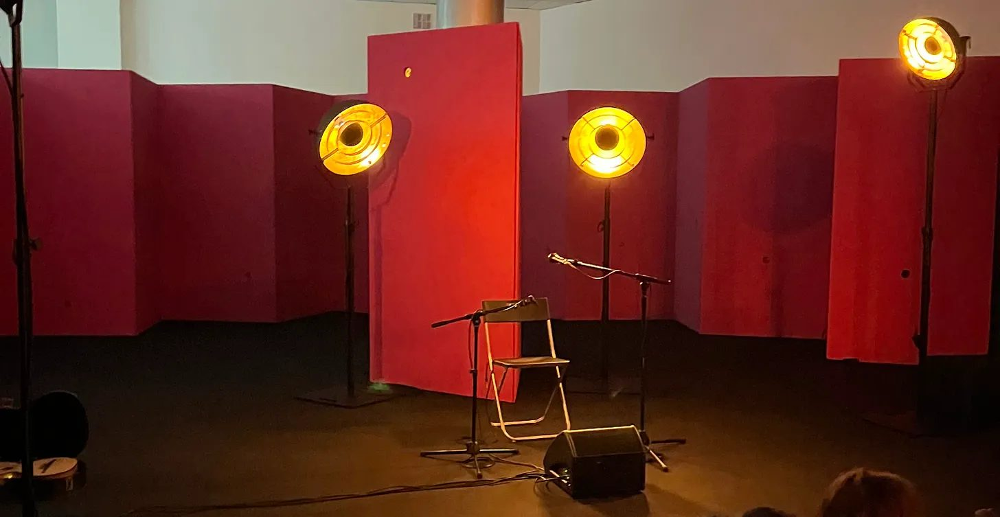
白首为功名。旧山松竹老，阻归程。
欲将心事付瑶琴。知音少，弦断有谁听？
Mesmo com cabelos brancos, tento ainda o mérito e a fama.
Volto ao monte, já os pinheiros e os bambus envelheceram,
Tento ir para trás, o caminho desapareceu.
Quero dar o meu coração à citara de jade,
Mas poucos são os que entenderiam –
Se as cordas se partissem, quem ouviria?
Nos dias e , a QV teve a oportunidade de testemunhar, respectivamente, a performance “Romi Ibérica” de Deborah Krystall, no Espaço BoCA e o concerto “The Spirit Lamp” de Chrystabell na Voz do Operário, no âmbito da 5º edição da BoCA - Bienal de Artes Contemporâneas
BoCA - Parte 2 & 3
Escravo > Espectador - A Nossa Diotima - A Morte do Lounge ou Morte ao Lounge - Cadê Mise-En-Scène Fassbinderiana – O Soave Fanciulla - Bienal Policefálica - Lago no Céu
Qual a diferença entre espectador e escravo? O escravo não paga nem casa nem comida. Para além disso, o escravo lá dentro da sua cabeça ainda pode pensar o que quiser. O espectador consome passivamente as oferendas de dogmas que metem à sua porta, é animal malade de Châtelet. Melhor, é um golem do século XXI feito de barro de supermercado com umas bocas num eterno kkkkkkkkk lá metidas, barro prontíssimo para ser moldado pelo primeiro gestor cuja manha pareça sensata o suficiente para convencer o espectador a cair mais uma vez no sempiterno feudalismo. Aliás, é demasiado elogioso dar corpo ao espectador que na verdade é mais gasoso que outra coisa. Talvez Tiqqun acertavam quando descreviam Bloom, essa stimmung, esse ambiente, essa vibe. Vibe tudo já foi tentado, Vibe viver cansa, Vibe tocam os sinos, mas não a mudança, Vibe colossais esferas ocres a terraplanar civilizações promissoras, Vibe galáxias apodrecidas de sóis regentes e plenos de tanta lassidão que nem são fisicamente capazes de explodir, Vibe música para nados-mortos. Pedro Oom: “O que pode fazer um desesperado quando o ar é um vómito e nós seres abjetos?”
Enter mestre de cabaret Debora Krystall, vera e subestimada Diotima dos tempos modernos que não só faz cus indecisos levantarem-se das cadeiras como sob o manto duma aparente estocasticidade no seu jeito, de facto sabe como vai reagir uma plateia tímida e todos os gestos foram calculados subconscientemente por anos de performance para um único resultado: qual arúspice, abrir as entranhas do público e diante dos próprios olhos dos afectados mostrar-lhes finalmente que é disto que vocês gostam, do kitsch, da honestidade, dum ligeiro e bem-humorado espicaçar para ver se reagem ou se se resignam. Nem foi preciso entrar numa de efeitos de distanciamento ou teatro da crueldade, pois a teoria fica no lodo quando o carisma basta. Décadas de estética teatral pela janela com os bailarinos, que providenciariam o necessário contraponto, a arrasarem no flamenco à portuguesa e a mestre logo de seguida a entoar perpetuamente Maravilhoso Coração, o hino que todos desejaram que continuasse toda a noite. Já no carro a gritar aos transeuntes Maravilhoso Coração Maravilhoso Coração Maravilhoso Coração Maravilhoso Coração.
Situávamo-nos na famigerada zona definida como within walking distance do Lounge, o único sítio que a especulação imobiliária fez e muito bem em suprimir.
“Coroai-vos de alface, e ide jogar o bilhar, ou fazer sonetos à dama nova, ide, que não prestais para mais nada, meus queridos Lisboetas;” disse o Garrett e o mesmo se aplica ao Lounge, último reduto dos atomizados. Para zero espírito de convivialidade já existe o metro, o aeroporto, o centro comercial, enfim qualquer não-lugar. O Banco, aí sim, Lisboa perdeu o real spot. Estilo Piwnica pod Baranami, Cracóvia há 50 anos, cada um a fugir às autoridades à sua maneira, todos ali congregados para descomprimir, respirar.
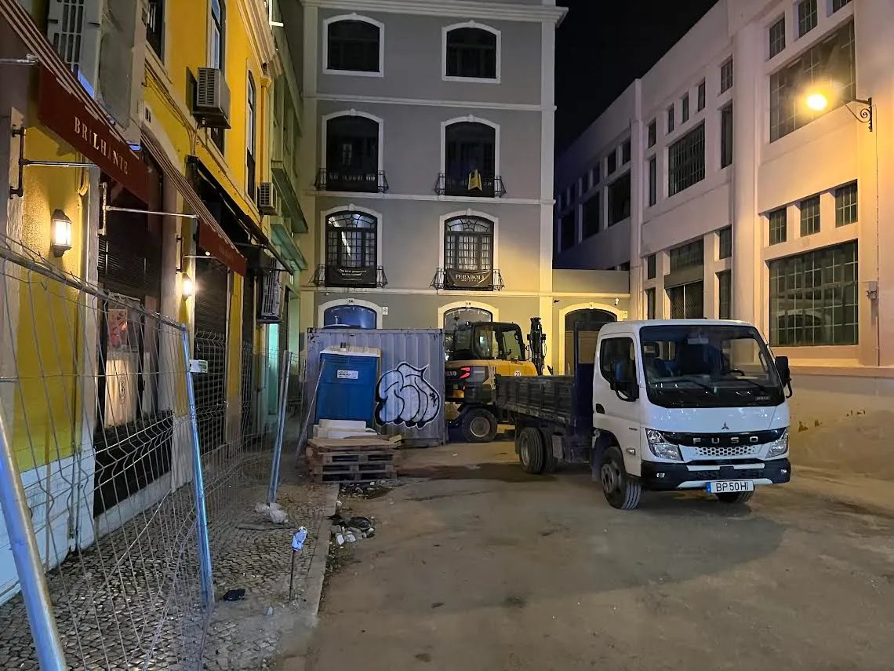
Já dentro do Espaço BoCA, os painéis vermelhos que enquadravam a Santa Debora Krystall davam uma certa lugubridade satânica ao local, que até se adequava, não obstante eu teria trocado tudo por espelhos para máximo efeito fassbinderiano que, de resto, seria o único director adequado para biografar esta performer. Criar uma quimera de todos os olhares tanto possíveis quanto surreais.
E de Fassbinder saltamos para Lynch, ambos ligados pelo seu afecto ao unheimlich. Algo que Chrystabell, colaboradora do americano, cultiva abundantemente com uma subtileza particular e para bastante deleite dos espectadores, que de tão habituados à experiência comum dum cinéfilo, nem se mexiam, aliás, a única reação possível era ficar boquiaberto. Uma performer elevou, a outra estarreceu: ambas condições desejáveis para personalidades distintas. O que saltou mais à vista na lynchiana foi não tanto a artificialidade nos seus modos, mas uns momentos de suavidade expressos por frágeis sorrisos ao sussurrar as canções. A própria gozou um pouco com a sua postura robótica a meio, nuns clips post-internet no meio de tanta filmagem de arquivo. Talvez ela nem aprecie esta fachada misteriosa de vela na mão que tem de exercer para ir reavivando o falecido director norte-americano.
De qualquer modo, a Voz do Operário não podia ter sido mais adequada para este tipo de espectáculo. Já agora, tanto a nível de local como de estética, a Bienal BoCA tem congregado na sua programação scenes muito diversas, sejam informais ou organizadas. Foram capazes de alimentar uma programação verdadeiramente heterogénea, criando em laboratório várias cabeças que engulam todo o tipo de gente e “a gente” aceita de bom grado. Qualquer interessado em qualquer coisa artística que seja1 pode escolher a cabeça que o devorará e não ficará desapontado, só terá de agradecer à Bienal policefálica.
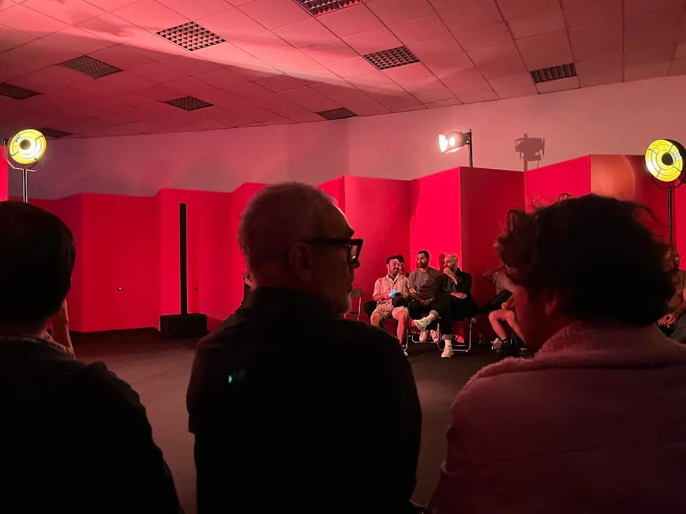
Resta saber se é pura ou glacial a intenção de ir aos espectáculos, se o coração sabe no que se mete e se procura sublimar ou se pretende isolar-se na cadeira do teatro e dela se tornar parte. Há quem saia dos espectáculos e tenha o discernimento para percepcionar um mar de cadeiras com humanos invisíveis lá colados, humanos que já desistiram e que não choram mais; ou há quem entra com uma certa cardiomegalia e membros tão soltos que ao mínimo e bem-vindo movimento o corpo desfaz-se e ascende para ir desaguar ao lago do céu. São escolhas.
Notas
Para esta publicação, maioritariamente os espectáculos. Tal se deve muito simplesmente à natureza da nossa personalidade, de resto já exposta há uns anos na praça pública. ↑
No dia , a QV teve a oportunidade de testemunhar o concerto “El Cante Rasgueado” de Niño de Elche e Pedro G. Romero, que teve lugar no Anfiteatro ao ar livre da Fundação Calouste Gulbenkian, no âmbito da 5º edição da BoCA - Bienal de Artes Contemporâneas
BoCA - Parte 1
Psico-Geografia da Gulbenkian - A Arte de Obedecer à Fila - Flamenco como Modus Educandi - Dialectos das Camisolas - O Concerto em Si
Ao circular hoje mil vezes por estes espaços outrora mil vezes trilhados, um qualquer deus da memória fez questão de me afagar com as caras de todas as pessoas conhecidas e mais-do-que conhecidas com as quais tempo foi gasto ou ganho entre as folhas e estes monólitos, onde o acto de sentar era sempre feito de forma algo contrariada, como quem mergulha na água gelada, mas ao qual logo se seguia uma calma interior, daquelas somente obtidas através de ligeiros desconfortos do dia-a-dia. Suar no autocarro ou um frio irritante nos braços e outras circunstâncias meramente físicas um pouco desagradáveis que nos relembram o que é existir: não é muito mais que ser animal e ter o corpo a processar as próprias ideias, longe da mesquinhez da cabeça.
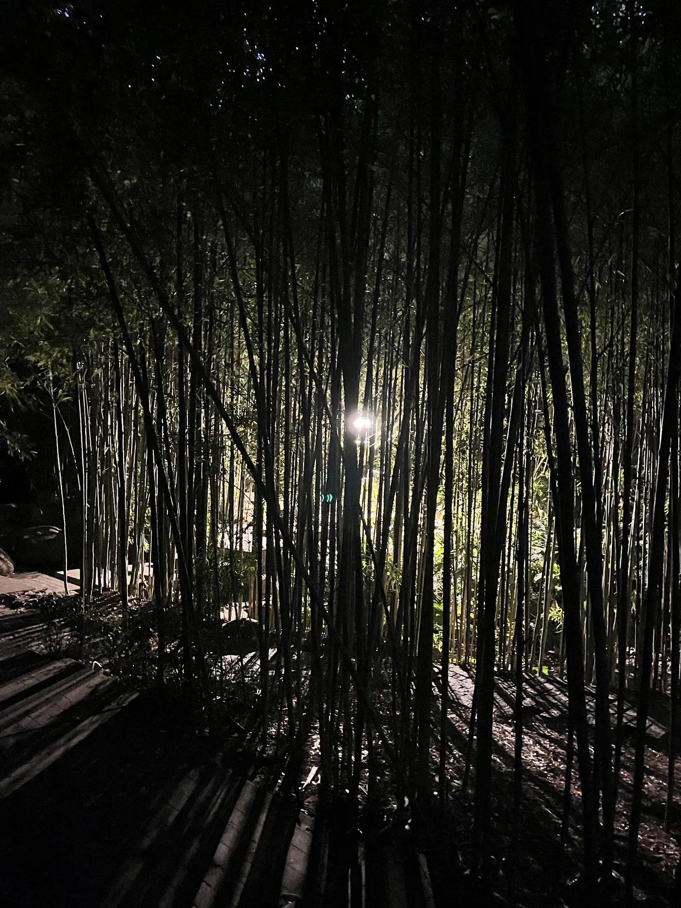
Neste modo de observar as coisas eu me encontrava quando fui levantar o bilhete no recém-inaugurado CAM, uma versão mais polida do antigo. Poder-se-ia dizer que honrou o anterior, de resto pouco notório, pelo menos não tanto quanto o principal edifício da Fundação ou o anfiteatro ao ar livre ou os restantes espaços que constituem a malha arquitectónica do único idílio das Avenidas Novas. De bilhete levantado, dirigi-me para a entrada do concerto, onde se seguiu aquela situação tão característica da modernidade e tão representativa da nossa mansa civilização. Refiro-me à fila, vulgo “bicha”. Recordo-me excepcionalmente bem de uma situação em 2017 em que um concerto estava a ser preparado neste mesmo local e subi um pequeno monte que rodeia uma secção deste anfiteatro, para ver o que se passava. Claro está que fui prontamente admoestado pelo segurança diligente. O suposto instinto animal é cringe e desrespeitador das normas a que fomos habituados, por isso tem de ser bem controlado. Pior que o segurança, é ouvir de alguém que se sente injustiçado por ter sido obrigado1 a esperar tanto tempo e que acusando e relembrando todos os preceitos da submissão, cospe invectivas para a órbita do atrevido que decidiu ignorar a lei. Há que respeitar a fila. Nada contra a organização do evento. Trata-se mais duma obsessão pessoal, daquelas que as crianças têm quando se deparam com o mundo dos adultos e se questionam porque é que as coisas têm de ser de certo modo e não de outro. Aqui os pais respondem que é assim porque sempre foi assim. Qual seria a alternativa? Caos, o que para muitos é o mesmo que dizer zero alternativas. Conclusão lógica, há que respeitar a fila.
Mas há uma alternativa: o flamenco. Trata-se de uma arte que permite bastante improvisação, e que tem no seu seio uma disciplina brutal de educação musical, só assim se consegue tocar daquela maneira. El duende, que tantos expatriados consideram essencial à expressão artística do flamenco, só pode ser obtido se o corpo estiver treinado. Uma pessoa não bebe uns copos em Sevilha e toca logo um rasgueado. São anos de ginástica e mesmo assim a real virtuosidade atinge poucos. Tal como a liberdade, só poucos sabem como a obter. Guy Debord seria uma possível hipótese, mas a sua atitude fura-vidas não creio que seja meritória de elogios. Do que me parece, estava sempre dependente de outrem, quase que numa certa adolescência permanente, num sentido jungiano.
Volta-se, por isso, ao flamenco. Poderá este espectáculo obedecer aos critérios exigentes que esta forma de arte tem para si própria? Pode a disciplina permitir e aliás ser pré-condição para rasgos de improviso? Por enquanto eu estava mais focado a observar as gentes. Antes mesmo de cruzar a perna e preparar-me mentalmente para o concerto que iria ter lugar, pus em prática um ritual de bastante interesse antropológico em que não travo conversa com ninguém e ignoro qualquer interação por mais promissora que seja. Assim, reparei nos vários dialectos das camisolas empregados pelos espectadores, iluminadas pelas luzes do palco viradas para a audiência, davam uma impressão de mosaico tecnicolor. Mais do que a performance em si, não raras vezes é do que mais apraz num espetáculo é ver quem vem pela festa, quem vem pela arte, quem pode e quer efectivamente consumir cultura, e aqueles casos raros que encarnam todas estas facetas.
O concerto começou de maneira curiosa, com field recordings de uma oficina enquanto os tocadores de campaniça fingiam que afinavam as violas e isto eu sei discerni-lo, porque também toco. A fusão que se seguiu entre estas, com pares de cordas de aço, mais a incrível voz do cantor e as guitarras clássicas com cordas de nylon poderia ser surreal, mas foi parcamente explorada. A certo momento no espectáculo, quando todos tocaram juntos, creio que ouvi mesmo uma orquestra inteira de música experimental. Foi o mesmo que ver uma kora a tocar acompanhada dum koto, ou seja, instrumentos que nunca estão juntos, mas que se assemelham tanto que seria de esperar que alguém já os tivesse combinado. O flamenco raramente permite este tipo de aventura e essa subversão foi talvez o principal mérito desta performance de El cante rasgueado, por Niño de Elche e Pedro G. Romero. O resto do espectáculo foi convencional, uma vez tocavam os do flamenco, outra vez tocavam os das campaniças, por vezes por cima dumas gravações de cante, o que pareceu totalmente atávico, a intemporalidade da voz e da guitarra suplantada por umas gravações. Por cima destas, o intérprete arrasou com a voz bestial dele e ficou como quando o rapper manda ad-libs por cima da faixa que já toda a gente ouviu em casa e no concerto esperaria algo mais vivo. Pessoalmente, teria juntado todas as guitarras numa orquestra estilo a que Robert Fripp tinha nos anos 80 e dito para improvisarem à sua vontade, com a voz do intérprete a irromper sempre que ele desejasse. Mesmo assim, não deixou de ser muito agradável presenciar excelentes músicos a fazerem o que sabem fazer melhor, ainda que houvesse potencial para algo muito mais explosivo.
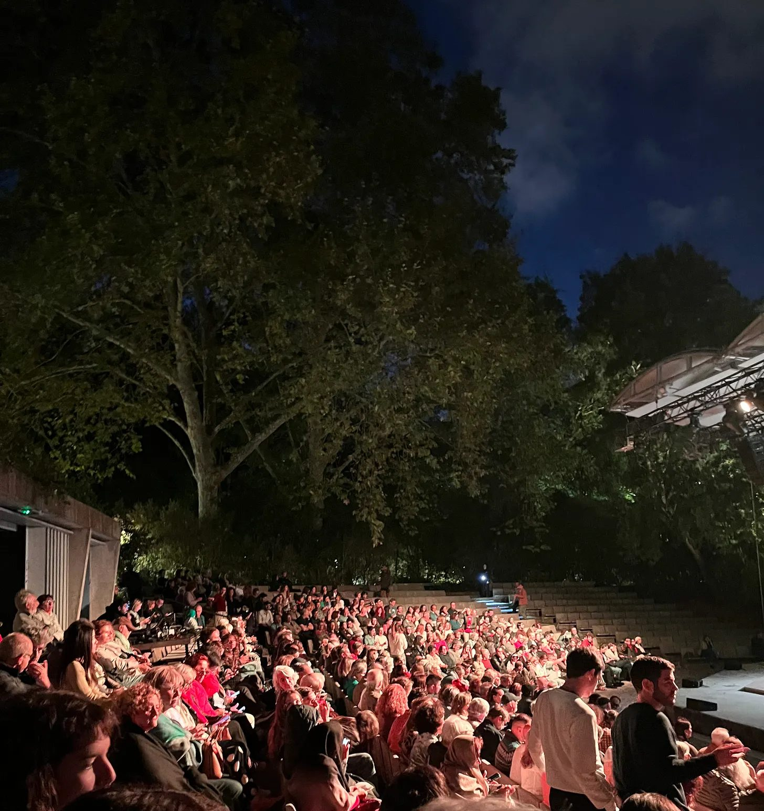
A Bienal deve por isso ser agradecida por incentivar e divulgar este tipo de exploração que é justamente o que se pretende de uma associação que promova a arte contemporânea. Ainda para mais num sítio como a Gulbenkian, tão rara que é. Fundações há muitas e jardins ainda menos. O seu homólogo em, por exemplo, Londres, o Barbican, em que até o tipo de letra que usam é igual, não tem a mesma classe e mesmo essa cidade, tão cheia de espaços verdes como está, não tem nem um jardim que se assemelhe ao da Gulbenkian, onde este concerto teve lugar. Toda a experiência deste espectáculo e o seu meio circundante mereceu por isso ser cristalizado hoje.
QV PRATICA A NOVA REPORTAGEM.
Notas
Leia-se, não alguém a quem forçaram a estar numa fila, mas alguém que agradece a oportunidade de abnegar da liberdade mais básica de um bípede, que é o movimento fluido das pernas, e ficar parado, andando só quando é para andar devagar, em direcção a seja onde for que a fila leva. Em tempos de ócio, um dos meus vários passatempos em que me dedicava a trazer o bem ao mundo de maneiras inusitadas, era meter-me em filas aleatórias só pela piada, fingir que esperava e depois bazar mesmo antes de ser atendido. Depois do choque inicial, a cara de quem estava atrás de mim ficava iluminada como se lhe tivessem oferecido uma segunda vida. ↑